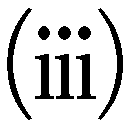

| ソクラテスの弁明 | |
| プラトン | |
| (2012) | |
ソクラテスの弁明
プラトン
納富信留訳
Title: ΑΠΟΛΟΓΙΑ ΣΩΚΡΑΤΟΥΣ
B. C. 4c
Author: ΠΛΑΤΩΝ
凡例
プラトン（Πλάτων）著『ソクラテスの弁明』（Ἀπολογία Σωκράτους）の翻訳にあたり、底本として、W. S. M. Nicoll校訂のオクスフォード古典叢書新版（Platonis Opera I, Oxford Classical Texts, 1995）を、John Burnet校訂の旧版（Platonis Opera I, Oxford Classical Texts, 1900）と併せて用いた。ギリシア語の読みが相違する重要な箇所については、注で説明する。
本文下部に付した数字とアルファベットは、ステファノス版プラトン全集（一五七八年刊、第一巻）のページ数と段落であり、一般にプラトンのテクスト箇所に言及するために用いられる。章分けは近代の産物であるが、便宜のため踏襲した。
ギリシア語のカタカナ表記にあたっては、原則として、人名、地名では長音記号を省き、普通名詞は原音を尊重した。ただ、厳密な統一は図らず、慣例に従っている。
内容理解に必要な事項については「注」で説明し、議論については「解説」で詳しく論じる。

目 次
©Noburu Nōtomi 2012
◎ご注意
本作品の全部または一部を無断で複製、転載、改竄、公衆送信すること、および有償無償にかかわらず、本データを第三者に譲渡することを禁じます。
個人利用の目的以外での複製等の違法行為、もしくは第三者へ譲渡をしますと著作権法、その他関連法によって処罰されます
紀元前四九二～前四七九年、ギリシア本土に二度にわたって侵攻したペルシアの大軍を、スパルタとアテナイを中心とするギリシア・ポリス連合軍が退けた。そのペルシア戦争から一〇年が過ぎた前四六九年頃、ソクラテスは、ソフロニスコスとパイナレテの子としてアテナイに生を享けた。
その後アテナイは、ギリシアの一方の盟主として、ペリクレスの指導による民主政の下で全盛期を迎え、ソクラテスはその時代に青壮年期を送った。アテナイはやがてスパルタとのペロポネソス戦争に突入し（前四三一～前四〇四年）、敗戦直後の混乱期をへて再び民主政となるが、ソクラテスはその時期には内外に知られる代表的知識人となっていた。同時代では、アイスキュロス、ソフォクレス、エウリピデスが悲劇を、アリストファネスが喜劇の傑作を毎年舞台にかけ、ペイディアスの指揮でパルテノン神殿が再建されるなど、古典文化が花開いていた。アナクサゴラスを始めとする自然学者たち、プロタゴラスやゴルギアスらソフィストたちが、ギリシア各地からアテナイに集い、競って市民たちに新しい知識を教授して、街は知的刺激に満ちていた。
ソクラテスは石工を職業として、妻クサンティッペや子供たちと普通の家庭を営みながら、人々と街角で「徳」をめぐって対話を交わす人生を送っていた。このアテナイ出身の最初の哲学者は、七〇歳になっていた前三九九年春に、突然「不敬神」の罪で告発され、死刑の判決を受ける。
告訴状には、こうあったと伝えられる（出典や解釈については「解説」を参照）。
「ソクラテスは、ポリスの信ずる神々を信ぜず、別の新奇な神霊のようなものを導入することのゆえに、不正を犯している。また、若者を堕落させることのゆえに、不正を犯している。」
不敬神の行いは、ポリス全体に対して害悪となると信じられていた。ソクラテスのそれまでの言動が、公共への不正として告発されたのである。
アテナイの裁判では、告訴状の提出と事前審査をへて、まず、告発者による「告発」がなされ、それを受けて被告人による「弁明」が述べられる。裁判では、当日くじ引きで選ばれた市民が裁判員となり、投票で判決を与えた。ソクラテスに向けられた「不敬神」の罪状は、バシレウスの役所で審査された後に、五〇一人の裁判員によって二度の票決に付されたと考えられている（裁判員の数は、五〇〇名であったという説もある）。「弁明」の後、一度目の票決は、有罪か無罪かを決めるためのもので、有罪の場合には、双方が申し出た刑罰（量刑）の間で二度目の票決が行われた。裁判は一日で結審する。
裁判は、告発者と被告人の当事者双方が直接裁判員に語りかける形式をとり（弁護士や検事はいなかった）、水時計で計られた制限時間内で演説が行われる。途中で、必要な「証人」の証言をはさむことができ、その間は水時計が止められた。ソクラテスの告発は、若い詩人メレトス、弁論家リュコン、革職人で保守派の政治家でもあるアニュトスの三名連記でなされたが、裁判ではメレトスが代表して演台に登壇し、他の二人も発言したものと思われる。おおぜいを前に屋外で肉声でなされる弁論は、よほど手慣れた者でなければ十分に説得力を発揮できなかったであろう。ソクラテスは慣れぬ場に立って、あらぬ嫌疑に正面から応じていかなければならなかった。
ソクラテスは裁判員たちに自らの罪状への「弁明」を述べた後、有罪の票決を受け、刑罰をめぐる二度目の投票によって死刑が確定する。だが、ソクラテスが判決に従って毒杯を飲んで死ぬのは──ある偶然の事情から──裁判から一ヶ月ほど後のこととなる。その事情と刑死までの様子は、続編にあたる『クリトン』、『パイドン』篇でくわしく描かれる。
この裁判の判決については、ソクラテスの死後も何年にもわたって賛否をめぐる論争が続き、ソフィストのポリュクラテスは前三九三年頃に『ソクラテス告発』というパンフレットを公刊して、論争を再燃させたという。ソクラテスの親しい仲間たちは、彼を擁護しその正義を証明するために、「ソクラテス文学」と呼ばれる多くの著作を公刊した。クセノフォンは『ソクラテスの想い出』で、ポリュクラテスの批判に本格的に答えている。クセノフォンには、『ソクラテスの弁明』という、プラトン作品と同名の小著も現存している。
裁判に臨席した若者プラトンも、後年──ただし、おそらくクセノフォンより前に──ソクラテスが一人称で語る法廷弁論の形式で、『ソクラテスの弁明』と題する作品を著した。訳者の理解では、これは、ソクラテスが裁判で実際に語った内容の記録ではなく、また、その言葉の忠実な再現でもない。ソクラテスの裁判とは何だったのか、ソクラテスの生と死とは何だったかの真実を、「哲学」として弁明するプラトンの創作である。そこには、ソクラテスという人物をめぐる同時代人たちとの応酬と、それを越えてプラトン自身がソクラテスから受けつぎ展開する普遍的な「哲学」の始まりが込められている。
この作品を読む方は、「皆さん」と呼びかけられる裁判員の席に坐って、騒然とする屋外の法廷でソクラテスの語りに耳を傾けている自分の姿を、想像してください。当日に裁判員に任命されたばかりの法廷で、何が起っているのかもよく分からないまま、告発者メレトスやアニュトスの訴えに耳を傾け、次に被告ソクラテスの言葉を聞いて、その場で票を投じなければならない。さて、その瞬間にあなたは、どんな目にあい、何を考え、どう行動するのでしょうか。
『ソクラテスの弁明』は、私たち一人ひとりに、自分のあり方、生き方を問う作品なのです。
この作品の構成は、以下の通りである。
第一部 告発への弁明
前置き 第一～二章
古くからの告発への弁明 第三～一〇章
新しい告発への弁明 第一一～一五章
哲学者の生の弁明 第一六～二二章
弁明の締めくくり 第二三～二四章
〔ここで有罪・無罪の投票がなされる〕
第二部 刑罰の提案 第二五～二八章
〔ここで死刑・罰金刑の投票がなされる〕
第三部 判決後のコメント 第二九～三三章
第一部 告発への弁明
前置き
一
（17Ａ）アテナイの皆さん、皆さんが私の告発者たちによってどんな目にあわれた（1）か、私は知りません。ですが、私のほうは、あの人たちのおかげであやうく自分自身を忘れるところでした。それほど説得力をもって、彼らは語ったのです。しかし真実は、あの人たちは、いわば何一つ語りませんでした。
語られたたくさんの偽りのなかで、一つ、とりわけ驚いたのは、私が手強い言論の語り手なので、皆さんが私に騙されないように注意すべきだ、と言ったことです。（17Ｂ）私が手強い語り手などでないことは、どのみち明らかになるのですから、その事実でもってすぐに私に論駁されてしまうのを恥にも思わないことが、私には、彼らのもっとも恥知らずな点だと思われたのです。もしもこの人たちが、真実を語る者のことを「手強い語り手」と呼ぶのでなければ、の話ですが。そういう意味で言っているのなら、彼らとはちがう意味で私が「弁論家」であることに同意しましょう。
さて、この人たちは、今言ったように、真実はほとんどなにも語りませんでしたが、あなた方は、私から真実のすべてを聞くことになります。でも、ゼウスの神にかけて、アテナイの皆さん、皆さんがお聞きになるのは、この人たちが語ったような美辞麗句で飾り立てられた言論でも、（17Ｃ）多彩な語句や表現で整えられたものでもなく、思いついた言い方でテキトウに語られるものとなるでしょう。それは、私は自分が語る中身が正しい、と信じているからです。ですから、あなた方はどなたも、これ以外の語り方を期待しないでください。おそらく、皆さん、若い連中のように言論をでっち上げてあなた方の前に進み出るのは、こんな歳になった者には相応しくないでしょうから。
そこで是非、アテナイの皆さん、皆さんにお願いして許していただきたいことがあります。多くの方々は、公共広場の両替商のところや他の場所で、私が話しているのをお聞きになったことがあるでしょう。その慣れ親しんだ言葉で弁明するのを聞いても、（17Ｄ）どうか、そのために驚いたり騒いだりなさらないでください。
実を言いますと、私は七〇にもなって、今、初めて法廷で登壇したのです。ですから、私はここでの話し方にはまったく不慣れなのです。仮に私が実際に外国人だったら、育った土地の発音や方言で語っても、皆さんは許してくださるでしょう。
ですから今もまた、（18Ａ）私は皆さんに次のことをお願いします──それが正当だと思われるのです──つまり、話し方はどうぞ気にしないで──下手かもしれないし、もしかしたら上手かもしれませんが──私が語っていることが正しいかどうか、そのことだけを検討し、そこに注意を向けてください。これこそが裁判員、つまり正義の裁き手の徳（2）であり、弁論する者の徳は、真実を語ることなのですから。
二
アテナイの皆さん、まず最初に、私への最初の偽りの告発とそれをなした最初の告発者たちに対して、その次に、もっと後になされた告発とその告発者たちに対して、弁明するのが正当でしょう。
（18Ｂ）と言いますのは、あなた方に対して私を告発する者は、昔からもう長い年月おおぜいおり、何一つ真実を語らずにきたのですが、私は彼らを、アニュトス一味よりももっと恐れているのです。この連中も手強いのですが、彼らはもっと手強いのです。皆さん、その人たちはあなた方の多くを子供のころから傍において説得し言いくるめながら、何一つ真実でないことでより強烈に私を告発してきたのです。
「ソクラテスという知恵ある男がいて、天空のことを思弁し、地下のものすべてを探り出して、弱論を強弁する（3）のだ」などと語って。
アテナイの皆さん、こんな噂を広めた人たちが、私の手強い告発者なのです。（18Ｃ）その噂を耳にした者は、そんなことを探求する奴なら神々も信じやしないだろう、と考えるでしょうから。
そしてこの告発者たちは、数も多いし、もう長い間告発しつづけてきているのです。さらに、あなた方がもっとも信じやすかった年頃に──子供や若者だった方もいるでしょう──あなた方に向かって語っていたのです。誰一人弁明しない、いわば欠席裁判で私を告発しながら。
しかし、なんといっても不条理なのは、私が彼らの名前も知らないし、言うことさえできないことです。ある喜劇詩人がいたことを除いてね（4）。（18Ｄ）妬みや中傷を身にまとってあなた方を説き伏せてきた人たちは──自分たちも説得されて他の人々を説得しているのですが──皆まったく扱いにくい連中なのです。また、私はその誰一人この法廷に引っぱり出すこともできず、論駁することもできないので、いわば影と戦うように弁明し、誰も答えないまま論駁しなければならないからです。
ですから、皆さんも、お話ししているように、私には二種類の告発者がいること、つまり、今ここで告発している人たちと、（18Ｅ）私の言う昔からの告発者がいることを認めてください。そして、私はまず、あの古い告発者たちに対して弁明すべきだ、とお考えください。あなた方は、ここにいる後の告発者たちよりも以前に、その人たちからずっと強烈な告発を聞いてきたからです。
さあ、それでは、アテナイの皆さん、私は弁明し、あなた方が長い時間に身につけたこの中傷を、こんな短い時間で取り除くように、やってみなければなりません。（19Ａ）もしそれが皆さんにとっても私にとっても、より善いことであるのなら、そうなるように希望します。そうして弁明してなんらか上手くいくことを。でも、それは難しいと思いますし、どんな具合か、分からないではありません。しかし、ことの成否は神の御心にお任せし、法に従って弁明しなければなりません。
古くからの告発への弁明
三
さて、私への中傷が生じたその大本の告発が何なのか、始めから取り上げてみましょう。（19Ｂ）メレトスはそれを信じこんでこの起訴状を書いたわけですから（5）。
さあでは、中傷している人たちは、どう言って私を中傷しているのでしょうか。彼らが実際に告発しているかのように、宣誓供述書を読み上げる必要があります。曰く、
「ソクラテスは不正を犯し、余計なことをしている。地下と天空のことを探求し、弱論を強弁し、またまさにその類いのことを他の人々に教えることで。」
まあ、こんなものでしょう。（19Ｃ）
皆さんもこういったことを、ご自身でもアリストファネスの喜劇でご覧になっていますよね。そこでは、ソクラテスなる人物が宙づりで引っぱり回されながら、空中を闊歩すると豪語し、他にも多くの馬鹿馬鹿しいことをしゃべっているのですが（6）、私はそういったことには、すこしも知識がないのです。
私はそのような知識を、もしそういった主題についてだれか知者がいるとして、けっして軽蔑するつもりでお話ししているのではありません──メレトスに、そんな大それた罪で告発されなければよいのですが──ですが実際には、アテナイの皆さん、私はこういったことはまったく与り知らないのです。
今度は、皆さんの多くを証人として提出します。（19Ｄ）これまで私が対話をしているのを聞いたことがある方々は──多くの皆さんはそういった経験をされているでしょうから──お互いに教えあい、指摘しあっていただきたいのです。では、あなた方の中でどなたか、こういった主題について私が対話しているのを、かつてすこしでも聞いたことがある人がいたら、どうかお互いに指摘してみてください。
そうすれば皆さんは、私について多くの人々が語っている他のことも、同様に根拠がないのだと、お分かりになることでしょう。
四
いや実際、これは何一つ本当ではありません。また、もし皆さんがだれかから、私が人々を教育しようとして金銭を取っていると聞いたことがあっても、（19Ｅ）それも真実ではありません。もっとも、レオンティノイの人ゴルギアスやケオスの人プロディコスやエリスの人ヒッピアスのように（7）人間教育ができるのなら、それは立派なことだと思いますが。
皆さん、彼らはそれぞれ、あらゆるポリスにおもむいては若者たちを説得し、若者たちは同胞の市民なら望めばだれとでもただで交際できるというのに、その者たちとの交わりを放棄させ、金銭を払わせた上で感謝までさせて、（20Ａ）自分たちと交際するように仕向けることができるのですよ。
他にも、ある知者が、パロス島からこの地を訪れているのを私は知っています。と言いますのは、私は、たまたまある男のところに行ったのですが、その男とは、他のすべての人が投じた総額よりも多くの金銭をソフィストたちにつぎ込んできた人物、ヒッポニコスの息子カリアスです（8）。私は彼にこう尋ねました。カリアスには二人の息子がいるからです。
「カリアス君、もし仮に君の息子たちが仔馬や仔牛だったとしたら、彼らに相応しい徳に関して、（20Ｂ）立派で優れたものにするような監督者を見つけて傭い入れることができただろう。つまり、馬の調教師や農業の技術者をね。
だが実際は人間なので、君は息子たちのために、どんな人を監督者として迎えるつもりなのかい。そういった人物、つまり、人間のもつ市民としての徳について知識をもっている者とは、誰なのだろう。君には息子がいるのだから、もう考えているだろう。誰かいるのか、どうかい？」
私がこう言うと、彼は、「無論、いますとも」と答えました。
私が「誰だい、どこから来た方で、いくらで教えてくれるのかい」と尋ねると、「エウエノスですよ（9）、ソクラテス。パロス島出身で、五ムナです」と言ったのでした。
私は、エウエノスが本当にそんな技術をもっているとして、そんなお手頃な価格で教えているというので、彼を祝福したのです。もしも私にそんな知識があれば、（20Ｃ）私は自分を美化し自慢に思ったことでしょう。ですが、アテナイの皆さん、私はそんな知識はもちあわせていないのです。
五
それでは、皆さんのどなたかが、もしかすると、こう言いかえすかもしれません。
「だが、ソクラテスよ、君のやっている事とは、一体何なのか？ どこから君にそんな中傷が生じてきたのだ？ 君が他の多くの人たちと違うことをしておらず、別段なにも変わったことに従事していないのなら、こんな噂話が出てくるなんて、おそらくあり得ないだろうから。私たちに、それが何なのか、言ってみなさい。私たちが君について、即断しないように」と。
（20Ｄ）その人の言うことは正しいと思いますので、私のこの「知者」という名前と中傷を作り上げたのは一体何なのか、皆さんに言論で示すように試みましょう。
では、聞いてください。もしかしたら、私が冗談を言っていると思われる方がいるかもしれません。ですが、よろしいですか、私は皆さんに真実のすべてをお話しするのです。
アテナイの皆さん、私は他でもない、ある知恵のゆえに、この名前を得ているのです。では、それはどんな知恵でしょう。おそらく人間的な知恵でしょう。本当に、この点では私は知者なのかもしれません。
ですが、今しがたお話しした人たちは、たぶん、なにか人間に相応しい以上の知恵について、知者なのでしょう。そうでなければ、（20Ｅ）私には何と言ったらよいか分かりません。私のほうは、そんな知識に与っていないのですから、私がその知恵をもっていると主張する人は噓をついており、私を中傷するためにそう言っているのです。
アテナイの皆さん、私のためにも、どうか騒がないようにしてください。皆さんに、もし私がなにか大それたことを言っていると思われたとしても。私は、自分の言葉としてお話しするのではなく、皆さんにとっても信頼に足る話し手に登場していただくつもりなのですから。私の知恵について、それがなにか知恵と呼べるものかどうか、また、どういうものなのか、私は皆さんに、デルフォイにおわす神を証人としてお出しするつもりです（10）。
カイレフォンをたぶん憶えておられるでしょう（11）。若い頃から私の友人であり、あなた方民衆にとっては同志としてあの亡命を共に経験し、（21Ａ）皆さんと共に帰還した一人です。カイレフォンの人となりを、なにに向かうにも情熱的な性格だったことを、皆さんもご存知でしょう。
実際、彼はある時、デルフォイにおもむいて、あえて次のことで神託のお伺いを立てたのです（12）──皆さん、私がお話しすることで、どうか騒がないでください──彼は、私よりも知恵ある者がだれかいるか、そうお尋ねしたのです。そして、ピュティアの巫女は、『より知恵ある者はだれもいない』と答えを告げました。
このことについては、ここにいる彼の弟が証人になってくれるでしょう。カイレフォン自身は亡くなっているので。
六
何のためにこんなことをお話ししているのか、考えてみてください。（21Ｂ）私への中傷がどこから生じているか、皆さんにお教えするつもりだからです。
私はその神託を聞いて、こう思案しました。
「神は、一体何をおっしゃっているのだろう。何の謎かけをしておられるのだろう。私は、知恵ある者であるとは、自分ですこしも意識していないのだから（13）。神は、私がもっとも知恵ある者だと主張されることで、一体何を言われているのか。まさか、噓をつかれるはずはない。それは、神の掟に適わないことなのだから」と。
そして長い間、神が一体何を言っておられるのか、困惑していました。そしてその後で、まったく気が重いながらも、神の意図をめぐって次のような探求へと向かったのです。
（21Ｃ）私は、知恵があると思われている人の一人を訪ねました。可能ならそこで神託を論駁して、神の託宣に対してこう示そうと思ったのです。
「この人が、私より知恵ある者です。あなたは、私がそうだ、とおっしゃったのですが」と。
そこで、その人をよく吟味しながら──名前を挙げてお話しする必要はないでしょうが、政治家の一人でした──その吟味で次のような経験をしました。アテナイの皆さん、その人と対話をしていて、私にはこう思われたのです。
「この人は、他の多くの人間たちに知恵ある者だと思われ、とりわけ自分自身でそう思いこんでいるが、実際はそうではない」と。
そこで私は、その人が自分では知恵があると思っているが実際はそうでない、ということを当人に示そうと努めました。このことから、（21Ｄ）私はその人に憎まれ、また、そこに居合わせた多くの人たちにも憎まれたのです。
私は帰りながら、自分を相手にこう推論しました。
「私はこの人間よりは知恵がある。それは、たぶん私たちのどちらも立派で善いことを何一つ知ってはいないのだが、この人は知らないのに知っていると思っているのに対して、私のほうは、知らないので、ちょうどそのとおり、知らないと思っているのだから（14）。どうやら、なにかそのほんの小さな点で、私はこの人よりも知恵があるようだ。つまり、私は、知らないことを、知らないと思っているという点で」と。
このことから、私は、その人よりもっと知恵があると思われている別の人の所にも行きましたが、まったく同じ状態だと思われたのです。そしてそこでも、（21Ｅ）その当人と他の多くの人々に憎まれてしまったのです。
七
その後も、私は次々と訪問をつづけました。憎まれていることに気づいていたので、苦しみ、恐れも感じていましたが、でも、神のことをなによりも大事にしなければならないと考えていたからです。神託が何を言っているのか、考察するために、なにか知っていると思われている人であればだれの所にでもおもむくべきだと。
犬に誓って申しますが（15）、アテナイの皆さん、（22Ａ）皆さんに真実を語らなければなりません。誓って、私はこんなことを経験したのです。神に従って探求していた私には、もっとも高い評判を勝ちとっている人たちに、ほとんど最大のものが欠けている、と思われたのです。それに対して、劣っていると思われた人たちのほうが、思慮を備えているという点では、ずっとマトモな人間だと思われたのです。
結局私は、神託が論駁できないことを確認するために苦労を積み重ねたようなものですが、その遍歴を皆さんにお示しすべきでしょう。私は政治家たちの後で、悲劇やディテュランボスや他の詩の作家たちのもとに行ったのです（16）。それは、（22Ｂ）そこで私自身がその人たちよりも無知であることを、現場で取り押さえようとしたためでした。
そこで、詩人がとりわけ入念に彫琢していると私に思われた詩の作品を取り上げて、彼らに、何を言っているのか尋ねたものです。それは、同時に、その人たちからなにかを学ぼうと思ってのことでした。
皆さん、真実を語るのは恥ずかしいのですが、でも、語らねばなりません。詩人たちが作品にした内容については、その場に居合わせた人たちのほうが、ほとんど全員と言ってよいほど、本人たちよりももっと優れたことを語ることができたのです。
私は今度も、短い間で詩人たちについて次のことが分かりました。つまり、彼らは知恵によって作品を作っているのではなく、なんらかの資質によって、（22Ｃ）ちょうど予言者や神託を受ける巫女のように、神懸かりでやっているのだと。そういった神の僕たちは、多くの立派なことを語っていても自分が語っている内容を何一つ知ってはいないのですが、詩人たちもまた、なにかこのような状態にあることが私には明らかになりました。同時に、その人たちが詩を制作しているがゆえに、他の事柄についても、本当は知らないのに人間の中でもっとも知恵があると思いこんでいることに気づいたのです。
そして私は、ちょうど私が政治家たちよりも優れていたその同じ点で、詩人たちよりも優っていると思いながら、その人たちのもとを立ち去ったのです。
八
最後に、手仕事職人たちのところに行きました。私にはいわば何一つ知識がないことを自分で意識していましたが、（22Ｄ）この人たちは多くの立派なことについて知識をもっているのを発見するだろうと、分かっていたからです。
その点で私は間違っていませんでした。私が知識をもっていない物事について、職人たちは知識をもっていて、その点では私よりも知恵があったからです。
ですが、アテナイの皆さん、詩人たちが犯していたあの同じ誤りを、この優れた職人たちも犯しているように、私には思われました。つまり、技を見事になしとげるからといって、それぞれの職人は、他のもっとも大切なことについても、自分がもっとも知恵ある者だと自惚れてしまっていたのです。この調子外れが、彼らのあの立派な知恵までも覆い隠していると思われたのです。
そうして、私は神託になり代って、（22Ｅ）こう自分に問いかけてみました。
「私が今ある状態でいることが、つまり、あの人たちのもつ知恵の点で知恵ある者ではないが、その無知の点で無知でもないのがよいのか。それとも、あの人たちがもつ知恵と無知の両方を受け入れるのがよいのか」と。
そして、私は自分自身と神託に対して、こう答えたのでした。
「私は、このままの状態でいるほうがよいのだ」と。
九
（23Ａ）まさにこの吟味から、アテナイの皆さん、非常に厳しく非常に重い私への敵意が、たくさん生じました。それらの敵意から多くの中傷が生じて、「知者である」というこの呼び名で呼ばれるようになったのです。そこに居合わせた人たちは、吟味のたびに、私が他の人を吟味しているその主題について私が知者である、と考えたからです。
しかしおそらく、皆さん、本当は神こそが知恵ある者なのであり、この神託では、人間的な知恵などというものも、ほとんどなににも値しない、とおっしゃっているのでしょう（17）。そして神託は、このソクラテスについて語っているように見えても、実は私を例にして、（23Ｂ）私の名前をついでに使っているだけなのです。
ちょうどこう言っておられるように。
『人間たちよ、ソクラテスのように、知恵という点では真実にはなににも値しないと認識している者（18）が、お前たちのうちでもっとも知恵ある者なのだ』と。
そうして私は、今もなお歩き回ってはこのことを探求し、神に従って、街の人であれ外国の人であれ、知恵があると私が思う人がいたらと探し求めているのです。そして、その人に知恵があると私に思われなかったら、神のお手伝いをして、知者ではないということを示すのです。
この仕事で暇がないために、ポリスの仕事でなにか語るに値するようなことを行ったり、家のことを行ったりする余裕が、私にはありませんでした。（23Ｃ）神への奉仕ゆえに、私はひどい貧乏に陥っているのです。
一〇
こういったことに加えて、若者たちが自ら進んで私に従い──彼らは裕福な家の出なので、とくに暇があったのです──人々が吟味されるのを聞いては喜んでいました。若者たちはしばしば私の真似をして、他の人々を吟味しようとするのです。そうして、どうやら彼らは、なにか知っていると思っているが実はほとんど何一つ知りはしない人間たちを（19）、惜しげもなくたくさん見つけ出してしまったのです。
そのことから、若者たちに吟味された人々は、自分たち自身にではなく、私に対して怒りの矛先を向けて、ソクラテスなる者はまったくひどい奴で、（23Ｄ）若者たちを堕落させている、などと主張しているのです。
そして、だれかがその人たちに、私が一体何をして何を教えているのかと尋ねても、彼らはなにも言うことができず知りもしないのに、困惑していると思われたくないので、知を愛し求めている者（20）ならだれにでも向けられるお手軽な言い草を口にするのです。「天空や地下のこと」とか、「神々を信じない」とか、「弱論を強弁する」とか、そういったことです。
彼らは真実を言いたくないのだ、と私は考えます。それは、知っている振りをしているのに、実際にはなにも知ってはいないことが、明らかになってしまうからです。
さて、彼らは名誉心がつよく激烈で人数も多いので、（23Ｅ）隊列を組んで説得力をもって私について語り、昔から強烈に中傷を加えて皆さんの耳を満たしてきました。これがもとになって、メレトスが、そしてアニュトスやリュコンが、私を攻撃したのです。メレトスは詩人を代表して、アニュトスは職人と政治家を代表して、そしてリュコンは弁論家を代表して、（24Ａ）私に憎悪を向けています（21）。
その結果、始めにお話ししたように、これほど大きくなってしまっているこの中傷を、これほど短い時間に取り除くことができるとしたら、それは驚くべきことでしょう。
アテナイの皆さん、今まで述べてきたことが真実であり、皆さんにすこしも隠し立てせず、ためらうことなくお話ししています。しかしながら私は、まさにこのこと、つまり真実を話すということで憎まれているのだということを、よく知っています。そして私が憎まれているというまさにそのことが、私が真実を語っていることの証拠でもあり、そして、私への中傷とはまさにこういうもので、これが告発の原因であるということの証拠でもあるのです（22）。
そして、今でも、また今度でも、あなた方がこのことを追究されたら、（24Ｂ）そのとおりだと見出されることでしょう。
新しい告発への弁明
一一
さて、私の最初の告発者たちが告発したその内容については、皆さんに対して十分に弁明したことにしましょう。ではこの後で、メレトス──立派な愛国者を自称しているこの男と、後の告発者たちに対して、弁明するよう試みましょう。
この人たちが別の告発者だとして、今度も彼らの宣誓供述書を取り上げてみましょう。それは大体こんなものです。曰く、
「ソクラテスは不正を犯している。若者たちを堕落させ、かつ、ポリスが信ずる神々を信ぜず、（24Ｃ）別の新奇な神霊のようなものを信ずるがゆえに（23）。」
告発はこんなものでしたが、その内容について一点ずつ吟味していきましょう。
さて、メレトスは、私が若者たちを堕落させていると主張しています。ですが、アテナイの皆さん、私のほうは、メレトスこそ不正を犯していると主張します。それは、自分がこれまでまったく配慮してこなかった問題について真剣で関心のある風を装いながら、他人を安易に裁判にかけて、真面目ぶって他人をからかっているからです。事実がこのとおりだということを、皆さんにもお示ししましょう。
一二
それでは、メレトス君、さあ私に言ってくれ。君は、若い人々ができるだけ善くなることがもっとも大事だ、（24Ｄ）と思わないかい。
「無論、そう思う。」
さあでは、この人たちに言ってくれ。誰が、彼らをより善くするのだろうか？
これは君の関心事なのだから、知っているのは明らかだろう。君の主張では、若者を堕落させているのが私だと発見したので、私をここの皆さんのもとに引き出して告発しているのだからね。だから、さあ、彼らをより善くするのが誰なのかを言い、この方々にきちんと示しなさい。
［...間...］
ほら、メレトス、黙っていて言えないじゃないか。だが、これこそ、君がまったく配慮なんかしてこなかったという私の主張の十分な証拠であり、恥ずべき醜態だとは思われないかい？ いや、善き人よ、言いたまえ。誰が彼らをより善い者にするのか？
「法律だ。」
いや、そんなことを尋ねてはいない、ほんとうに善き人よ。（24Ｅ）そうではなく、それがどの人間かを聞いているのだ。まさにそれ、つまり、法律を一番よく知っている人のことを。
「ここにいる裁判員の皆さんだ、ソクラテス。」
メレトスよ、君は何を言っているのかな。この人たちは若者を教育することができて、実際により善くしているというのかい？
「無論そうだ。」
この全員かね。それとも、一部の人々はそうしているが、していない人もいるのか？
「全員だ。」
ヘラの女神に誓って、君は、まったくもって惜しみなくたくさんの助っ人が若者にはいると言うのだね。ではどうだろう。ここで傍聴している人々も、若者たちをより善くしているのではないか。（25Ａ）
「この人たちもそうだ。」
では、評議会の議員たちは（24）？
「評議員たちもだ。」
それでは、メレトスよ、民会に出る民会議員たちも、若者たちを堕落させることなどないね。むしろ、彼らもみな、より善い者にしているのだろう。
「彼らもだ。」
それでは、どうやらすべてのアテナイ人が、若者たちを立派で善い人間にしているのだ。私を除いてね。私だけが堕落させていると、そう君は主張するのだね。
「まったく、私はそのことを強く主張する。」
なんとも大きな不運に私は見舞われていると、君は見てとっているのだね。
では、答えてくれ。馬の場合でもこういうことがあると思うだろうか。馬をより善くしているのがすべての人間なのに、（25Ｂ）駄目にしているのは一人だけだ、ということが。それとも、まったく逆で、馬をより善くできるのは一人か、あるいはごく少数の者、つまり馬の調教師だけであり、他方で、多くの人々は馬と一緒に過ごして取り扱っていてもそれを駄目にしてしまうのではないか。メレトス君、馬であれ他のどんな動物であれ、そうではないか。
［...間...］
いや、まったくそうなのだ。君やアニュトスが否定しようと肯定しようと。もし一人の者だけが堕落させても、他の人々が助けてくれるのなら、若者たちには大きな幸せだろう。
いや実際、メレトスよ、（25Ｃ）君は今まで若者たちのことを考慮に入れたことさえないことを、十分に示してくれた。つまり、君自身の無配慮ぶりを明瞭に現しているのだ。君が私を法廷に引っぱり出したその問題について、君は何一つ配慮してこなかったことをね。
一三
ではさらに、ゼウスの神にかけて、メレトスよ、私たちに言ってくれたまえ。善良な市民の間で暮らすのと、劣悪な市民の間で暮らすのとでは、どちらが善いだろう？
［...間...］
君、答えたまえ。なにも難しいことを尋ねているわけではないのだから。劣悪な人々は、そのつど自分の近くにいる人たちになにか害悪を為すのであって、善い人は益になる善いことを為すのではないか。
「そうだ。」
では、（25Ｄ）一緒に暮らす人によって恩恵を受けるよりも害悪を加えられることを望む者が、だれかいるだろうか？
［...間...］
さあ、答えてくれ、善き人よ。法も答えることを命じているのだから。害悪を加えられることを望むような者がいるだろうか？
「いや、いない。」
では、どうだろう。君が私をここに引き出したのは、私が意図的に、若者たちを堕落させて劣悪な者にしていると考えてか、それとも、知らず知らずのうちにやったと考えてなのか？
「私は、あなたが意図的にやっていると主張する。」
どうだろう、メレトスよ。君は私よりもそんなに年が若いのに、こんな年とった私よりも知恵でそれほど優れているとはね。悪い人はとりわけ彼ら自身の近くにいる者にそのつど害悪を為すが、（25Ｅ）善い人は善いことを為すと、君のほうは認識しているのに、私のほうはまったくひどい無知に陥っているというわけだ。つまり、もし私が一緒にいるだれかを悪くしてしまったら、その人から私もおそらくなにか害悪を被るだろうということすら分からずに、その結果、それほど大きな害悪を、君の主張するところでは、意図的に加えているというのだから。
私はそんなことは信じないよ、メレトス。思うに、他のどんな人間だって説得されないだろう。いや、私は若者たちを堕落させてなどいないか、あるいは、もし堕落させているとしても、知らず知らずのうちにやっているはずなのだ。（26Ａ）だから、君はどちらの場合でも偽りを語っていることになる。
もし知らず知らずに堕落させているとしたら、そのような過ちでこの法廷に引き出す法は存在せず、個人的に私をつかまえて教え諭すか、叱責すればよい。もし私がそのことを学べば、知らずにやっていたことを止めるのは当然だからね。ところが、君は私に近づいて教え諭そうとはせずに、それを避けながら、私をここに引っぱり出したのだ。だが法は、この法廷に、処罰を必要とする者を引き出すべきだとしているのであり、学びを必要とする者をではない。
一四
いや実際には、アテナイの皆さん、私が言っていること、つまり、メレトスにとってこういった事柄がこれまですこしも配慮の対象となってこなかったことは、（26Ｂ）すでに明らかです。
だが、私たちに言ってくれ、メレトスよ。私がどんなやり方で若者たちを堕落させていると、君は主張するのか。いや、君が書いた告訴状によれば、ポリスが信じる神々を信じないで、それとは別の新奇な神霊のようなものを（25）信じるように教えてだ、というのは明らかなのだね。君は、私がそのことを教えて堕落させている、と主張しているのではないか。
「まったく、私はそのことを強く主張する。」
それでは、今この議論が問題にしているまさにその神々にかけて、メレトスよ、私にもここにいる方々にも、（26Ｃ）もっと明瞭に言ってくれたまえ。
というのも、私がなにかの神々が存在すると信じるように教えている（26）、と君が言っているのかどうか、私には分からないからだ。そうだったら、私自身は神々が存在することを信じており、無神論者などではまったくなくて、その点で不正を為してはいないことになる（27）。
いやむしろ、ポリスの信じる神々ではなく別の神々を、つまり「別のもの（28）」を信じているからというのが、君が私を告発している内容なのか。それとも、私が自分自身で神々を一切信じてはおらず、他の人々にもそう教えていると君は主張するのか、どちらかね。
「後者だ。あなたは神々をまったく信じていない、と主張する。」
驚いた人だ、メレトス。何のために君はそんなことを言うのだ。それは、私が、太陽も月も、（26Ｄ）他の人間が信じているように神々だとは信じていない、という意味なのか。
「ゼウスにかけて、裁判員の皆さん、そうなのです。この男は太陽が石であり、月は土であると主張しているのです。」
君はアナクサゴラスを告発しているつもりかね、親愛なるメレトスよ。君はそうしてここにいる方々を見下し、皆さんが書き物に不慣れで、クラゾメナイのアナクサゴラスの本（29）がそういった議論で一杯なのも知らない、とでも思っているのかね。その上また、若者たちはそんなものをわざわざ私から学ぶと言うのかね。その本は時には高くて一ドラクマも出せばアゴラの円形広場で買えるのだから、（26Ｅ）もしソクラテスが自説の振りをすれば、笑いものにできるのに。実際、それはそれは奇妙な説なのだよ。いや、ゼウス神にかけて、君には私がそんな人だと思われるのかい。どんな神が存在するとも信じていないと。
「いや、ゼウスにかけて、金輪際信じてはいない。」
メレトスよ、このことについて、君は信用に値しないし、君自身にも信じられないと私には思われる。
アテナイの皆さん、私にはこう思われるのです。メレトスはまったく傲慢かつ放埒な男で、この告訴状も、まったくなにか傲慢さや放埒さや若気の至りで書いたものなのだと。そう言いますのは、彼は謎をかけて、（27Ａ）次のように言いながら人を試しているように見えるからです。
「知者ソクラテスは、私がからかって自分自身に矛盾したことを言っているのに気づくだろうか。それとも、私はこの男と、他の聴衆を騙しとおせるだろうか」と。
こう言いますのは、この男は、告訴状の中で自分で自分自身とは反対のことを言っているように見えるのです。ちょうどこう言っているように。
「ソクラテスは不正をなしている。神々を信じないで、神々を信じているがゆえに」と。
ですが、こんな言い草は冗談以外でありえません。
一五
この人がどうしてそんなことを言っていると私に思われるのか、皆さん、一緒に考えてみてください。
では、メレトス君、君は私たちに答えてくれたまえ。
（27Ｂ）皆さんは、私がいつものやり方で議論していても騒がないようにという最初のお願いを、どうか憶えておいてください。
メレトスよ、人間に関することが存在すると信じているのに、人間が存在すると信じていない、という人間がだれかいるだろうか。
［メレトスは答えずに、不規則発言をくり返す］
皆さん、彼に答えさせてください。どうか、あれこれ騒ぎ立てさせないでください。
馬が存在すると信じていないのに、馬に関することは存在すると信じる人がいるだろうか。あるいは、笛吹きの存在は信じないのに、笛吹きに関することがあると信じるような人は？
［...メレトス絶句...］
いや、まったく優れた男よ、存在しないのだ。もし君に答える気がないのなら、私が君にもここにいる方々にもそう言おう。
だが、次の質問には、答えてくれ。（27Ｃ）神霊に関することが存在すると信じているのに、神霊は存在しないと信じる人はいるだろうか。
「いや、いない。」
嬉しいよ。この方々に強いられてであれ、どうにか答えてくれて。
だが君は、私が、新奇なものであれ古来のものであれ、「神霊のようなもの」を信じて教えていると主張している。したがって、君の議論によれば、私は神霊に関するものを信じていることになる。それは告訴状でも誓って表明されている。だが、もし神霊に関するものを信じているのなら、私が神霊を信じているというのも、どうやら必然の極みだろう。そうではないかね。
［...間...］
いや、そうなのだ。答えない限り、君は同意していると見なすよ。
では、神霊とは、神々か、あるいは神々の子供だと、（27Ｄ）私たちは考えているのではないか。君は賛成するかね、どうかね？
「無論そうだ。」
それでは、私が神霊がいると考えている以上──君はそう言うのだから──こういう結論になる。もし神霊がなにかの神であるのなら、これこそ、君が謎かけをして他人をからかっていると私が言ったことなのだ。つまり、私が、神霊がいると考えている以上、神が存在しないと考えながら、また今度は存在すると考えている、と君は言っていることになるからだ。
今度は、もし神霊が、ニンフから、あるいは、言い伝えにある他のなにものかから神がもうけた子だったら、どうだろう。神の子供が存在すると考えているのに、神が存在しないと、どんな人間が考えるだろうか。それは、馬とロバの間に生まれた子供、すなわちラバが存在すると考えているのに、（27Ｅ）馬とロバが存在するとは考えないのと同様に、可笑しなことなのだよ。
いや、メレトスよ、君はこのことで私たちを試すつもりだったか、あるいは、私を真の不正の罪状で告発することができずに行き詰まってこんな告訴状を書いた、と言う他はない。しかし、同じ人が、神霊に関することも神に関することも存在すると考えているのに（30）、今度は、神霊も神々も、さらに神の子である半神の英雄たちも存在するとは考えないなんてことを、（28Ａ）少しでも分別をもった人間に信じこませることは、どう細工したって無理なのだよ。
哲学者の生の弁明
一六
いや実際には、アテナイの皆さん、メレトスの告訴状が主張するような不正を私が犯していないことは、多くの弁明を必要とするとは思われません。もうこれで十分でしょう。
ですが、前に述べたように、多くの人々の間で私に多くの敵意が生じていることは真実なのだと、よくお知りおきください。そして、もし私を有罪で捕えるものがあるとしたら、それはメレトスやアニュトスではなく、多くの人々の中傷や妬みなのです。そういったものは、他の多くの善き人々をこれまで捕えてきたのですし、これからもそうしつづけると思います。（28Ｂ）私のところでそれが終ってしまう恐れはありません。
さて、もしかしたら、こう言う人がいるかもしれません。
「それで君は、ソクラテスよ、恥ずかしくはないのかね。今にも死ぬかもしれない危険をもたらす、そんな生業に従事していて」と。
私はその人に対して、正しい言論でこう反論しましょう。
「いや、こまった人間ですね。あなたが言っていることは、立派ではありません。もし、なにか少しでも役にたつ人間が生きるか死ぬかの危険など斟酌すべきだと考えているのでしたら。むしろ、なにか行動をする時には、そんなことだけを考えるのではなく、正しいことを行うのか、それとも不正を行うのか、善い人間のなす行為か、それとも悪い人間のなすことなのか、それを考慮すべきです。
あなたの議論では、トロイアで死んだ半神たちの中で、（28Ｃ）とりわけテティスの息子は愚劣だ、ということになってしまいますからね。その息子アキレウスこそ、甘んじて恥に留まるくらいなら危険など眼中におかなかった英雄であり、それだから、母親テティスが、ヘクトルを殺そうといきり立っている彼に向かって、なにかこんなことを──女神なので予言して──語ったのです（31）。私の記憶によれば、こんな感じです。
『おお息子、親友のパトロクロスの殺し手に、もし復讐し、
ヘクトルを殺したのなら、お前自身が死ぬことになるのだよ。
ただちにお前に、ヘクトルの後、悪しき定めが待つのだから』と。
アキレウスはこれを聞くや、死や危険などすこしも顧みず、むしろ友人たちの仇を取れずに劣った人間として生きることを恐れたのでした（28Ｄ）。
『ただちに、死んでしまいたい』
こう彼は言いました。
『不正をなしたあ奴めに、罰を加えてやったなら。
この土地で、曲がった舳先の傍で、
このまま大地の重荷となって、笑われつづけるくらいなら』と。
このアキレウスが死や危険を大事に思っていたとは、まさかあなたも考えないでしょうね」と。
アテナイの皆さん、真実はこうです。もしだれかが最善だと考えて自分自身を配置するか、指揮官に配置されたのなら、思いますに、その持ち場に留まって、死でも他のどんなことでも恥に優先して斟酌することなど断じてせず、あえて危険を冒すべきなのです。
一七
ですから、私はひどいことをしたことになるでしょう、アテナイの皆さん。あなた方が指揮を執るようにと選出した指揮官が戦場で私を配置した時には──（28Ｅ）ポテイダイアでもアンフィポリスでもデリオンでもそうでしたが（32）──その時に私は、彼らが配置した場所に他の人と同じく留まって、たしかに死の危険を冒しました。それなのに、かの神が命じられているというのに（33）──そう私は考え、受けとっているのですが──つまり、知を愛し求め、私自身と他の人々とを吟味して生きねばならぬと命じられているのに、もしもここで死や他の困難を恐れて戦列を離脱するとしたら、（29Ａ）それこそひどいことであり、その時こそ私を法廷に引き出すことが、真実に正しいことになるのです。死を恐れることで、実際には知者でもないのに自ら知者だと思い、神託に従わず、そうして神々を信じないという理由で。
と言いますのは、死を恐れるということは、皆さん、知恵がないのにあると思いこむことに他ならないからです。それは、知らないことについて知っていると思うことなのですから。死というものを誰一人知らないわけですし、死が人間にとってあらゆる善いことのうちで最大のものかもしれないのに、そうかどうかも知らないのですから。人々はかえって、最大の悪だとよく知っているつもりで恐れているのです。実際、これが、あの恥ずべき無知、（29Ｂ）つまり、知らないものを知っていると思っている状態でなくて、何でしょう。
皆さん、私はこの場合でもこの点で、おそらく多くの人間とは違います。もし実際に、私が他の人よりなんらかの点でより知恵があると言えるのなら、まさにこの点、つまり、冥府の世界のことはよく知らないので（34）、そのとおり知らないと思っている点でそうなのです。
他方、より善き者に──それが神であれ人間であれ──従わずに不正をなすこと、それは悪く醜い恥ずべきことだと、私は知っています。ですから、悪いことだと知っているその悪よりもまず、もしかしたら善いかもしれないのにそうかどうか知らないものを、私は恐れることも、逃げることもけっしていたしません。
それでは、もし皆さんが今、（29Ｃ）アニュトスの言うことに従わずに私を釈放したとしたら、どうでしょう。彼はこう言っていました。私をそもそも最初からこの法廷に引き出すべきではなかったか、引っぱり出した以上は死刑を宣告しないわけにはいかないと。そして、あなた方に対して、もし私が逃げおおせたとしたら、皆さんの息子たちはもうソクラテスの教えたことを実践し、やがてみんなすっかり堕落してしまうだろうと、そう言っていたのです。（解説へ戻る）
これに対して、もし皆さんが私にこう言うとしたら、どうでしょう。
「ソクラテスよ、今われわれはアニュトスには従わずに、お前を釈放しよう。ただし、それには一つ条件がある。それは、もうこれ以上この探求に時を費やすことなく、知を愛し求めることもしないという条件だ。だが、もしお前がそれでもまだそんなことをしているのを捕まえられたら、お前は死刑になるのだぞ」と言ったとしたら。
さて、もし仮に、今言ったような条件であなた方が私を釈放するとしても、（29Ｄ）私は皆さんにこう語ることでしょう。
「アテナイの皆さん、私はあなた方をこよなく愛し親しみを感じています。ですが、私はあなた方よりもむしろ神に従います。息のつづく限り、可能な限り、私は知を愛し求めることをやめませんし、あなた方のだれかに出会うたびに、勧告し指摘することをけっしてやめはしないでしょう。いつものように、こう言うのです。
『世にも優れた人よ。あなたは、知恵においても力においてももっとも偉大でもっとも評判の高いこのポリス・アテナイの人でありながら、恥ずかしくないのですか。金銭ができるだけ多くなるようにと配慮し、評判や名誉に配慮しながら、（29Ｅ）思慮や真理や、魂というものができるだけ善くなるようにと配慮せず、考慮もしないとは』と。（解説へ戻る）
もしあなた方のだれかがこれに反論して、自分はきちんと配慮していると主張したら、私はその人をすぐに立ち去らせることなく、私も立ち去らずに彼を問い質して、吟味し論駁することでしょう。もしその人が徳を備えていないのに、もっていると主張しているように私に思われたら、（30Ａ）もっとも価値あるものを少しも大切にせずにくだらないものを大切にしていると、その人を非難することでしょう。このことを、若者でも年長者でも、私は出会った人に行うのです。他所の人にも街の人にも行いますが、私に生まれが近い分、この街の人々により一層そうするでしょう。
これは神が命じておられることなのです。よくご承知ください。そして、私の神に対する奉仕ほど大きな善は、このポリスであなた方にはまだ生じていないと、私は考えるのです。そう言いますのは、私は歩き回って、あなた方の中の若者であれ年長者であれ、魂を最善にするように配慮するより前に、（30Ｂ）それより激しく肉体や金銭に配慮することがないようにと説得すること以外、なにも行っていないからです。こう言ってです。
『金銭から徳は生じないが、徳にもとづいて金銭や他のものはすべて、個人的にも公共的にも、人間にとって善きものとなるのだ（35）』と。
さて、もし私がこう語ることで若者たちを堕落させているのだとしたら、それは有害なことでしょう。ですが、もし私がこれ以外のことを言っているとだれかが主張しても、なんの意味もありません。
以上のことから、アテナイの皆さん、あなた方がアニュトスに従うにしても従わないにしても、また、私を釈放するにしてもしないにしても、私は他のことをするつもりはありませんし、たとえ何度死ぬことになっても、変わりはありません。」（30Ｃ）
私はこう言いましょう。
一八
どうか騒がないでください、アテナイの皆さん。お願いしたことを、どうか守ってください。私がなにを言っても騒ぎ立てずに、聞いていただきたいのです。聞けば、皆さんのお役に立つと思うからです。私は、あなた方がおそらく叫び出すようなことを、他にもまだ言うつもりです。ですが、けっして騒ぎ立てたりしないでください。
では、いいですか。もしあなた方がこの私を死刑にしたら──その私とは、私が今お話ししているそんな人物なのですから──私よりも、皆さんご自身を害することになるのです。と言いますのは、私に危害を加えることは、メレトスにもアニュトスにもできないからです──それは不可能なのです。（30Ｅ）善き人が悪しき人によって害を加えられるというのは、思うに、神の掟に適わないのですから。
皆さんはおそらく、私を死刑にしたり、あるいは、追放したり市民権を剝奪したりすることはできます。この男、あるいは他のだれかは、そういったことを大きな害悪だと考えるでしょうが、私はそうは思いません。むしろ、このメレトスが今していること、つまり、人を不正にも死刑にしようとすることのほうが、より一層大きな害悪なのです。
さて今、アテナイの皆さん、私は自分のために弁明することから──そうしているとお思いでしょうが──そんなことからは程遠い状態にあり、むしろ皆さんのために、私に有罪投票することであなた方への神の贈り物に対して過ちを犯さないようにと、弁明しているのです。
もし私を死刑にしたら、（30Ｅ）もう簡単にはこんな人物を見出すことはないでしょうから。実際、可笑しな言い方かもしれませんが、私は神によってポリスにくっ付けられた存在なのです。大きくて血統はよいが、その大きさゆえにちょっとノロマで、アブのような存在に目を覚まさせてもらう必要がある馬、そんなこのポリスに、神は私をくっ付けられたのだと思うのです。その私とは、あなた方一人ひとりを目覚めさせ、説得し、非難しながら、一日中どこでもつきまとうのをやめない存在なのです。（31Ａ）ですから、皆さん、こんな者はもうあなた方の前には簡単には現れないことでしょう。むしろ、私の言うことを聞いて、私を取っておくのが得策です。
しかし、おそらくあなた方は怒り、ちょうどうたた寝をしていた者が起こされた時のように、私をたたき落とし、アニュトスの言うことを聞いて、簡単に殺してしまうことでしょう。そうして残りの人生を、ずっとねむり続けることになるのです。もしも神があなた方を心配して、だれか他の者を送りこまないかぎりは。
私がまさに神によってポリスに与えられたような存在だということは、次のことでお分かりになるでしょう。（31Ｂ）私は私自身に関わるさまざまな物事については一切配慮してきませんでしたし、家のこともすでに長い年月放っておいて構わずにいました。他方で、いつも皆さんのお世話をし、それぞれの人に個人的に──父や兄のように──近づいては、徳に配慮するようにと説得してきたのです。これはとても人間業とは思われないでしょう。
それに、もし私がこういったことをしてなにか利益を得たり、報酬を取ってこんな勧告をしたりしていたというのなら、それはそれで説明がつきます。しかし実際には、ご覧のとおり、他のあらゆることであんなに恥知らずな告発をしてきた告発者たちも、このこと、つまり、（31Ｃ）私がいまだかつて報酬をもらったとか要求したとかいうことについては、証人を出すような恥知らずな振る舞いができなかったのです。私が言っているのが真実だという証人を、私は十分なものとして提出できます。それは、私のこの貧乏です。
一九
さて、私が、個人的に歩き回ってこういったことを勧告し余分なことをしているのに、公には民衆の前に進み出て皆さんのためになることをあえてポリスに勧告しようとしないのは、もしかしたら奇妙に思われるかもしれません。
その理由は、私があちこちで語っているのを皆さんもしばしば耳にされていること、（31Ｄ）つまり、私になにか神に由来するもの、神霊のようなものが生じていることにあります。メレトスはそれをからかって、告訴状に書いたわけです（36）。
これは私には子供の頃から起っているもので──なにか声が生じるのですが──それが生じる時には、私がやろうとしていることを、その都度、しないように妨げ、やるように勧めるということはけっしてありません。
この声が、私がポリスの政治に関することを為すのに反対しているのです。まあ、そう反対するのは、まったく見事だと思いますが。そう言いますのは、よろしいですか、アテナイの皆さん、もしずっと前に政治に関わる実践に着手していたのなら、私はとっくに滅びさってしまい、皆さんのお役に立つことも、（31Ｅ）私自身に役立つこともなかったでしょうから。
真実を語っても、どうか私に怒りを向けないでください。皆さんや民衆に対して正当に異議を唱え、ポリスで多くの不正や違法行為が生じるのを阻止して生き残ることができるような人間は、だれもいないのです。いやむしろ、（32Ａ）本当に正義のために戦う人は、もし短時間でも生き残りたければ、公人としてではなく私人として活動する必要があるのです。
二〇
私からは、皆さんにこういったことの大きな証拠を提出しましょう。言葉ではなく、あなた方が尊重しているもの、つまり行為という事実で。
では、私に起ったことをお聞きください。私が死を恐れて、だれにであれ正義に反して譲歩することがないこと、そして譲歩しなければすぐに滅びてしまうだろう、ということを知っていただくために。
私はあなた方に、法廷では月並みな話題ですが、真実をお話しします。私は、アテナイの皆さん、ポリスでいままでどんな役職にも就いたことがないのですが、（32Ｂ）評議会の議員は務めました（37）。ちょうど私たちアンティオキスの部族が評議会の世話役に当たっていた時、あなた方民衆が、アルギヌサイの海戦で生存者や遺体を収容しなかったという理由で、例の十人の将軍を一括して裁判にかけようとした事件が起りました（38）。それは違法なやり方であり、すべての皆さんにも後にはそう思われたことなのです。
その時、私は評議会世話役のうちでただ一人、法律に反してはなにも為さないようにと、あなた方に反対票を投じました。演説者たちが私を訴追し拘束しようと準備し、皆さんはそう命令して大声で騒いでいましたが、（32Ｃ）私は法や正義と一緒に危険を冒すことこそ、逮捕や死を恐れて、正しくない評決をしている皆さんと一緒になるよりも、むしろ為すべきことだと考えたのです。
この事件はまだ民主政だった頃に起りましたが、寡頭政が生れると、あの三十人が今度は私を他の四人と共に円形会堂に呼び出して、サラミスの人レオンを、死刑にするためサラミスから連行するようにと命令しました（39）。彼らは、できるだけ多くの人を罪に巻きこもうとして、他の多くの人々にもこういった多くのことを命じていました。
しかしながら、その時私は、死など──もしこういう言い方が乱暴でなかったら──気にもとめていませんでしたが、不正や不敬虔なことを為さないよう、それを大いに顧慮しているのだと、（32Ｄ）言葉ではなく再び行為で示したのです。
あの政権は強力でしたが、私に不正を為すように脅して強要することはできませんでした。私たちが円形会堂から出てくると、他の四人は（40）サラミスへと向かいレオンを連行したのですが、私はそこを立ち去ると家に戻ったのです。もしあの政権がすぐに崩壊しなかったら、私は多分そのことゆえに死刑にされていたでしょう（41）。
（32Ｅ）そしてこれらのことについては、多くの証人が皆さんに証言してくれるでしょう。
二一
では皆さんは、もし私が、公共のことを行っていたら、そうして善き人に相応しく正義を手助けして、義務としてそのことをもっとも重視していたとしたら、これほどの年月を生きながらえることができたとお考えでしょうか。アテナイの皆さん、とんでもない。どんな人間にもそれは不可能でしょう。
いや私は、全人生をつうじて、（33Ａ）もしなにか公のことをする時があったとして、その時でも私事をする時でも、一貫した人物だということが、明らかになるでしょう。つまり、正義に反しては、いままでけっしてだれにも何一つ譲歩したことはなく、とりわけ、私を中傷する人々が、私の弟子だ、と主張している者たちのだれに対しても譲歩したことはない（42）、そんな男なのです。
いや、私はいままでけっして、だれの教師になったこともありません。もし、私が自分の使命を遂行して議論しているのを聞きたいと思う人がいれば、若者でも年長者でも、私はいままでけっしてだれにも出し惜しみしたことはありませんし、金銭を受け取れば対話をするが受け取らなければしない、ということもありません。（33Ｂ）むしろ、裕福な人にでも貧しい人にでも同様に、自分を質問する者として差し出します。もし私に答えながら、私の言うことを聞きたいと望む人がいればの話ですが（43）。
そういった者のだれかが善良になろうがなるまいが、私は正当に責任を引き受けることはできませんし、そのだれにも、いままでけっして教育を引き受けて何一つ教えを授けたこともありません。他方で、もしだれかが、私からいまだかつてなにか教えを受けたり、他のだれもが聞かないようなことを個人的に聞いたりしたと主張したとしても、よろしいですか、その人は真実を語ってはいないのです。
二二
では一体なぜ、人々は私と共に喜んで長い時を過ごすのでしょう。（33Ｃ）あなた方はすでに聞いています、アテナイの皆さん。真実のすべてを私はあなた方に語ったのです。つまり、知恵があると思っているが実際はそうでない人々が吟味されるのを、彼らは聞いて喜んでいるのです。実際、それは不快な経験ではありません。
ですが、私にとってはこのことは、お話ししていますように、神によって為すべく命じられたことです。それは、お告げからも夢からも、またなにか神による定めが人間に対して、なんであれ為せと命令する時のあらゆるやり方で、命じられているのです。
このことは、アテナイの皆さん、真実であり簡単に吟味できます。つまり、もし私が堕落させつつある若者たちがおり、また、（33Ｄ）すでに堕落させてしまった若者たちもいたとしたら、おそらく、彼らのうちのだれかが年をとってから、若い時に私がなにか悪いことを入れ知恵したと気づいて、今彼ら自身が登壇して私を告発して仕返しをするのが必然でしょう。他方、もし彼ら自身がそれを望まないのなら、彼らの親族のだれかが──父親でも兄弟でも他の身内でも──自分の親族が私によってなんらかの害悪を被ったわけですから、今思い出して仕返しをするに決まっています。ともかく、そういった人の多くがここに来ているのを、私は目にしているのです。
まず、ここにいるクリトンは、私と同年代の同郷人ですが、（33Ｅ）このクリトブロスの父親です（44）。次に、スフェットス区のリュサニアスがいますが、彼はこのアイスキネスの父親です。さらに、ここにいるケフィシア区のアンティフォンは、エピゲネスの父親です。
また他にも、兄弟がこの営み（45）に従事していた人たちがいます。テオゾティデスの子ニコストラトスは、テオドトスの兄です。そのテオドトスは亡くなっているので、兄に口止めの依頼をすることもできません。そして、そこにいるパラリオスはデモドコスの子ですが、彼の弟がテアゲスでした。（34Ａ）こちらはアリストンの子アデイマントスで、そこにいるプラトンは彼の弟です（46）。そして、アイアントドロスは、このアポロドロスの兄にあたります。
他にも多くの人々を、私は皆さんに言うことができます。そのうちのだれかを、メレトスはなによりもまず彼自身の告発弁論で、証人として提供すべきでした。もしその時に忘れていたのなら、今証人を出させても構いません──私は演台を譲りましょう（47）──そして、なにかそんな証言があるのなら、発言してもらいましょう。
しかし、事態はこれと正反対で、彼らは皆私を助けるつもりでやって来ているのを、皆さんは見出されるでしょう。その私とは、メレトスやアニュトスの言い分では、彼らの親族を堕落させ、害悪を加えている張本人のはずなのです。
堕落させられてしまった者自身が私を助けるのなら、（34Ｂ）おそらく理由がつくでしょう。しかし、堕落させられていない人々、つまりその身内たちは、すでに年齢もいっており、正義にかなった正当な理由の他に、私に助太刀するどんな理由があるでしょう。それはすなわち、メレトスが噓を言っていて私が真実を語っていると、彼らには分かっているという理由なのです。
弁明の締めくくり
二三
では、よいでしょう、皆さん。私に弁明できるだろうことは、ほぼこんなことであり、他に言えるのもたぶんこんなものです。
ですが、あなた方のうちには、（34Ｃ）ご自身の経験を思い出して憤りを覚える人がいるかもしれません。と言いますのは、これよりも軽微な裁判で争った人が、裁判員に懇願し、できるだけ憐れんでもらえるようにと子供たちや親族や友人の多くを壇上にのせて、たくさんの涙を流して嘆願したというのに（48）、私はというと、そういったことを何一つやろうとはせず、このような究極の危険を──そう人々には思われているのでしょうが──冒しているというのですから。
おそらくその人は、こんなことを考え、私に対して意地になり、まさにこのことに怒って、怒りをもって投票するかもしれません。もし皆さんのうちのだれかがこんな状態なら──私はそう前提しているのではありません、（34Ｄ）もしも、の話です──私はその人にこう言えば、立派に語っていることになるでしょう。
「優れた方よ、私にも身内は何人もいます。まさにホメロスが言っているとおりで、私も『木や石から生まれた（49）』のではなく、人間から生まれているのですから。なので、私にも身内はいますし、息子も、アテナイの皆さん、三人もおります。一人はもう青年ですが、二人はまだ子供です（50）。しかし、彼らのだれ一人ここに登壇させて、皆さんに無罪投票をしてくれと、お願いはいたしません」と。
ではなぜ、そういったことをやらないのでしょう。私は意地を張っているのでも、アテナイの皆さん、あなた方を軽んじているのでもありません。（34Ｅ）私が死に対して勇敢であるかそうでないかは別の話ですが、こと評判に関しては、私にもあなた方にもポリス全体にも、到底立派なことだとは思われないからです。私がこんな齢になって、この呼び名（51）を──真実であれ偽りであれ──得ておきながら、そんな振る舞いをするということは。なにしろ、ソクラテスが多くの人間より優れているというのは、（35Ａ）通念にもなっているのですから。
さて、もしあなた方のなかで、知恵に関してであれ勇気に関してであれ、他のどんな徳に関してであれ、優れていると思われている人がそのようなありさまになったら、それは恥ずべきことでしょう。私はこれまで何度も、人々が裁判にかけられるとそんな状態に陥るのを見てきました。ひとかどの人物だと思われているのに、びっくりするような振る舞いをするのです。死刑にでもなったらさぞひどい目に遭うと考えているのでしょうが、それはちょうど、皆さんが死刑にさえしなければ彼らは自分自身が不死身であるかのように思っているからなのです。
私には、そんな人々はポリスに恥をまとわせていると思われます。その結果、外国人のなかにはこう考える人さえいるでしょう。
（35Ｂ）「徳において優れたアテナイ人というのは、自分たちの中から官職や他の名誉ある役職に自分たちで選出しているはずなのに、女と少しも変わらないのではないか」と。
そう言いますのは、アテナイの皆さん、あなた方のように、どんな点でもひとかどだと思われている人がこういった行為に及ぶべきではないし、私たちがそんなことを行った時には、あなた方は許しておくべきでもなく、まさに次のような決然とした態度を示すべきだからです。そんな憐れみを買う芝居を持ち込んでポリスを笑いものにする者こそ、平然としている者にもまして有罪にすべきであると。
二四
評判のことはともかく、皆さん、裁判員に懇願することも懇願して無罪放免にしてもらうことも、私には正しいこととは思われず、むしろ、（35Ｃ）教え説得することが正しいと思うのです。裁判員は、そんなこと、つまり、正義を私情に委ねるために坐っているのではなく、正義の判決を下すために坐っているのですから。裁判員は、だれでも気にいった人に恩恵を与えることを宣誓しているのではなく、法律に従って判決を与えることを誓っているのですから。
したがって、私たちがあなた方に誓いを曲げるように習慣づけるべきでも、あなた方が自分でそう習慣づけられるべきでもありません。そんなことをしたら、私たちのどちらも敬虔ではなくなってしまうでしょう。ですから、アテナイの皆さん、立派でも正しくもなく、敬虔だとも考えていないようなことを皆さんに対して行うべきだと、私に求めないでください。（35Ｄ）ゼウスにかけて申しますが、なんといってもその不敬神の罪で、このメレトスによって訴えられているのですから。
もし私があなた方を懇願によって説得して、宣誓した皆さんを懇願で無理強いするとしたら、明らかに、私はあなた方に神々が存在しないと考えるように教えていることになるでしょう。それではまさに、弁明をしながら、私が神々を信じていないと私自身を告発することになってしまいます。
しかし、まったくそんなことはありません。アテナイの皆さん、私は実際、神を、私の告発者のだれにもまして、信じています。そして、私にとっても皆さんにとっても最善になるように、私について判決を下されるよう、あなた方と神にお任せします。
［この後で裁判員による票決が為され、判決が宣告される。票決の結果、有罪票が上回る。
この裁判は、「アゴーン・ティーメートス」と呼ばれる、双方が刑罰を申し出てその二つの提案の間で二度目の票決をする種類であったため、まず告発者側からメレトスが「死刑」の提案を行った。それを受けて、ソクラテスは刑罰の対案を提示する。］
第二部 刑罰の提案
二五
今起ったこと、（35Ｅ）つまり皆さんが私に有罪判決を下したことに対して私が怒りを感じていないのは、アテナイの皆さん、他にも多くの理由がありますが、（36Ａ）とりわけこの結果が私には予期せぬものではなかったからです。むしろ、有罪無罪双方の出てきた票数に驚いています。
私自身、これほどの僅差になるとは思っていなかったのです。もっと大差になるだろうと思っていました。しかし実際には、どうやら、三〇票だけ移っていたら、私は無罪放免になっていたのです（52）。
さて、メレトスとの関係では、私自身に思われるところでは、今私はもう無罪放免になっています。たんに無罪放免というだけでなく、次のことさえ万人に明らかでしょう。すなわち、もしアニュトスとリュコンが私を告発すべく演台に上らなかったら、彼には一〇〇〇ドラクマの罰金が科せられていたのだと。得票のうち、（36Ｂ）規定の五分の一を獲得できなかったわけですから（53）。
二六
さて、彼は私に死刑を求刑しています。
よろしい。では私は、アテナイの皆さん、あなた方にどんな刑罰を対案として申し出ましょうか。いや、明らかに、私に値する刑罰をでしょう。それは何でしょう。
人生を平穏に過ごさなかったという理由で、どんな処分を受けたり、支払いをしたりすれば、私に相応しいのでしょうか。実際私は、多くの人々が関心をいだくこと、つまり、金儲けや家の切りもりや軍事活動や公的な場での演説やその他の役職、さらにはポリスで活動している政治結社やグループにも関心をもってはきませんでした。私は自分自身がそういったことにおもむいて生き残るには、（36Ｃ）本当にあまりに正直なあり方をしていたと思うのです。つまり、あなた方にも私自身にも少しも益にならないような事柄にはおもむかず、個々の人に、私が主張するところでは最大の貢献をなすような事柄に私的におもむいて、あなた方の一人ひとりにこう説得するように試みていたのです。
「自分自身ができるだけ善く、思慮ある者になるようにと配慮する前に、自分自身に関わるさまざまな事柄に配慮することがないように。また、ポリス自体を配慮する前に、ポリスに関わるさまざまな事柄に配慮することがないように。そして、他のものについても同様に、そのような配慮をするように」と。
（36Ｄ）さて、私はこういった人間なのですが、一体何を受けるのに値するのでしょう。なにか善きものでしょう、アテナイの皆さん。もし真に値するものに応じて刑罰を申し出るべきならば。それも、私に相応しい、そんな善きものなのです。
では、貧乏にもかかわらず、あなた方に勧告するために暇を得る必要があるような、そんな貢献者には、何が相応しいのでしょう。アテナイの皆さん、こんな男には、プリュタネイオンの会堂で食事に与る権利（54）、それ以上に相応しいことはありません。あなた方のだれかが、馬や、二頭立てあるいは四頭立ての馬車で、オリュンピアの競技会で勝利を収めた時より、もっとずっと相応しいのです。その理由は、競技会の優勝者は皆さんを幸せであると思わせてくれますが、私は実際に幸せにするのであり、また、彼らは養ってもらう必要などないのに、（36Ｅ）私はそれを必要としているからです。
ですから、もし正義にそくして私に値する刑罰を求めるべきなら、これを申し出ます。つまり、プリュタネイオンでの食事です。（37Ａ）
二七
おそらく、こんなことを言うと、私が、嘆きや懇願について語った時とほとんど同じで意地を張って言っているのだと、皆さんには思われることでしょう。だが、実際はそうではなく、アテナイの皆さん、むしろ次のような事情なのです。
私は、人間の誰一人に対しても進んで不正を行ってはいないと信じていますが、このことをあなた方に説得できていません。私たちは、ほんの短い時間しか対話していないからです。もしあなた方にも、他の国の人々のように、死刑については一日だけでなく何日もかけて判決を下すという法があったなら（55）、（37Ｂ）あなた方はきっと説得されていただろうと、私は思っています。しかし実際には、短い時間で大きな中傷を取り去ることは、容易ではありませんでした。
私はだれにも不正を行っていないと信じているので、私自身について、なにか悪いことに値すると自分で語って、そういったことを自分の刑罰として申し出て自分自身に不正を加えるなんて、とんでもないことです。何を恐れてそんなことをするのでしょう。メレトスが私に求刑したこと（56）を受けないようにと、恐れてでしょうか。それは善いことか悪いことか、私は知らないと言っているものなのに。そのことの代わりに、私が悪いとよく知っているものの中からなにかを選んで、それを刑罰として申し出ましょうか。
禁固刑はどうでしょう。ですが、なぜ、私は牢獄の中で、（37Ｃ）その都度任命される役人、つまり十一人の刑務官に隷属しながら生きていかなければならないのでしょう。
では、罰金にして、それを払い終えるまで拘束されているというのはどうでしょう。しかし、それは今言った禁固刑と同じことになります。私にはお支払いする財産がないのですから。
それでは、追放刑を申し出ましょうか。おそらく、あなた方は私にこの刑罰を求めているのでしょう。ですが、アテナイの皆さん、もし私が次のことを推論できないほど非理性的な人間だったら、生への大いなる執着が私を捕えていることにならないでしょうか。つまり、こんな推論です。
「あなた方は同胞市民でありながら、私のやっている営みと言論に耐えることができず、（37Ｄ）それが重荷で厭わしいものとなっている。その結果、今こうしてその重荷から解き放たれようと求めている。それなのに、他所の人たちがそれに容易に耐えられるのだろうか」と。アテナイの皆さん、とんでもない。
私がこの年齢で追放されて、ポリスからポリスへと渡り歩き追放者として生きながら、立派な人生を送ることができるでしょうか。私にはよく分かっています。私がどこへ行こうと、このアテナイと同じように、若者たちが私の話を聴きにくるだろうと。もし若者たちを追い払えば、彼らは年長者を説得して、自分たちで私を追放するでしょうし、もし私が追い払わなければ、（37Ｅ）その父親や親族が若者たちのために、やはり追放するでしょう。
二八
おそらく、こう言う人がいるかもしれません。
「ソクラテスよ、君は追放になって、私たちのために、黙って平穏に生きていくことはできないのかね」と。
この点が、皆さんのうち一部の方々を説得するのに、なによりも一番難しい点なのです。もしも私が、「それは神に従わないことを意味していて、それゆえ平穏に過ごすことは不可能なのです」と言い張っても、あなた方は、私が空とぼけている（57）と考えて、私の言うことを信じはしないでしょうから。
また、もし私が、今度はこう言ったらどうでしょう。
「徳について、また私が対話しながら私自身と他の人々を吟味しているのを皆さんが聞いているような他の事柄について、毎日議論をすること、これはまさに人間にとって最大の善きことなのです。そして、吟味のない生は人間にとって生きるに値しないものです」と。
こう言ったとしても、あなた方は、私の言うことをさらに一層信じないことでしょう。
真相は私が主張しているとおりなのですが、皆さん、説得するのは容易ではありません。それと同時に、私は私自身がなんであれ悪いことに値すると看做すのにも慣れていません。
（38Ａ）私にもし財産があれば、支払えるだけの金額を刑罰として申し出ましょう。私はそれを払ってもなんの害悪を受けることもないでしょうから。ですが実際には、私にそんな財産はないのです。もし皆さんが、私に支払うことができるかぎりの金額を要求するのでなければ。だがおそらく、私は皆さんに、一ムナの額ならお支払いできます。ですから、これだけの金額を刑罰として申し出ましょう。
［しばらくの間。そのあいだに仲間がソクラテスのもとにきて相談する。］
ですが、ここにいるプラトンが、アテナイの皆さん、そしてクリトン、クリトブロス、アポロドロスが、私に三〇ムナを提示するように命じています（58）。彼らが保証するからと。ですから、私はその金額を申し出ます。あなた方にとって、この人たちは、その罰金への信頼に値する保証人になってくれるでしょう。
［この後、刑罰の票決が行われ、「死刑」票が「罰金」票を大きく上回ったことで、死刑が確定する。］
第三部 判決後のコメント
［裁判での公式の演説はこれで終わりであるが、刑務官らがソクラテスを収監する手続きをするまでのしばらくの間、ソクラテスには壇上から人々に語りかける時間があったようである。
通常ならすぐに死刑が執行されるはずであり──実際には、アポロン神への祭祀によって一月の猶予となる──この言葉はソクラテスの遺言となるはずであった。
裁判員たちが既に退出し始め、議場が騒然としている中で、ソクラテスは語り始める。］
二九
もうそう長くはない時間のために、アテナイの皆さん、（38Ｃ）あなた方はこのポリスをけなそうとする人たちから、汚名と責任を帰されることになるでしょう。
「お前たちが、知者ソクラテスを殺したのだ」と。
皆さんを非難しようとする人たちは、私が知者であると──たとえそうでなくても──主張するでしょうから。
ともかく、もしあなた方がもうしばらくの時間を辛抱して待っていたら、死は自然に生じたでしょうに。私の年齢は人生の道のりをはるか遠くまで来ており、死も間近だと、皆さんもご覧になっているでしょう（59）。
私がこのことを語っているのは、あなた方全員に対してではなく、（38Ｄ）私に死刑の投票をした人々に対してです。私は次のことも、その同じ人々に向かって語ります。
おそらくあなた方は、アテナイの皆さん、私が有罪になった原因はこうだと考えているのでしょう。私がこの刑を逃れるためになんでも行い言うべきだと思っていたら、あなた方を説得できる言論があったはずだ。だが、私はそんな手立てを持っていなかったからだと。
とんでもない。手立てがなくて有罪になったのは間違いありませんが、それは言論の手立てではなく、大胆さや恥知らずな心、そして、あなた方が聞いてもっとも悦ぶようなことを言うつもり、そういった手立てをもたなかったからです。私が嘆いたり泣き叫んだり、（38Ｅ）他にも私に相応しくないと主張しているような多くのことを行ったり言ったりするのを聞けば（60）、あなた方は悦んだでしょうに。そういったことを他の人たちから聞くのに、皆さんは慣れているのですから。
先ほど弁明をしていた時には、危険のために自由人らしからぬことを行うなど、何一つあってはならないと思っていましたが、今もまた、そのように弁明を行ったことを後悔してはおらず、そんなことをして生きながらえるよりも、むしろこのように弁明して死に就くことを断然選びます。
裁判でも戦争でも、私でも他のだれでも、どんなことをしてでも死を逃れようなどと工作すべきではありません。戦闘の場面でしばしば露呈しますが、（39Ａ）死ぬということなら、武具を捨てて、追いかけてくる敵に命乞いをすれば逃れられるでしょう。また危険のたびに、どんなことでも言ったり行ったりする大胆ささえあれば、死を逃れきる手立ては他にもたくさんあるのです。
このこと、つまり死から逃れることは、皆さん、難しいことではありません。ですが、劣悪さを免れることはずっと難しいのです。それは死より走るのが速い。そして今私は年をとっていて走るのも鈍いので、（39Ｂ）より鈍いものによって有罪にされましたが、私の告発者たちは手強くて鋭いので、より素早いもの、つまり悪徳によって捕えられたのです（61）。
今私は、あなた方に死刑を宣告されて去っていきますが、その人たちは真理によって卑劣さと不正の罪を宣告されてここを去るのです。私はその刑罰のもとに留まりますが、この人たちもそうなのです。このことは、おそらくそうあるべきだったのでしょうし、私はそれが適当だと思うのです。
三〇
私に有罪投票した人たちよ、これから私はあなた方に予言をします。（39Ｃ）私はもう人間がとりわけ予言を行う時、すなわち、まさに死んでゆく時にあるのですから（62）。
では、言いましょう。私を死刑にした人々よ、あなた方は私の死刑の後すぐに仕返しを受けることになるでしょう。ゼウスの神にかけて、私を死刑にしたことよりももっとずっと厳しい仕返しです。今、あなた方は、人生を吟味に晒すことから解放されるものと思ってこんなことをしてしまったのですが、私の予言では、あなた方にはまったく正反対の結果が生じることでしょう。
あなた方を吟味する者は、ずっと多くなるのです。彼らを今まで私が抑えてきたのですが、あなた方は気づいていなかっただけです。（39Ｄ）彼らは年が若い分それだけ厳しいので、あなた方はより一層苛立たされることでしょう。
もしあなた方が人間を殺すことで、だれかがあなた方に対して正しく生きていないと非難するのを止められると考えているのなら、それは立派な考えではありません。そのような解放の仕方は、まったく可能なことでも立派なことでもなく、むしろ、私のやっているような解放こそ、もっとも立派でもっとも容易なのです。それは、他の人をおとしめることなく、自分自身ができるだけ善い者になるように励ます、そういう解放です。
さて、私に有罪投票をした皆さんには、このことを予言して、私は解放され去っていきます。
三一
他方で、私に無罪投票をした方々とは、今起ったこの出来事について、（39Ｅ）喜んで対話いたしましょう。役人たちがせわしなく働いていて、私がそこに赴いて死すべき場所にまだ行かなくてよい間は。では、皆さん、それだけの間は私のところに留まっていてください。
私たちが互いに、許される限り話をして過ごすのに、なんの支障もありません。皆さんは友人なので、私に今生じたことの意味が一体何なのか、（40Ａ）お示ししましょう。
裁判員の皆さん──そうお呼びするのは、あなた方こそ、正義の裁き手である「裁判員」の名に相応しいのですから（63）──なにか驚くべきことが起ったのです。私に馴染みのあの神霊の予言は、前にはいつもずっと途切れることなく、もし私がなにか正しくないことを行おうとしたら、どんな小さなことにでも反対していたのです。
ですが、今、あなた方ご自身が目にされていることが起りました。それは、悪いことの中でも最たるものだと人は思うかもしれませんし、実際そう信じられていることなのです。ですが、私が朝、家からやってくる時も、（40Ｂ）その神の徴は反対しませんでしたし、この法廷に上る時もそうです。また、なにか言おうとしたその言論の、どこでも反対はしなかったのです。別の言論の機会には、いろいろなところで私が語るのを途中で引き止めてきていたのに。ですが、今はこの行動について、行為でも言葉でも、どこでも私に一切反対してきていません。
では、何が原因だと私は考えるのでしょう。あなた方にお話ししましょう。この出来事はおそらく、私にとって善いことだったのです。私たちは、（40Ｃ）死を悪いことだと見なす限り、けっして正しく考えてはいないことになります。私にはこのことの大きな証拠があります。もし私がなにか善いことを行おうとしたのでなければ、あの馴染みの徴が私にきっと反対したでしょうから。
三二
では次の点でも、死が善いものだという大いなる希望があることを考えてみましょう。
死んでいる状態は、次の二つのどちらかなのです。無のような状態で、死んでいる者はなんについても何一つ感覚ももっていないか、あるいは、言い伝えにあるように、魂がこの場所から別の場所へ向かう移動や移住であるか、このどちらかなのです。
では一方で、もしそれがなにも感覚がないことで、（40Ｄ）眠っていてなにも夢を見ない時の睡眠のようだとすると、死とはびっくりするくらい得なものだということになるでしょう。
私は思うのですが、もし夢さえ見ないような深い眠りに就いているそんな夜を選び出して、自分の人生で過ごしてきた夜や昼と比べてみて、この夜よりも善く快い昼と夜を自分の人生においていくつ過ごしてきたかを考えて言わなければならないとしたら、どうでしょう。思うに、普通の人だけでなく、かのペルシア大王でも（64）自身、他の昼や夜と比べて数えるほどしかないのを見出すことでしょう。さて、（40Ｅ）もし死がそのようなものなら、私は、それは得なことだと主張します。そうであれば、全時間がたった一夜よりも長くはないようにも思われるからです。
他方で今度は、もし死がこの場所から別の場所へ移住するようなものであるとしたら、つまり言い伝えが真実であり、かの地には死んでしまった者がすべているとしたらどうでしょう。これよりも大きな善がありえましょうか、裁判員の皆さん。
もしだれかが冥府にたどり着き、（41Ａ）この世界にいる自称裁判員たちから解放されて、真実の裁判員たちを見出すとしたらどうでしょう。つまり、かの地で裁判を司っていると伝えられる者、ミノスやラダマンテュスやアイアコスやトリプトレモス（65）、それに半神たちで自身の生涯において正義を貫いた者たちです。そんな場合、その移住はつまらないものであり得ましょうか。
あるいはまた、オルフェウスやムサイオスやヘシオドスやホメロスと一緒に過ごせるのなら、いくら払っても構わないと思う人が、あなた方のなかにもおられることでしょう。私は、それが真実なら、何度でも死んでみたいと思いますが。
パラメデスやテラモンの子アイアスや（66）、（41Ｂ）昔の人のうちで不正な裁判によって死んでいる他の者に出会った時には、かの地での営みは、私自身にとっても驚くべきものとなるでしょう。その時は、私自身の経験を彼らの経験と比較することでしょう──思うに、それは不快なことではないでしょうから。それはとても重要なのです。すなわち、この地の人々のようにかの地の者たちを吟味し、彼らのうちで誰が実際に知者であり、誰が自分で知者であると思っているが実際はそうでないかを追究して、時を過ごすのです。
（41Ｃ）裁判員の皆さん、トロイアに大軍を率いていった人物やオデュッセウスやシシュフォス（67）や、他にもいわば無数の男女を吟味できるなら、いくら払ってでもやってみたい人がいることでしょう。その人々とかの地で対話を交わしながら共に過ごし吟味をすることは、無上の幸せではないでしょうか。
ともかく、かの地の人たちはおそらく、そんなことをしたからといって殺すことはないのです。かの地の人々は他の点でもこの地の者どもより幸せですが、言い伝えが真実であれば、もう残りの時間は不死なのですから。
三三
しかしながら、裁判員の皆さん、あなた方は死に対して善き希望をもち、またこの一つのことを真実だと考えるべきです。すなわち、（41Ｄ）善き人には生きていても死んでしまっても、悪しきことは何一つないし、その人のことは、神々によって配慮されないことはないのだと。私のことも、今偶然に生じたものではありません。次のことは、私には明らかです。もう死んでしまって困難から解放されてしまうことが、私にはより善かったのだと。
ですから、例の徴はどの時点でも私を逸らそうとはしなかったのです。少なくとも私は、私に有罪の投票をした人たちにも私の告発者たちにも、少しも憤りをもっていません。ですが、彼らは、この死というものが私にとって善いと考えて私に有罪投票や告発をしたわけではなく、私に危害を加えようと思ってしたのです。（41Ｅ）この点で彼らは非難に値します。
しかしながら、私は彼らに、これだけのことをお願いします。皆さん、私の息子たちが大人になったら、私があなた方を苦しめたその同じことで彼らを苦しめて、仕返しをしてください。もし彼らが、徳よりも前に金銭やその他のものに配慮を向けていると皆さんに思われたなら。またもし、なにも大層な人物ではないのに、そう自分で思っていたら、ちょうど私があなた方にしたように、彼らを非難して、配慮すべきことを配慮していない、まったく価値がないのに、なにか大層な人物だと思っている、と言って仕返しをして欲しいのです。そして、もしあなた方がこのことをして下されば、私自身も息子たちも、あなた方から正しい報いを受けたことになるでしょう。（42Ａ）
ですが、もう去る時です。私は死ぬべく、あなた方は生きるべく。私たちのどちらがより善き運命に赴くのかは、だれにも明らかではありません。神は別にして。
1 「目にあう」と訳した動詞"paskhō"は、従来「印象を受ける」等と訳されてきた。しかし、「害悪を被る」（三三Ｄ、三五Ａ）、「罰を受ける」（三六Ｄ、三七Ｂ）、「報いを受ける」（四二Ａ）といった重要な用例との対応から、このように訳す。（本文へ戻る）
2 「アレテー」（aretē）は、ものの優れた本領、卓越したあり方を指すギリシア語で、「徳」と訳される。「裁判員」の本領は、まさに正義を判断し裁定することにある。（本文へ戻る）
3 「弱論を強弁する」とは、劣った議論、あるいは誤った議論を、優れているように見せかける弁論術の（いかがわしい）手法であり、一般にソフィストの大御所プロタゴラス（前四九〇年頃～前四一五年頃）に帰せられていた。（本文へ戻る）
4 一九Ｃで言及されるように、アリストファネス（前四四六年頃～前三八六年頃）を指す。（本文へ戻る）
5 メレトスは、ソクラテスを告発した三名の代表となった、若い詩人。『エウテュフロン』二Ｂ～Ｄでソクラテスは、この若者のことを知らないと言っている。彼はおそらく有力政治家アニュトスの傀儡であり、ソクラテスも後にそのように扱っている。（本文へ戻る）
6 アリストファネスは、前四二三年に上演した喜劇『雲』（後年の改訂版が現存する）で、「ソフィスト」ソクラテスの学校を舞台として、当時の知識人や教育者を諷刺した。ソクラテスはそこで若者たちに無神論を含む自然探求や、黒を白と言いくるめる詭弁の術を教え込んでいる。最初彼は、空中で雲の女神と対話する姿で登場し、「ゼウスなど存在しない」（三六七行）と宣言する。（本文へ戻る）
7 ゴルギアス（前四八五年頃～前三八〇年頃）、ヒッピアス、プロディコスは、すでに死没しているプロタゴラスと並んで、前五世紀後半を代表するソフィストたちである。ソフィストとは、授業料をとって市民としての「徳」や「弁論術」を教える職業的知識人で、民主政社会において絶大な人気と影響力があったが、その新思想教育は保守的な市民の反発も買っていた。（本文へ戻る）
8 カリアスはアテナイの著名な金持ちであり、邸でソフィストたちをもてなしている様が、『プロタゴラス』篇で描かれている。浪費によって没落したと伝えられる。（本文へ戻る）
9 エウエノスは、ゴルギアスらと比べてマイナーなソフィストであるが、ソクラテス裁判の時点でアテナイに滞在していたためか、『パイドン』六〇Ｄ、六一Ｂ～Ｃでも皮肉を込めて言及されている。五ムナは、後にソクラテスが刑罰として支払えると言った「一ムナ」の五倍であり、相当な授業料であるが、プロタゴラスは百ムナを要求したとも伝えられており、それと比べると「お手頃」、つまり低料金である。（本文へ戻る）
10 ギリシア中部デルフォイの神殿に祀られていたのは、予言を司る神アポロンである。ソクラテスとアポロン神との関わりは、『パイドン』でも強調される。（本文へ戻る）
11 カイレフォンはソクラテスの忠実な弟子で、アリストファネスの『雲』（登場人物）や『鳥』（一二九六、一五六二～一五六四行）、『蜂』（一四〇八、一四一二～一四一四行）でからかわれている。前四〇四～前四〇三年に「三十人政権」（注39で説明）が寡頭政を敷いた折には、民主派として亡命して、寡頭政権打倒に尽力した。（本文へ戻る）
12 古代ギリシアでは国事はもちろんのこと、個人的な決断についても、デルフォイの社で巫女ピュティアからアポロン神の神託を伺うことが慣習であった。（本文へ戻る）
13 この否定文は、「私は、すこしも知恵ある者ではないと、自覚している」とも訳されうる。しかし、神託を受けたソクラテスが二一Ｄ、二二Ｃ～Ｄ、そして二三Ａ～Ｂへと、自己の認識を深めていく過程の出発点として、ここではこのように訳す。「解説」参照。（本文へ戻る）（解説へ戻る）
14 他人の吟味の結果として、不知の自覚が初めて明瞭に語られる箇所。「知らないと知っている」とは語られておらず、「知らないと思っている」とされる点に注意。「解説」参照。（本文へ戻る）
15 「犬に誓って」という表現をソクラテスは時折用いる。誓いの度合いが強いとも言われるが、特に皮肉や屈折した意味合いはない。（本文へ戻る）
16 悲劇や喜劇（韻律で構成されるので「詩」のジャンルに属する）や、ディテュランボス詩（ディオニュソス神に捧げる讃歌）の作家たちは、当時の花形文化人で、知識人として尊敬されていた。（本文へ戻る）
17 人間はすべて「大切なことについて、知らない」という不知の状態にある。ソクラテスは「知らないことを知らないと思う」という点で、他の人々とは異なり、「人間的な知恵」をもつとされるが、それさえも「不知」の一種であり、神の知恵との対比では無に過ぎない。「解説」参照。（本文へ戻る）
18 「認識している」と訳した"egnōken"は、この前後の文脈で使われる「知る」とは異なる動詞である。（本文へ戻る）（解説へ戻る）
19 「知っていると思っている人」とは、自分自身でそう思い込んでいる人であるが、同時に、他の人々にもそう思われている状態にある。二一Ｃ参照。（本文へ戻る）
20 「知を愛し求める」（フィロソフェイン）は「哲学」（フィロソフィアー）の動詞形であるが、『ソクラテスの弁明』では動詞のみ、二三Ｄ、二八Ｅ、二九Ｃ、Ｄの四箇所で用いられる。（本文へ戻る）
21 告発はこの三名の連名でなされた。中心は保守派の政治家アニュトスであったが、前面にでて告発演説をしたのはメレトスであったため、これから彼の主張が吟味される。（本文へ戻る）
22 古くからの告発への弁明を締めくくるこの一節は、非常に精緻で重要な論理を展開している。「解説」参照。（本文へ戻る）
23 告訴状の文言を少し変えて紹介している。この変更に込められた戦略については、「解説」参照。「神霊のようなもの」（ダイモニア）という語は、「神霊」（ダイモーン）に縮小辞を付した形容詞の中性複数形を名詞として用いたもの。一般には「神霊」の言い換えと見なされるが、ソクラテスはこの後で、その語義に戻って検討を加える。（本文へ戻る）（注25へ戻る）
24 アテナイでは、クレイステネスが編成した一〇の「部族」ごとに五〇名ずつ評議員を出す五〇〇人の「評議会」（ブーレー）が国事を遂行し、各部族が交代でその世話役にあたっていた。国事の最高議決機関は、アテナイ市民の成人男子から構成される「民会」（エクレーシアー）であった。（本文へ戻る）（注37へ戻る）
25 「神霊」（ダイモーン）は、例えば守護霊のような、マイナーな神のような存在で、ギリシアでは広く信じられていたが、正確な規定は難しい。「神霊のようなもの」（ダイモニア）という表現については、注23参照。（本文へ戻る）
26 ソクラテスはここで「存在する」（エイナイ）という語を付け加えることにより、「神々を信じる」という内実を追究していく。（本文へ戻る）
27 伝統的な神の見方への批判（自然哲学や啓蒙哲学）は、しばしば無神論と混同された。アリストファネスは『雲』八三〇行でソクラテスを「メロス人」と呼び、有名な無神論者「メロスの人ディアゴラス」のイメージと重ね合わせていた。（本文へ戻る）
28 メレトスの告訴状にある言葉（二四Ｃ参照）。（本文へ戻る）
29 小アジアのクラゾメナイ出身の自然学者アナクサゴラス（前五〇〇～前四二八年頃）は、ペリクレスの友人としてアテナイにも長く滞在し、著作も広く知られていた。「太陽は灼熱する石である」と唱えたことから、不敬神の疑いがかけられたとも言われる。太陽を始めとする天体は、ギリシア人にとって神にあたる神聖な存在であった。（本文へ戻る）
30 写本に基づいてバーネット版が印刷していた否定辞"ou"（二七Ｅ六）を、オクスフォード古典叢書新版等は、意味が取りにくいという理由で削除している。後者に従う。（本文へ戻る）
31 ホメロス『イリアス』の終盤で、英雄アキレウスは、親友パトロクロスを殺したヘクトルへの復讐に、自らの死を覚悟して臨む。母親のテティスは女神なので、その運命を予見して警告していた。引用は『イリアス』第一八巻九四～九六、九八、一〇四行からであるが、表現は適宜アレンジされている。（本文へ戻る）
32 ソクラテスが市民の義務で従軍した例。前四三三～前四三二年に北部ギリシアのポテイダイアで行われた戦い、前四二二年（あるいは前四三七～前四三六年？）にアンフィポリスで行われた戦い、及び、前四二四年にボイオティアのデリオンで行われた退却戦を指す。ポテイダイアとデリオンの戦いでのソクラテスの沈着剛毅ぶりは、プラトン『饗宴』二一九Ｅ～二二一Ｃ、『ラケス』一八一Ｂで賞賛されている。（本文へ戻る）
33 「神」（単数形・定冠詞付）は、哲学の使命を下したアポロン神を指す。（本文へ戻る）
34 古代ギリシアでは一般に、死後に「魂」は地下の冥府（ハデス）に赴くと考えられていた。しかし、その後魂に何が起るのかについては、考えは漠然としていた。（本文へ戻る）
35 この箇所は、バーネットの註釈以前には、「金銭から徳は生じないが、徳から金銭や他のすべての善きものは、個人的にも公共的にも、人間に生じる」と訳されていた。しかし、内容上の適切さと文法的な可能性から、バーネットの提案した解釈が正しい。（本文へ戻る）
36 メレトスの告訴状の中で「新奇な神霊のようなものを導入する」という表現がこれにあたる。それは、有名なソクラテスの「神霊（ダイモーン）の声」を揶揄したものだという。これは、『エウテュフロン』三Ｂ、『エウテュデモス』二七二Ｅ、『パイドロス』二四二Ｂ、『ポリテイア（国家）』四九六Ｃ、『テアゲス』一二八Ｄでも言及されている。（本文へ戻る）
38 ペロポネソス戦争末期の前四〇六年にアルギヌサイ島近くで起った海戦で、アテナイ海軍は勝利したものの、海に投げ出された同胞を収容できなかったことで民衆の怒りを買い、煽動によって十人の将軍に死刑判決が下った（六人が処刑）。しかし、アテナイの法では一人ひとりに審議と判決を与えることになっており、一括裁判は違法であった。アテナイ民衆はすぐ後にこれを後悔して、煽動者を処分した。クセノフォン『ギリシア史』第一巻六・二四～七・三五節参照。この裁判でソクラテスが為した行為の内容には議論があるが、敢然と反対の態度表明をしたことは確かであろう。（本文へ戻る）
39 ペロポネソス戦争の敗戦直後の前四〇四～前四〇三年に、スパルタの後押しで「三十人政権」がアテナイに寡頭政を敷く。その政権には、ソクラテスと親しかったクリティアス（前四六〇年頃～前四〇三年）やカルミデスが参加しており、ソクラテスはその政権への関与が疑われていた。三十人政権は民主派の反撃によって八ヶ月で崩壊する。クセノフォン『ギリシア史』第二巻三・一一～四・四三参照。サラミス人レオンは、戦争末期に海軍で活躍した将軍で、彼の処刑は大きな衝撃を与えた。アテナイ西南のサラミス島は民主派の拠点として、寡頭政権の弾圧を受けたとされる。（本文へ戻る）（注11へ戻る）
40 この四名の一人はメレトスという人物で、前三九九年にアンドキデスを不敬神で告発したことが知られている（『秘儀について』九四節）。同名異人の可能性もあるが、ソクラテスの告発者メレトスだったとすると、今回の告発とレオン逮捕事件の関わりも疑われる。（本文へ戻る）
41 実際にはレオン逮捕事件から政権崩壊まで、数ヶ月がかかっている。ソクラテスは元の教え子クリティアスらによって、見逃されていたのかもしれない。（本文へ戻る）
42 ソクラテス告発の隠れた政治的理由である、アルキビアデス（前四五〇年頃～前四〇四年）やクリティアスらとの交際を指す。とりわけ、直前で触れられた三十人政権の命令無視が意識されている。（本文へ戻る）
43 この文章については解釈が分かれている。相手がソクラテスに質問してその答えから学ぶ、という読み方（バーネットら）が提案されているが、通常はソクラテスが質問して相手が答えるのが、対話のやり方である。後者の解釈をとる。（本文へ戻る）
44 以下に名前が挙げられるソクラテスの友人たちは、プラトンやクセノフォンらの「ソクラテス対話篇」にも登場する仲間であり、その多くは裁判員として臨席しているのでなく、ソクラテスを応援するために裁判を傍聴していたのであろう（二四Ｅ参照）。このうちアイスキネスは、多くのソクラテス対話篇を執筆した。（本文へ戻る）
45 ソクラテスとの対話による哲学の営みのこと。（本文へ戻る）（注58へ戻る）
46 プラトンが自身の名前に言及するのは、すべての対話篇の中で三箇所だけである。この著作では、ここと三八Ｂであり、『パイドン』五九Ｂでは、「プラトンは病気だったと思います」と、不在が告げられている。（本文へ戻る）
47 法廷には三つの演台（ベーマ）があり、告発者と被告人がそれぞれ着く席と、その都度の発言者や証人が使う演台であった。（本文へ戻る）
48 アテナイの法廷では、裁判員の同情を買うための「泣き落とし」がしばしば行われていた。アリストテレス『アテナイ人の国制』第二七章では、アニュトスがかつて自分の訴えられた裁判で法廷を買収したことが報告されている。（本文へ戻る）
49 ホメロス『オデュッセイア』第一九巻一六三行の言葉。『イリアス』第二二巻一二六行も参照。（本文へ戻る）
50 クサンティッペとの子は上から、ランプロクレス、ソフロニスコス、メネクセノスという名で、年少の子はソクラテスの死にあたって、まだ抱かれているほど小さかった（『パイドン』一一六Ｂ）。（本文へ戻る）
51 「知者」という呼び名のこと（二〇Ｄ以下参照）。（本文へ戻る）
52 ディオゲネス・ラエルティオス『哲学者列伝』第二巻五・四一は、有罪が二八一票、無罪が二二〇票であったと伝える。五〇一人の裁判員の中で、正確には三一票が有罪から無罪に移っていたら、過半数になり「無罪放免」となっていたはずである。この場合、ソクラテスの言う「三〇票」は概数となる。また一説には、裁判員は五〇〇人で、同数の場合は無罪となったという。そうだとすると、有罪票を投じた二八〇人のうち三〇人が移れば無罪になっていた。この場合には、ディオゲネス・ラエルティオスの票数の報告が不正確だったことになる。（本文へ戻る）
53 アテナイの法廷では、告訴の濫用を防止するため、得票が総数の五分の一以下であった場合、一〇〇〇ドラクマの罰金と以後同様の告訴ができないという罰則を設けていた。アニュトスとリュコンの演説の助けを借りてかろうじて二八一票だったのだから、三等分すると九四ほどになり、規定の一〇〇票を下回ってしまうという皮肉（冗談？）である。（本文へ戻る）
54 アクロポリス北東部にあったとされるプリュタネイオンの会堂では、外交使節や各種競技会優勝者など、ポリスの要人に無料で食事を供せられる権利が与えられていた。だが、馬術競技に参加できたのは、きわめて裕福な階層の人であった。（本文へ戻る）
55 少なくともスパルタでは、一日で判決するという制限はなかった。トゥキュディデス『歴史』第一巻一三二・五等参照。（本文へ戻る）
56 死刑のこと。（本文へ戻る）
57 「空とぼけ」（エイローネイア）はしばしばソクラテスに帰される性格であり、「本当は知っているのに、知らない振りをする」といった意味である。ただ、この性格づけはソクラテスの敵対者から言われるのがほとんどであり、真相を理解しない者の側の言い訳となっていた。（本文へ戻る）
58 プラトン自身の行動への言及。注45参照。当時のギリシアの貨幣価値を換算することは難しいが、ソクラテスは自分の財産の範囲内で申し出をしたものと思われる。一ムナは熟練職人の日当約一〇〇日分にあたる。だが、これは「死刑」の対案としては軽過ぎると思われたのか、友人たちが援助を申し出て三〇ムナの罰金が提案される。ソクラテスが支払えないかぎり、拘束を免れないからである。（本文へ戻る）
59 ソクラテスはこの時点で七〇歳であり、老年と言ってよい。（本文へ戻る）
60 身内や知り合いを証人に出して、憐れみを買うやり方を指す。三四Ｃ～Ｄ参照。（本文へ戻る）
61 年をとって歩みの遅いソクラテスは「死」に捕まったが、まだ若くて鋭敏な告発者たちは、すばしこい「悪徳」の手に落ちたということ。（本文へ戻る）
62 古代では、死を前にした人には予言の能力があると信じられてきた。ホメロス『イリアス』でパトロクロス（第一六巻八五一行以降）やヘクトル（第二二巻三五八行以降）がそういった予言を語り、プラトン『パイドン』八四Ｅ～八五Ｂで、ソクラテスは「白鳥の歌」と呼ばれる言説を語っている。（本文へ戻る）
63 これまでソクラテスは「アテナイの皆さん」と呼びかけていた。ここで初めて「裁判員」という正式の呼称を用いている。（本文へ戻る）
64 ペルシア大王は、もっとも幸福な人であると一般に思われていた。（本文へ戻る）
65 ミノス、ラダマンテュス、アイアコスはギリシア神話の半神の王で、死者の裁きに当たると考えられていた。トリプトレモス（エレウシスの王ケレオスの子）が加わっているのは、エレウシスの秘儀との関係によると推察されている。（本文へ戻る）
66 パラメデスとアイアスはトロイア戦争に加わった英雄。パラメデスは知者として名が知られていたが、オデュッセウスの奸計で敵方との内通の嫌疑をかけられ、無実の罪で死刑になった。テラモンの子アイアスは、アキレウスの死後に彼の武具をめぐってオデュッセウスと争ったが、負けて自殺をした。（本文へ戻る）
67 トロイア攻めの総大将はアガメムノン。オデュッセウスはその軍に加わった知恵者。シシュフォスは狡智に長けた王であったが神々をくり返し騙したことから、死後、永遠の罰を受けている。これらの人物は、おそらく「知者」とされているが実際は吟味が必要な例として挙げられているのであろう。（本文へ戻る）
解説
納富信留
プラトンの『ソクラテスの弁明』（以下『弁明』と略す）は、今から二千四百年前、紀元前三九〇年頃（訳者推定）のギリシア・アテナイで書かれた古典作品であり、語り口は平易であるが、議論や内容はけっして易しくはない。
以下の解説では、専門研究をふまえながら──研究者の間でも合意されていないことは多いが──作品全体に一つの見通しを与えていく。訳文を読んだ後に自分で考えるための手助けとして、あるいは、訳文と併せて内容を理解するのに役立てていただきたい。
『弁明』は、ソクラテスが一人称で語る、前三九九年の裁判を舞台とした「法廷弁論」形式の作品である。全体は三部からなるが、その第一部では、告発者たちの告発弁論をうけてソクラテスが被告人として法廷の演台に立ち、裁判員や他の聴衆に向かって〈弁明〉を語る。
不慣れな場で限られた時間に、生死をかけ、その都度過剰な反応をみせる聴衆を前にして、冷静かつ見事に語って人々を説得することは並大抵ではない。ソクラテスはまず、法廷での弁論経験がない自分が日常の語り方で話すのに対して、相手は手強い弁論家として説得的に語っていると言う（一七Ａ～一八Ａ）。この対比は、裁判員たちを安心させて相手方に警戒の目を向けるレトリックにも見え、古典期アテナイの弁論家たちが用いた常套手法であった。では、ソクラテスと他の弁論家たちとは、「語り」において何が異なっているのか？
プラトン『弁明』は、語りの即興性と臨場感を生きいきと示す、古典ギリシア語散文を代表する文章であり、他方で、綿密に構成された議論となっている。言うまでもなく、これはプラトンが推敲を重ねた作品であるが、このような言論を語るソクラテスは間違いなく「手強い弁論家」と看做されたことであろう。
だが、弁論術の手法を用いながらも、それが通常の弁論術とは異なること、いや真正の「言論の技術」であることが、これから示されていく。ここには、弁論家やソフィストに対する「哲学者ソクラテス」という対比が込められている。「弁論術」（レートリケー）についてプラトンは、『ゴルギアス』篇や『パイドロス』篇で正面から論じている。ソフィストとは何かという問題には、『プロタゴラス』、『ヒッピアス小』、『エウテュデモス』篇といった対話篇から後期の『ソフィスト』篇にいたる多くの著作で、徹底的に対決している。問題の焦点は、哲学者（知を愛し求める者）として生きる生き方と、弁論家・ソフィストとして生きる仕方との区別にあった。（参照元へ戻る）
ソクラテスが〈前置き〉で強調するのは、語り手の徳（アレテー）が「真実を語ること」にあるという点である（一八Ａ）。「徳」（アレテー）とは、その者の本領が発揮される優れたあり方である。ソクラテスは、自分が「真実のすべて」を語ると、くり返し表明している（一七Ｂ、二〇Ｄ、三三Ｃ）。この大胆な発言は、当時の法廷弁論ではけっして珍しい表現ではなかったにせよ、ソクラテスによってまったく別の意味を帯びる。彼が提示する「真実」（アレーテイア）とは何か。『弁明』を読む者には、それを読み解くことが要求される。
ソクラテスは弁明を始めるにあたり、戦略として、まず最初に「古くからの告発者」と「後の告発者＝新しい告発者」の区別を提示する（一八Ａ以降）。前者は長い間ソクラテスを中傷してきた、名前すら特定できない大勢の人々であり、そちらに反論することが、メレトスら実際の裁判の告発者に応ずるよりも先決であるという。この弁明戦略は非常に唐突な印象を与える。
目の前にいる告発者たちは今しがたこの法廷で強烈な非難を語ったばかりであり、彼らが告発した罪状に、限られた時間内で弁明しなければならない。ソクラテスに向けられている非難の根に過去の因縁があったとしても、そこまで遡らなくても嫌疑は十分に晴らせたはずではないか。「古くからの告発」などを持ち出すことは、時間のロスであるばかりか、むしろ自分を不利に追い込む危険さえ孕んでいた。にもかかわらず、ソクラテスはなぜあえてそういった話を、最初にもっとも重要なこととして持ち出すのか。
重要なのは、「古くからの告発者たち」がアテナイの人々をずっと昔から信じ込ませてきたという点である。その人々には、この法廷で裁判員として話を聴く「皆さん」も含まれている。自覚しないままに、裁判員はソクラテスの告発者の一部となっており、ソクラテスは目の前にいる彼らに対して弁明していくのである。メレトスやアニュトスといった一部の人が突然法廷に持ちこんだ「ソクラテス告発」は、実は裁判に集ったアテナイの人々、さらには、私たち人間すべてに宿る偏見と思いこみが結晶した一つの問題の告発なのである。
だが、無論そういった根深い告発を、限られた短時間のあいだで一挙に退けることは困難、あるいは、不可能である。したがって、むしろその告発の「根」を掘り起こし明らかにして、それと対決することが、ソクラテス裁判の課題となっていく。
「ソフィスト・ソクラテス」が登場するアリストファネスの喜劇『雲』（前四二三年に上演）がここで言及されるように（一八Ｃ～Ｄ、一九Ｃ）、ソクラテスへの古くからの中傷の背景には、当時の知識人への漠然とした疑念や嫌悪がある。知識人にはおもに、新たな知の潮流をなした自然哲学者と、当時のアテナイで人気を博したソフィストが含まれる。ソクラテスは自分の営為をそれらの「知者」から区別をしながら、本当の「知恵」とは何かを明らかにしていく。
ソクラテスが告訴状を読み上げる形式で語る中傷には、まず「地下と天空のことを探求」するとある（一八Ｂ、一九Ｂ）。これは、前六世紀にイオニア地方に始まった自然学的な探求を念頭においたものであり、タレスやアナクシマンドロス以来、ソクラテスと同時代にアテナイでも活躍したアナクサゴラスなど、この世界のあり方を原理的かつ科学的に検討する知的営為であった。彼らは神話的な語りを拒否し、天体の運行や自然や人間のあり方に合理的な説明を求めていた。
「太陽は灼熱する石である」と喝破したアナクサゴラスの言論は、太陽を神として畏敬していたギリシアの人々には、不敬神で驚愕するものであった（それゆえ、ソクラテスに先んじて「不敬神」の罪で訴えられたとの言い伝えもある）。後にメレトスとのやりとりで、ソクラテスはこの自然学者との違いに触れる（二六Ｄ～Ｅ）。彼ら「知者」が探求しているような森羅万象について、自分はいっさい知識をもっていない、とソクラテスは主張する。
中傷のもう一つの側面である「弱論を強弁する」とは、プロタゴラスらソフィストが教える「弁論術」の標語であった（一八Ｂ、一九Ｂ）。賛否両方の言論が与えられる法廷で、裁判に勝つことを目的として、どんなに根拠が薄弱な議論でも立派で強力な議論に仕立てる技術が売り物とされた。その技術は、実用的な論理も含んでいたが、一般にはいかがわしい詭弁として揶揄され、一部の人には嫌悪されていた。アリストファネスの『雲』でソクラテスが学校「思索所（フロンティステーリオン）」で教えるのは、「邪論（弱論）」で「正論（強論）」を打ち負かすそのような技術であった。
このような自然哲学とソフィスト術は、異なった起源と背景をもちながら、前五世紀後半のアテナイで革新的な新思想として流行となっていた。それらに関わる知識人たちは、おもに富裕層の子弟に学問や技術を教えることで、社会におおきな影響力を揮っていた。ソクラテスには、『雲』などの場面で、そういったさまざまな知的営為や教育への不信が帰されたのである。「天空のこと」の探求が、太陽や天上の神々を蔑する不敬を疑わせるように、「地下」、すなわち冥府のことを探求することも、秘儀のまやかしを連想させる。そのようないかがわしい知識に関わる者は、神を敬わない不正の輩にちがいなく、しかもそれを妄りに若者たちに教え広めているとしたら、国家を乱す大罪人であろう（プロタゴラスも、神々への不可知論を唱えたことで「不敬神」の裁判にかけられ、逃亡したとも伝えられる）。ソクラテスは、こうして「知者」という名のもとに、古くから告発されていたという。
ソクラテスは、とりわけソフィストの一員と思われていた。ソフィストは、前五世紀後半に、授業料をとって知識を若者たちに教え、それで人気を博していた職業的知識人である。元来「知識人」を意味していた「ソフィスト」（ギリシア語「ソフィステース」）という呼称を自ら用いたのは、北ギリシアのアブデラからアテナイに来て活躍したプロタゴラスが最初とされる（プラトン『プロタゴラス』三一六Ｄ～三一七Ｃ参照）。ソクラテスが名前を挙げるゴルギアス、ヒッピアス、プロディコスは、裁判のころにも活躍する大物ソフィストたちであった（一九Ｅ）。高額の授業料をとって講義や授業を行い「人間・市民の徳」を教えていたソフィストたちのもとには、有為な若者たちが、政治の場に出て活躍し、「徳」（アレテー・卓越した能力）を手に入れ名を挙げようと、こぞって集まっていた。その熱気は、プラトン『プロタゴラス』篇や『ゴルギアス』篇が生きいきと描いている。
アリストファネス『雲』は、ソクラテスをプロタゴラスばりの「ソフィスト」として揶揄していた。その古い中傷を、ソクラテスはここであっさりと退ける。彼は、これまで金銭をとって人々に教育を施したことはまったくない。彼はソフィストたちの「知識」をここで直接に否定はしていないが、自分に向けられてきた「知者」（ソフォス）という呼び名を「ソフィスト」という意味から区別し、退けているのである。
では、自然哲学者やソフィストといった「知者」でないとしたら、ソクラテスはなぜ「知者」の名と中傷を受けてきたのか。その解明には、ソクラテスに帰される「知恵」の意味が明らかにされなければならない。
ソクラテスは、自身に帰されてきた「知恵（ソフィアー）」を完全に否定はしない。それは、アポロンの神によって与えられた言葉だからである。
ある時、弟子のカイレフォンがデルフォイの社に赴き、「ソクラテスより知恵ある者はだれかいますか」という問いで神託伺いをした。答えはノーであった（二〇Ｅ～二一Ａ）。つまり、「ソクラテスよりも知恵ある者はいない」ことになる。ところが、「知恵ある者であるとは、自分ですこしも意識していない」ソクラテスは、「神」のこの言葉にさえも一旦疑いの目を向けて、徹底的な吟味を開始する（二一Ｂ）。つまり、神託を「謎かけ」として受け取り、自他吟味の探求を始めたのである。これが、ソクラテスの哲学──知を愛し求める営み（フィロソフィアー）──の原点である。
だが、このアポロン神託事件が、果たして実際に歴史上のある時点で起ったことなのか、研究者たちは疑っている。まず、それほど重要で有名な出来事であったなら、アテナイ内外で広く知られていて当然である。だが、この事件は、プラトンの著作でも『弁明』のこの箇所でしか言及されず、アリストファネスら同時代人が知っていて揶揄した形跡はまったくない。クセノフォンの『ソクラテスの弁明』だけが、プラトンとは異なった内容でこの「アポロン神託」を伝えているが、それはプラトン『弁明』を典拠にした模倣と看做されている。現代にまで伝承される古代の著作はかならずしも多くないとは言え、同時代の人々のこの沈黙は事件の事実性を疑わせる。
さらに、もし神託伺いが行われたとして、それが歴史上のどの時点であったのかも大きな問題である。前四三一年から三十年近くつづいたペロポネソス戦争の最中には、アテナイからデルフォイに簡単には行けなかったはず、との推測もある（デルフォイは政治的にスパルタ側であった）。
なによりも、ソクラテスは神託を受けて自分の「知恵」を問題とし、他の知者たちの吟味を始めたことになっているが、それが人生のいつの時点かを考えると、事件が現実の出来事ではないとの疑いが濃くなる。カイレフォンが神託伺いに行った時点ですでにソクラテスは「知者」と看做されていた。しかし、それまでに他者との対話や「哲学」をまったく行っていなかったと考えることは難しい。そうであるとしたら、なぜ彼はその時点で「知者」と呼ばれていたのか、分からないからである。
では、神託事件を、ソクラテスが何歳の時に想定すればよいのか。仮に三〇歳としても（前四四〇年頃）、その時点で人生の大転回が起って哲学者が誕生したとは考えにくい（プラトンは対話篇でそうは描いていない。十代の若いソクラテスが哲学議論を展開する姿を『パルメニデス』篇で描いている）。ソクラテスの人生の特定の時にこの事件を位置づけるのは、困難なのである。
これらの疑問を考慮すると、『弁明』が印象的に提示する「アポロン神託事件」は、プラトンによる象徴としての創作ではないかとも考えられる。ソクラテスの哲学の原点が、現実を超えた、いわば、無時間的な出来事として呈示されているのではないか。もしこれが創作であるとすると、『弁明』は基本的に、プラトンがソクラテス哲学を結晶させた作品として理解されるべきことになる。神託事件が史実か否かをめぐっては論争に決着がついていないが、そのような角度からも、『弁明』を読み直すことができる。
デルフォイからアポロン神託が実際にもたらされたかどうかはともかく、このエピソードが重要なのは、ソクラテスにある時点で「神」からのメッセージが届き、それを受けて探求が始まったとされる点である。この点をさらに考えていこう。
デルフォイからの神託を謎として受けとり、反省をしながら他の知者たちの吟味を始めたソクラテスは、結局は自身についてある理解を得る。正確に言えば、当初抱いていた「知恵ある者であるとは、自分ですこしも意識していない」という思いを確認していったのである（二一Ｂ）。したがって、アポロン神託によって触発されたのは、自己への探求であった。
では、アポロン神託は、ソクラテスにとってどのような意味があったのか。神託をもらう以前から自己の「不知」を完全に認識していた（それを「無知の知」と呼ぶ人もいるが、その呼称の誤りは以下で述べる）という説明もある。しかし、そうするとソクラテスは、アポロン神託が来ても来なくてもすでに哲学の境地にいたことになり、神託による神の命令が向けられるのは、他人を吟味するという点だけになる。自分ではすでに不知を完全に認識していて、その認識を変えるつもりがさらさらないとしたら、他人の吟味は余計なお節介、あるいは嫌がらせに思われてしまう。だが、この見方は完全に誤っている。ソクラテスは、アポロンの神託を受け取って衝撃を受け、そこから自己探求にとりかかった、つまり哲学を始めたことになっているからである。
「ソクラテスより知恵ある者は、だれもいない。」
この言葉を聞いたソクラテスの最初の反応は、次のような思いであった。
「神は、一体何をおっしゃっているのだろう。何の謎かけをしておられるのだろう。私は、知恵ある者であるとは、自分ですこしも意識していないのだから。」（二一Ｂ）
「意識する」と訳したギリシア語"synoida" は、「～と共に知る」という語義に由来する動詞で、ここでは「私自身と」という語句を伴っている。この語は、ラテン語の"conscientia" をへて、近代語の「意識、良心」"consciousness, conscience" という概念に発展するため、ここでは「意識する」と訳してある。
このソクラテスの発言は、「私は、すこしも知恵ある者ではないと、自覚している／自らに証す」と、積極的な主張として訳すこともできる。だが、「知恵がある」と神託に言われたソクラテスがまずとっさに思ったこと、すなわち「自分に知恵があるとは、意識していない」という言葉は、素朴な困惑と否定の表白ではなかったか。だからこそ、これを謎として受け取り、そこから哲学の探求を開始したのである。
ソクラテスはそこから、実際に「自分より知恵あると思われる」者を訪ねては対話を交わし、結果としてその人々には「知恵がない」ことを理解していく。そこでの結論は、自分が「知恵」に関してどういうあり方をしているか、ということの判明であった。こうして、彼はまず次の結論に達する。
「私のほうは、知らないので、ちょうどそのとおり、知らないと思っている。」（二一Ｄ）
そのような他者吟味をつづけた結果、ソクラテスは神の言葉を最終的にこういう意味だと了解する。
「人間たちよ、ソクラテスのように、知恵という点では本当はなににも値しないと認識している者が、お前たちのうちでもっとも知恵ある者なのだ。」（二三Ｂ）
アポロン神託を受けてそれを「謎」として解明すべく、知者たちの吟味を遂行しながら、ソクラテスはついに最初に抱いていた「不知」の思いをはっきりと確認することになる。これは、いわば自己認識を深めていく過程であり、その一連の流れは、最初から自分が「知らない」と知っている者であれば、けっして行わないような探求の営みなのである。
自分が「知らない」という思いは、この後もさらに確認しつづけていかなければならないものである。だからソクラテスは、その後も終世「知恵ある」と思われる人々のもとを訪ねては、その「知恵」を吟味していくのである。この営みは、しかし、アポロン神託に由来する「ソクラテスよ、お前は何者か？」という問いに突き動かされたものであり、あくなき「自己吟味、自己探求」であった。
『パイドロス』篇で、ソクラテスはこう言っている。
「私は、あのデルフォイの社の記銘に従って『自身を知る』ということが、いまだに出来ずにいる。この大事なことを知らずに、他のさまざまなことを探求するのは、笑うべきことに見えるのだ。」（二二九Ｅ～二三〇Ａ）
この点をきちんと理解しないと、ソクラテスが他人を調べ上げてはその無知を暴き、恥をかかせて喜んでいる意地悪な知者である、という非難につながる。こういった一方的な見方は、アポロン神託に発する自己吟味の真意を完全に見損なっている。また、論敵がしばしばソクラテスに帰す「空とぼけ（エイローネイア）」という性格も、「本来は知っているのに、知らない振りをすること」を意味する以上、彼に対する完全な誤解なのである。
ソクラテスがあえて自分が持っていると認めるのは、「人間的な知恵」（アントローピネー・ソフィアー）と彼が呼ぶものであった。「人間的な」という形容詞は「神」との対比で用いられており、「人間並の」とか「人間に相応しい」といった謙虚な意味である。ソクラテスも実は他のすべての人間とまったく同じに、「知らない」という「不知」の状態にある。本来の「知恵」は、「善、正義、立派（美）」といった大切な事柄に関わるものであり、それを持っているのは、おそらくは神のみである（二三Ａ）。では、「知恵」という点で人間に可能なことは何か？ それは、ソクラテスのように、「知らないので、ちょうどそのとおり、知らないと思っている」という自覚であろう（二一Ｄ、二二Ｅ）。これが、「人間的な知恵」という名で呼ばれる。
それゆえ、ソクラテスになにか特別な「知恵」があると考えてはならない。いわば、人間すべてがゼロの地平にいる中で、自分がゼロであることに気づいているだけマシである──ただし、そのマシさは重要である──と理解しなければならない。これが「人間的な知恵」という、皮肉な表現の真意である。
ここで重要なのは、「知る」という認識状態が「思う」という認識状態から明確に区別される点である。私たちの日常では、なんとなくそう思ったり、それなりの確信があったりする時にも、「知っている」という認定をすることがある。しかし、厳密に言えば、「知る」とは、明確な根拠をもって真理を把握しているあり方を指し、「知っている者」は、その内容や原因を体系的に説明できなければならない。
たとえば、3辺が3：4：5の比をなす三角形が直角三角形であることは、「見れば分かる」とか、「たまたま経験で知っている」とか、「学校で習った」というだけではなく、自分で「3平方の定理」を使って証明できなければ、本当に知っていることにはならない。答えが誤っている場合ばかりでなく、その根拠をきちんと把握していない状態も、「知る」にはあたらないのである。それは、たんに「思う」という状態に過ぎない。
日常ではあまり重要とは思われない、この「知る／思う」の明確な区別こそ、「知を愛し求める」（フィロソフェイン）営みとしての「哲学」の出発点となる。それは、ソクラテスのように自分がはっきりと「知らない」という自覚をもつ場合にだけ、その知らない対象を「知ろう」とする動きが始まるからである。なんとなく「分かっているよ」と片付ける人は、本当には分かっておらず、自己認識がないままに、曖昧なまま進歩もなく、思いこみの中で人生を送っていく。また、不十分なまま「知らないよ」と開き直っている人にも、そこから知に向かう積極的な動きは起らない。
ソクラテスが「知恵」をめぐる吟味に赴いたのは、政治家、詩人、職人という三種の人々とされるが、これには重要な意味がある。政治家は、「正義、幸福」といった、私たち人間が共に善く生きるための価値を実現する職業であり、社会のリーダーとしてその知恵が尊敬されていた。詩人は、現代でこそ芸術家として特殊に見られがちであるが、古代ギリシアにおいては、社会に決定的に重要な役割を果たす文化人・教育者であった。ホメロス、ヘシオドスに代表される叙事詩は、「正義、勇気、立派、善」といった大切な価値について歌うことで、ギリシア人の教養に貢献し、教訓として人生の見本と指針を与えていたからである。これに対して、職人は技術という専門知をもって制作などの仕事に従事しており、この点では他の二者と違う意味での「知者」であった。彼らの吟味をつうじて、ソクラテスは自らの「不知」を確認していく。
ソクラテスはその人たちに共通の誤解があることを発見する。彼らは、本当は大切なことを知らないにも関わらず、地位や評判や技量によって自分こそ知恵ある者だと思いこんでいる。この「無知」（アマティアー）、つまり「知らないこと」（不知、アグノイア）を自覚していない状態こそが、最悪の恥ずべきあり方であった（プラトンは、「知らない」ことをめぐる状態を、「不知／無知」という語で基本的に分けている。この区別をきちんとつけないと、混乱や誤りに陥るので注意）。そういった「無知」のあり方が、「思いこみ」（ドクサ）と呼ばれていた。ソクラテスは図らずも、自己の知恵をめぐる吟味の遍歴において、こういった多くのニセ知者を暴いてしまったのである。
くり返すが、ここで大切なのは、ソクラテスが「知らないと思っている」という慎重な言い方をしていて、日本で流布する「無知の知」（無知を知っている）といった表現は用いていない点である（二一Ｂ、二三Ｂへの注を参照）。ソクラテスはそんな特別な知者として、人類の「教師」などと崇められる人物ではなく──彼は自分が「教師」であることをくりかえし否定している──あくまで人間が知恵という点でどのように謙虚であるべきか、を代表して示している。そこで初めて、哲学が始まるからである。［「無知の知」という標語がどのような意味で誤りであり、それがどうして日本で流布したかは、納富信留『哲学者の誕生─ソクラテスをめぐる人々』（ちくま新書、二〇〇五年）第六章が、文献的、哲学的、歴史的に論じている。］
ソクラテスの自己探求は他者の吟味や論駁をつうじて為されたため、当然、そうしてやり込められ、人前で恥をかかされた有識者たちからはげしい憎悪を受けることになる（二一Ｄ～Ｅ、二二Ｅ～二三Ａ、Ｃ～Ｄ）。彼らには本当は知恵がなく、ソクラテスはその「真実」を示しただけなのに、その人々はけっしてそれをそのまま受け入れることができない。世間で評判が高い人ほど自負や自尊心が強く、一旦築かれた評価や人生を傷つけたり、価値観を壊したりしたくないと、過剰に防御的になる。周りで吟味を聴いていた多くの人々も同様である。彼らがまとまって強力にソクラテスに反発することが、「古くからの告発」を形づくってきた。その中傷は、ソクラテスの若者への悪影響という内容の「新しい告発」と重なっていく。
この「真実」が語られた直後の一節が〈古くからの告発への弁明〉のまとめにあたり、決定的に重要である。
「アテナイの皆さん、今まで述べてきたことが真実であり、皆さんにすこしも隠し立てせず、ためらうことなくお話ししています。しかしながら私は、まさにこのこと、つまり真実を話すということで憎まれているのだということを、よく知っています。そして私が憎まれているというまさにそのことが、私が真実を語っていることの証拠でもあり、そして、私への中傷とはまさにこういうもので、これが告発の原因であるということの証拠でもあるのです。」（二四Ａ）
ソクラテスが「真実」を語ることが、これまで長い間に憎しみを培ってきた。その憎しみは、論駁された当事者だけでなく、彼らと同様に自身の「無知」を暴かれることを恐れる多くの人々に共有されている。それゆえ、ソクラテスは、アテナイ法廷という公的な場で裁かれることになったのである。
しかし、まさにその法廷で再び、より本格的な仕方でこの「真実」を明らかにし、私たち人間がみな「無知」の内にいることを指摘するソクラテスの言論に、聴衆は一層の憎悪をかき立てていく。その憎悪が有罪、そして死刑に結実する時、「私が憎まれている」というまさにその事実が「私が真実を語っていること」の決定的な証拠となる。つまり、この裁判での人々の喧騒と死刑判決そのものが、ソクラテスへの「憎悪」の実現として、彼の語る「真実」を最終的に証明するのである。これが、ソクラテスがくり返し「あなた方は、真実のすべてを聞くでしょう」と語る実質である。この驚くべき仕掛けによって、ソクラテス裁判、つまりそれを語る『弁明』という作品そのものが、哲学を遂行し、聴衆と私たち読者すべてを巻き込みながら、真実を証明しているのである。
ソクラテスがいわゆる「弁論家」と異なっているとすれば（告発への弁明前置きの問いを参照）、まさにこの「真実を語る」という内実にあったのではないか。
新しい告発、すなわち、この裁判の公式の告訴状は、次のような文言であった。
「ソクラテスは、ポリスの信ずる神々を信ぜず、別の新奇な神霊のようなものを導入することのゆえに、不正を犯している。また、若者を堕落させることのゆえに、不正を犯している。」
これは、ディオゲネス・ラエルティオス『哲学者列伝』第二巻五・四〇がファヴォリノスを典拠に報告する、アテナイ公文書館保管の文書である。クセノフォン『ソクラテスの想い出』第一巻一・一にも、ほぼ同じ文言が記されている。
この告訴状で明らかなように、罪状は「ポリスの信ずる神々を信じない」こと、つまり「不敬神」（アセベイア）に向けられている。古代ギリシア社会において「神を敬わないこと」が重い罪にあたるのは、ポリスが祀る神々の加護のもとでポリスに繁栄がもたらされると信じられていたからであり、逆に、ポリス成員の不敬な行動や穢れは、ポリス共同体に大きな災悪をもたらすとされていた。古代の宗教とは、個人の内面や信条を問題にするのではなく、共同体の祭祀や行動規範に関わるものであった。
この「ポリスの信ずる神々を信ぜず」という罪状の実質は、「（ポリスの神々とは）別の新奇な神霊（ダイモーン）のようなものを導入する」という、曖昧な表現で説明されている。おそらく、新興宗教を説いて人心を惑わし、ポリスの正式の宗教から人々を離反させているという趣旨であろう。後に語られるように、ソクラテスには昔から「神霊（ダイモーン）の声」と呼ばれる徴が生じていたという（三一Ｃ～Ｄ、四〇Ａ～Ｃ）。それがもとになって、こういった非難が形づくられたのであろう。これが不敬神裁判における「不正」の主罪状になっている。
それに対して、「若者を堕落させる」という罪状は、この主罪状に付加されたおまけのようなものである。それは本来独立の罪状ではなく、「不敬神」の悪しき結果を表現する副罪状であった。
だが、メレトスへの尋問を始めるにあたり、ソクラテスは告発をこう語り直している。
「ソクラテスは不正を犯している。若者たちを堕落させ、かつ、ポリスが信ずる神々を信ぜず、別の新奇な神霊のようなものを信ずるがゆえに。」（二四Ｂ～Ｃ）
ここで彼がもとの告訴状での主罪状と副罪状の順番を逆転させ、後者を独立に取り出している点に注意しよう。ソクラテスはメレトスとの問答で、第一段階で若者堕落を（二四Ｃ～二六Ｂ）、第二段階で不敬神（二六Ｂ～二八Ａ）を、この順序で検討していく。ここには非常に周到な戦略が込められている。ソクラテスは二つの罪状を切り離して吟味することで、裁判の本当の標的が副罪状の「若者堕落」にあることを浮き彫りにし、他方で「不敬神」の罪状がそれ自体では意味を成さないことを明らかにしていくのである。この反論戦略は、ソクラテス裁判をどう観るかにとって、決定的に重要である。
まず、ソクラテス裁判の背景には、前五世紀末（裁判に先立つ数年前）にアテナイ民主政を混乱させ転覆させようとした政治家、アルキビアデスやクリティアスらへのソクラテスの個人的影響という政治問題があったとされる。彼らは若いころからソクラテスと親しく交際していた。両者とも裁判の時点では死亡しており、また、前四〇四～前四〇三年の三十人政権時代の出来事については、ポリスの内乱を終息させる「恩赦」によって「既往は問わない」ことになっていた。民主派に与してクリティアスと戦ったアニュトスらは、ソクラテスと彼ら反民主的政治家との関わりを糾弾したかったのであろうが、公式にはそれは許されていなかったのである。
しかし、ソクラテスが若者たちと問答することで彼らに反民主政的な思想を吹き込んでいるという嫌疑は、アテナイ社会に根深く広がっていた。半世紀後に弁論家アイスキネスは、「ソフィストであるソクラテスを死刑にしたのは、クリティアスの師匠であると判ったからである」と語っている（『ティマルコス論駁』一七三）。この問題を副罪状として持ち出したメレトスに対して、ソクラテスはまずそれを取り上げて、「教育／堕落」という意味から問い直していく。（本文に戻る）
告発者メレトスの尋問は、被告人ソクラテスによる一問一答式の議論で為される。アテナイの裁判では、告発者と被告人の双方が自分の側の主張を言いっぱなしにすることが通例で、当事者の間での直接議論は稀であった。法廷では証人を呼び出すことと共に、相手方に質問して答えさせることが許されていたが、長い問答が行われるのは珍しかった。例えば、リュシアスの第一二弁論『エラトステネス告発』二五節で、告発者リュシアスは被告を登壇させ、いくつかの質問を発して相手から返答を得ている。だが、それも、五つの問いと応答という、きわめて短いやりとりであった。
対照的に、ソクラテスがメレトス相手に行う尋問は、彼が通常の哲学議論で用いている「対話」（ディアロゴス）の形式を採る。そういった対話でのやり取りは、一方的な長い弁論とは異なり、共に吟味することで真理を明らかにするのに適しているという（『ゴルギアス』篇参照）。だが、法廷という場で展開されるそのような一問一答は、メレトスにとって不慣れであったばかりでなく、裁判員たちにも違和感を催させたに違いない。メレトスがなかなか答えずに、議場の人々に向かってソクラテスへの文句を言ったり、裁判員たちが騒ぎ出したりする状況は、そのような一見場違いな言論への反応であったと想像される。
尋問では、ソクラテスは得意な「論駁」（エレンコス）の方法も用いている。その方法では、まず相手に自分のテーゼ（立論）を語らせて、その後質問をつづけていくつかの前提を認めさせる。それらの前提から論理的に帰結する命題が当初のテーゼと矛盾していることを示すことで、相手を論駁するのである。
第一段階でメレトスは、「ソクラテスは意図的に若者を堕落させている」というテーゼを主張するが（二五Ｄ）、「自分と一緒に過ごす人を意図的に悪くする者はいない。なぜなら、そうすることで自分自身が害悪を被ることになるからである」という前提を認めると、当初のテーゼと矛盾が生じてしまう（二五Ｄ～Ｅ）。だが、もし意図的に悪くしているのでなければ、その者は訓戒や叱責を受けるべきであるが、裁判にかけられる必要はなくなる。
また、尋問の第二段階では、より本格的にこの論法が用いられる。ソクラテスはメレトスが明言した「ソクラテスは神々の存在をまったく信じない」という「無神論」テーゼ（二六Ｃ）に照準を合わせる。
問答でメレトスは次の命題を認めていく。
（他のものとの類推で）「神霊に関わること」（ダイモニオン：複数形、ダイモニア）の存在を認める者は「神霊」（ダイモーン）の存在も認めている。
「神霊」はなにかの神であるか、神の子である。
神の子の存在を認める者は、神の存在も認めている。
従って、「神霊のようなもの＝神霊に関わること」を信じる者は、「神」の存在を認めている。
最後の命題において、メレトスが告訴状で書いた「神霊のようなものを導入する」という主張が、彼が法廷で明言した無神論と矛盾することが示される。ここにソクラテスの論駁が成立し、メレトスが冗談のような不合理な主張をしていることが明らかになる。
メレトスは二つの段階それぞれで、ソクラテスの論法によってあっさりと不合理を語る羽目に陥る。聴衆（読者）は、メレトスの不甲斐なさにあきれると同時に、形式的に彼を追いつめるソクラテスの議論の形式性に、いかがわしささえ感じて、かえって反発するかもしれない。「神霊に関わるもの」（ダイモニオン）という言葉の定義に関わる厳密な議論は、プロディコスらソフィストの言論活動を連想させる。だが、この尋問の目的は、ソクラテスが若者を堕落させていないとか、神々を信じているということの積極的な証明にあるのではない。彼の意図はあくまで、告発を行っているメレトス自身に十分な根拠がないこと、彼の主張が真面目に受け取られるべきではないこと、を示すことにあった。
ソクラテスを「不敬神」の罪で訴えたメレトスらは、アリストファネスの『雲』が茶化して描くように、ソクラテスを無神論で若者たちを誑かす悪徳教師と看做していた。それは、既成の曖昧な非難をそのままくり返したものに過ぎない。彼らは、「神を敬う」とはどういうことか、真剣に反省したことはなかったのである。
若者を堕落させるとはどういう意味なのか、逆に、教育はどのように可能か。これを裁判で問題にしているメレトスが、これまで教育について真面目に考えたり、若者について配慮したりしたことは一度もない（二四Ｃ、Ｄ、二五Ｃ、二六Ａ～Ｂ）。ソクラテスによるメレトス論駁は、実はこの点を明示することを意図していた。自分がきちんと考えたり配慮したりしたことがない重要問題について、あたかもよく知っているかのように思いこんで他人を糾弾すること、それは「無知」の極みであろう。逆に、ソクラテスこそが人々の善き生を真に配慮しており、神を信じていることが、これから先の部分で積極的に示される。
この尋問は、告発者メレトスへの個人攻撃ではなく、彼を言論の罠にかけるものでもない。しかし、メレトスを論駁する尋問は、かえってソクラテスが「反論術」を用いるソフィストのプロタゴラスに似ているといった印象を強めてしまったかもしれない。では、ソクラテスとソフィストが共に駆使する「論駁」の手法において、両者の違いはどこにあるのか。それは、他の対話篇が示すべき課題となる。
このように、メレトスへの尋問では、「新しい告発者」が結局なんの根拠ももっていないこと、彼らが古くからの告発を鵜呑みにし、それに基づいて曖昧な罪状をソクラテスに押しつけているに過ぎないことが、きちんと示された。だが、それをそのように受け取るかどうかは、私たち聴衆（読者）の側の責任である。この弁明で重要なのは、やはりソクラテスの哲学の営みに対する、古くからの告発であった。
「古くからの告発」と「新しい告発」の双方に対して十分な弁明を終え、結局、重要なのは前者であることが確認された後で、「もしかしたら、こう言う人がいるかもしれません」という始まりで、仮想のやりとりが展開される（二八Ｂ）。そこから始まる〈弁明〉後半部は、法廷での弁明には本来必要ではなく、むしろ余分で過剰ゆえに不適切であると思われるかもしれない。しかし、「弁明」を行う自身のあり方を弁明することで、ソクラテスは「哲学者の生」を弁証していく。これ以後の部分は、その意味で〈弁明〉の中核を成すのである。
仮想の人物がソクラテスに向ける批判、「それで君は、ソクラテスよ、恥ずかしくはないのかね」という言葉は、そのまま人々の生き方に向け返される。ソクラテスを告発する者が「告発」されるという逆転が、ここでの基本構造である。「古くからの告発」で明らかに提示された、人々の思いこみを打破するソクラテスの対話は、いわば高いレベルで反省されながら、私たち全員に向けてより大々的に再現されていく。
ここでは、いくつかのキーワードに注目して、ソクラテスの主張を読み解いていこう。それらは、「恥」、「死と生」、「魂への配慮」、「不正と害悪」、「政治（ポリスのこと）」である。
「恥ずかしく思う」（aiskhynomai）という心理上の表現は、「醜い」（aiskhron）という価値判断の語と同根であり、後者の語は「恥」とも訳される。「醜い」の対義語は「美しい、立派」（kalon）である。美醜はまずは見かけの好ましさに関わり、愛求や嫌悪といった反応を惹き起こす。「美しい、立派」は、人の外面だけでなく行為や人生にも用いられ、私たちに見本を提供して自身の生き方を形づくる基本語となる。他方で、「醜い、みっともない」と感じるから、「恥ずかしい」のである。
裁判で死刑の瀬戸際にあるソクラテスに、仮想の相手はこう詰問する。
「それで君は、ソクラテスよ、恥ずかしくはないのかね。今にも死ぬかもしれない危険をもたらす、そんな生業に従事していて。」（二八Ｂ）
この問いに対して、ソクラテスは次のように切り返す。
「いや、こまった人間ですね。あなたが言っていることは、立派ではありません。」（二八Ｂ）
そこで持ち出される例は、トロイア戦争の英雄アキレウスである。「恥」をなによりも恐れたアキレウスは、自身の死の運命を知りながら、あえてその危険を冒した人物であり、それゆえホメロスの叙事詩『イリアス』をつうじてギリシア人の生き方のモデルとなってきた。与えられた持ち場で戦い抜くこと、それが、立派で美しい人生なのである。
人生の選択において大切なのは、「立派／醜い」という評価語である。他ならぬ神によって命じられた営み、つまり哲学をやり抜くことがもっとも美しく立派なことである。その営みにおいて、ソクラテスはアテナイの人々の現状に対して、「魂への配慮」を勧告していく。彼は仮想のやりとりという形式で、「恥」を問う厳しい言葉を、アテナイの同胞に突きつける。
「世にも優れた人よ。あなたは、知恵においても力においてももっとも偉大でもっとも評判の高いこのポリス・アテナイの人でありながら、恥ずかしくないのですか。金銭ができるだけ多くなるようにと配慮し、評判や名誉に配慮しながら、思慮や真理や、魂というものができるだけ善くなるようにと配慮せず、考慮もしないとは。」（二九Ｄ～Ｅ）
そして、ソクラテスがもっとも厳しく批判するのは、「恥ずべき無知」、つまり「知らないものを知っていると思っている」状態であった（二九Ｂ）。実際、本当はよく知らないのに、知ったか振りをして自惚れる姿ほど醜悪なものはない。
すると、「魂への配慮」を怠るというみっともない状態にありながら、そのことに気づいていない「恥」こそが、最大の醜態ということになる。ソクラテスがなぜメレトスやアニュトスら自分の告発者に厳しい批判を向けるのかも、このことから理解される。実際には若者の魂や徳を少しも配慮していないのに、自分がその庇護者であるかのような、知ったか振った態度をとる彼ら告発者の「無知」こそ、もっとも醜い、恥ずべき生き方だからである（二四Ｄ）。告発者たちの「恥」については、他に一七Ｂ、三一Ｂも参照。
「立派／醜い＝恥」という基準で判断されるのは、生きるか死ぬかの選択である。ソクラテスが信念をもって送ってきた生き方が裁判にかけられている今、死刑を忌避する理由があるとすれば、それは死への恐れであろう。しかし、これは、「知らないことについて知っていると思うこと」という「恥ずべき無知」の典型とされる（二九Ａ～Ｂ）。だれも経験したことがない「死」をやみくもに怖がることは、それを悪と看做す思いこみ以外のなにものでもない。アポロン神が神託によって命じた（そうソクラテスは解釈した）ことは、そのような無知を吟味しながら取り除いていくことである。その意味で、死を恐れない態度は、神の命令に従うことなのである。
ソクラテスは何度かの戦場でも、敢然と勇気をもって振る舞ったという。それは、死を恐れないやみくもな猛勇ではなく、自分の知らないことをそのまま認める態度からくる、真の「勇気」であったろう。それにもまして、いかに生きるべきかをめぐる「勇気」が、この裁判で問われている。ソクラテスは哲学の営み自体が神の与えた使命であると理解しており、それゆえ、この法廷という場で死刑を恐れずに哲学を貫きとおすことこそが、神に従う勇気の実践であった。他方で、条件付きの生存、具体的には、探求や吟味といった「哲学の活動」を禁じられた生や、他国に追放されたり牢獄に監禁されたりする生は、神の命令に反するあり方であって、生きるに値しない。
そこでソクラテスが提示する選択肢は「生か死か」ではなく、「哲学しつづける生か──それはこの状況ではきわめて困難である──哲学しつづけて迎える死か」である。それはどちらも神の使命を全うする生き方であり、戦場で立派に戦って生き残るのも戦死するのもどちらも立派であるのと同じく、本質的な相違はない。私たちが日常思いなす「生と死」の対立が逆転し、立派な死こそ生の全うとなる。これは、「哲学は死の訓練である」（『パイドン』六四Ａ、六七Ｅ、八〇Ｅ～八一Ａ）という考えにつながる。
デルフォイの神託がソクラテスに促した「知と生の吟味」は、この段階で「知を愛し求める」（フィロソフェイン）ことと表現される。「哲学する」を意味するこの動詞は、『弁明』では四度用いられるだけであるが、きわめて重要な意義を担う（二八Ｅ、二九Ｃ、Ｄ）。
神の命令は戦場への配置に喩えられ（二八Ｄ～Ｅ）、その任務を全うすることが神を信じることを意味する。ソクラテスにとっての戦場とは、日々の生き方であると共に、目下の裁判であった。彼が日々行ってきたのは、だれであれ他者に問いかけることで、その人と自己の考え、そして生き方を吟味することであった。アポロン神託について以前の説明では、その吟味が自己の探究をなすという側面が強調されたが、ここでは神がソクラテスに与えた使命、ポリス・アテナイへの奉仕という側面で語り直され、他者に向かっての「魂への配慮」の勧告が中心となる（二九Ｄ～三〇Ｂ、三一Ｂ）。
この勧告で初めて、ソクラテス＝プラトン哲学の核心とも言うべき「魂」と「肉体」の峻別が提示される。私たちが日常生活において気にかけているのは、どうやって収入や財産を多くしようかとか、どのように評判や名誉を獲得しようかとか、そういったことばかりである。それが即ち「自分」であり「生きる」ことだと思いこんでいる。しかしソクラテスは、「恥ずかしくないのですか」という勧告によって、その思いが向かう先を転向させようとする。
私たちが日々の生活に追われ、仕事や家庭や人間関係や金儲けで頭が一杯な状態にいる時には、私自身は社会や経済の歯車の一つに過ぎない。そこでは「魂」という言葉が語られることは稀であり、「よい」という価値語は、「効率がよい、自分の利益になる、人と衝突しない」といった貧弱な意味しか帯びていない。そこで「魂をできるだけ善くすること」という言葉が語られる時、私たちはハッとするに違いない。
私たちがしがみついているのは、結局「肉体」（ソーマ）であり「物」（ソーマ）ではないか。それに対して、真に配慮すべきなのは、思慮が働き真理が求められる場、つまり「魂」（プシュケー）とでも呼ぶべき地平ではないか。そこでは、量の多い少ないではなく、善い悪いの価値が問題となり、「できるだけ善くなるように」という配慮がなされる。そこで配慮が向かう魂が「自己自身」であり、その善いあり方が「徳」（アレテー）である。つまり、「魂と肉体」という二つのモノがあって、その中で選択がなされるのではなく、「魂への配慮」が語られ促されることで、初めて肉体の内に埋没している私たちのあり方に気づかされ、そこに目が向け変えさせられるのである。
私たちはだれでも、そう言われたら、自分はきちんと「魂」を配慮している、と主張するに違いない（二九Ｅ参照）。そう切り返される以上、ソクラテスはその私が本当にそういった配慮の生を生きているかを言論によって吟味し、もしそうしていないと思われたなら、論駁してその主張を退けていくのである。
日常の生では自覚されていない本当の自分自身、すなわち魂に目を向けさせること、それがソクラテスの勧告の目的である。しかし、この日常を打破するには強烈な衝撃が必要であり、それに対する反発も猛烈である。ソクラテスが人々から憤りと憎悪を向けられることになるこの哲学の営みが、私たちのまどろみを打ち壊す力をもつ。ソクラテスは、神の使命としての哲学が──それまでの人生でも従事してきたものではあるが──自らの死を賭けるこの裁判の現場で、人々に対して決定的な効力を発揮することを期待していたのかもしれない。
ソクラテスが個人的に死を恐れないとしても、裁判での敗訴、まして死刑は、彼にとってやはり大きな害悪であり、アニュトスら告発者は彼を害するという目的を遂げたことになるのではないか。こういった私たちの疑問に対して、ソクラテスは善き人に悪しきことは起らないという命題を敢然と告げる。
「善き人が悪しき人によって害を加えられるというのは、思うに、神の掟に適わないのです。」（三〇Ｃ～Ｄ）
死刑票決の後にも、ソクラテスはこれが真実だと述べる。
「善き人には生きていても死んでしまっても、悪しきことは何一つないし、その人のことは、神々によって配慮されないことはない。」（四一Ｄ）
これは私たちの常識をはるかに越える逆説（パラドクス）に聞こえる。しかし、プラトンは『ゴルギアス』篇や『ポリテイア（国家）』篇で、これが真理であることを「魂のあり方」から論じていく。天災や偶然や事故、あるいは、悪意や不注意によって財産や名誉や身体が損なわれることは、いくらでもある。しかし、それによって、なにかを被った人自身、つまり「魂」のあり方が損なわれ悪くなるということは、けっしてない。反対に、不正な仕方で他人を害する者こそは、自ら魂のあり方を歪め壊しているのであり、加害者こそが自身を害しているのである。
この命題は、『ゴルギアス』篇では「不正を為すよりも、受けるほうがよい」、「不正を為してしまったら、罰を逃れるよりも進んで受けたほうがよい」といった逆説的な命題として語られる（四七三Ａ以降）。『ポリテイア』篇でも、「人に見られようと見られまいと、正義を行うことが善い」という命題が証明される。それらの対話篇では、正義を行って不当な仕打ちを被る人物のイメージが語られるが、それは裁判にかけられ刑死するソクラテスの姿を彷彿とさせる（『ゴルギアス』五二一Ｂ～Ｄ、『ポリテイア』五一六Ｅ～五一七Ａ）。プラトンにとって対話篇を書くことは、ソクラテスの裁判と死の意味を考え、それを哲学者の生として弁証していくことであった。
次に、ソクラテスは、自らが従事する哲学の営みの公的側面と私的側面について語っていく。ソクラテスが街で一人ひとりに問いかけ、吟味していく行為は、徹底して私的な営みであるように見える。しかし、これが神による命令であり、しかもポリスに対して為すようにと命じられたことであれば、それはもっとも公的な、つまり政治的な営みであることになる。ギリシア語の「政治」は「ポリスの事柄」を意味している（三一Ｄ）。
「ポリス」とは、大きくて数万人の市民からなる、都市や領域の小国家であり、古代ギリシアに特有の政治単位であった。プラトンやアリストテレスは、この「ポリス」を人間生活の基本として、善きポリスを構築する「政治学」（ポリティカ）を打ち立てていった。近代以降の国民国家や現代のグローバル社会と、古代ギリシアのポリス社会は大きく異なるように見えるかもしれない。しかし、「ポリス」とは人と人が共同で営む「善き生」の基盤を意味しており、そのかぎりで、彼らの考察は現代にも有効である。アリストテレスが明言したように、人間は単独では生きることができず、充足や幸福を実現する場としてポリスを必要としている。それゆえ、人間は「ポリス的な動物」、そして「言論をもつ動物」なのである（『政治学』第一巻二章）。
ソクラテスの営為は、対話によって「魂」に配慮の目を向けさせるものであり、ポリスの人一人ひとりを目覚めさせるものであった。これは、共同体の営みとしての政治とは直接関係がないと思われるかもしれない。しかし、通常共同体の善と思われていること、すなわち、経済的な発展や繁栄、国際的な地位の向上、国民が衣食住に満足して健康に暮らすこと、こういったことは必要ではあるが、結局は肉体や物への配慮に過ぎず、それらに目を奪われていると、かえって魂の善さを見失わせる。ソクラテスは『ゴルギアス』篇で有名な政治家ペリクレスやテミストクレスを例に挙げ、彼らは戦争に勝ったり他国から収奪したりしてアテナイを富ませて人々を満足させることには成功したが、それは魂をより善くするという意味では「政治」の名に値しない、と痛烈に批判している（五一五Ｂ～五一九Ｂ）。その対話篇では、「ソクラテスだけが、真の意味での政治を行っている」という逆説的な言明がなされる（五二一Ｄ）。
ソクラテスは、自分がなぜ通常の意味での「公的な活動」に携わらなかったのかを弁明している。それは「神霊（ダイモーン）の徴」が許可を与えなかったからだと言い、それでも実際に迫られた場面では「正義」を貫いていたことが、アルギヌサイ裁判とレオン連行事件の二つの実例から語られる。それらの例では、ソクラテスの言う「正義」は、法律を守って行動することを指している。［ソクラテスの三十人政権との関わりについては、納富信留『哲学者の誕生』（ちくま新書）、第四章を参照。］
政治の党争に巻き込まれて殺害されたり、人々に妬まれたり嫌われて排除されたりすることが稀ではなかった当時のアテナイで、ソクラテスは可能なかぎり無駄な死を避けて、哲学を遂行する生を長らえてきた。「死」を安易に美化して英雄気取りでそれに突進する盲信とは正反対の、冷静で慎重な行動によってだけ、本当に正義を全うする哲学者の生き方が可能になったのである。そうして、この「裁判」という公的な場で、ソクラテスは「政治」という自らのあり方を、最終的に実現するのである。
「私に弁明できるだろうこと」を語り終えたと宣言したソクラテスは、裁判への態度を明らかにして弁論を締めくくる。当時のアテナイ法廷では、子供や知り合いを出廷させて裁判員の同情と憐れみを買おうとする哀訴懇願の愁嘆場が、しばしばくり広げられていたと想像される。弁論術が「感情」を操作するものと解されていた事情とも関わる。しかし、そのような行為は、まずアテナイの「評判」にもとるものであり、また、正義と法律を曲げ、神を蔑ろにするものであると退けられる。ソクラテスに対する人々の「怒り」というモチーフは、低俗な芝居（ドラマ）への期待として批判され（三五Ｂ）、神を敬う哲学者の生という一貫した主題が確認される。
この締めくくり部分では、死への態度（三四Ｅ、三五Ａ）、「知者」という名称（三四Ｅ～三五Ａ）、評判、恥、徳（三四Ｅ～三五Ｂ）、敬神と無神論教育（三五Ｃ～Ｄ）といった、これまで論じられてきた主題が織り交ぜられ、全体のまとめの役割を果たしている。そして何より、この締めくくりは、〈前置き〉で宣言された、語られたことの正しさにだけ注意を向けるという「裁判員の徳」（一八Ａ）の主題に還帰している。
「私にとっても皆さんにとっても最善になるように、私について判決を下されるよう、あなた方と神［単数形］にお任せします。」（三五Ｄ）
〈弁明〉末尾でのこの言い方は、一方で（アポロン）神の使命に従う態度を、他方で法律に則って裁判員が下す判決に従う態度──『クリトン』篇の主題となる遵法精神──を鮮明に示している。それは、「ことの成否は神の御心にお任せし、法に従って弁明しなければなりません」（一九Ａ）という〈前置き〉の結びと呼応して、第一部の「環構造（リング・コンポジション）」を成している。
告発者の演説とソクラテスの弁明の双方を聴いた五〇一人（あるいは五〇〇人）の裁判員は小石で投票を行い、まず、有罪多数の票決が下される。その結果を受けて、裁判は次のステップに進む。告発者側は当初の主張どおり「死刑」の求刑をしたため（二九Ｃ参照）、アテナイの法廷では、被告人がこれから提出する対案との間で二度目の票決をすることになる。これが第二部の〈刑罰の提案〉である。
一方が極刑を持ち出した以上、被告側はそれに見合う「刑罰」、つまり、有罪投票をした人々が納得できる量刑の選択肢を示す必要がある。それは、おそらく「追放」であった。しかし、ソクラテスが裁判員に向かってこれから語る言葉は度を越して挑発的であり、結果として提出する刑罰は「罰金」であった。彼が意図的に生き残る選択肢を潰したかに見えるこの部分の演説は、一体何を意味しているのか。
告発者メレトス一人との関係では、「今私はもう無罪放免になっています」と言い放つソクラテスの態度は、負け惜しみ以上に不可解ささえ残すが、「真実」によって人々を怒らせ、それによって真実を示すという手法から言えば、有罪という結果は「予期せぬものではなかった」のであろう（三六Ａ）。
クセノフォンが──おそらくプラトンのこの著作を読んで──執筆した同名の『ソクラテスの弁明』という作品では、別の筋が語られる。ソクラテスは有罪判決が出た後で、こう振る舞ったという。
「刑の対案を申し出るように命じられた時、彼自身、申し出もしなければ、友人たちが申し出るのも許さないで、刑の対案を申し出ることは不正を犯したことを認めている者のすることであると、述べた。」（二三節、三嶋輝夫訳）
無罪である（と信じている）者が自分で有罪の刑罰を提案するというのは、確かに不合理に思われる。しかし、対案を出すことは法廷で定められている手続きであり、それを無視することは裁判の法的プロセスそのものを壊すことになる。クセノフォンが述べる態度は、一見潔癖にみえるが実際には違法であり、ソクラテスがそのような行動をとったはずはない。では、彼にこの段階で提案できることは何だったのか。
ソクラテスは自らが受けるに値する刑罰として、まず「なにか善きもの」、具体的には、アテナイの会堂プリュタネイオンで食事を饗応される権利を提案する。このような刑罰が常識ではあり得ないことは明らかであるが、それを聴く裁判員は再び大きな反発を覚えたに違いない。つづいて「禁固刑、追放刑、罰金刑」を検討していくが、一貫しているのは、自分は悪いことをしていないという決然たる態度である。このような選択肢の検討は、ソフォクレスやエウリピデスの悲劇作品で展開される英雄たちの演説を彷彿させる。
裁判では審議の時間が限られているため──水時計で演説時間を計っている──十分に議論ができずに、そのために真理を説得することができなかった、とソクラテスは言う。この論点は、プラトンが「知識」（エピステーメー）を「考え」（ドクサ）と区別する重要な哲学的議論でも用いられる（『テアイテトス』二〇一Ａ～Ｃ）。しかし、どれくらいの日時を費やせば真理を完全に示し、真の説得が可能になるというのか。無際限に時間をつかって審議をすることができない以上、判決が迫られる裁判で「真理を知る」ことは原理的に不可能であろう。ソクラテスはここで、数日かければあたかも説得が可能であったかのように語っているが（三七Ａ～Ｂ）、もし仮にそのような制度が採用されていても、おそらく、法廷の人々がソクラテスの真理を理解するにいたることはなかったであろう。ある意味で無限につづく真理の追究、すなわち、哲学の営みは、実践的な判断と最終的な決断を求める裁判や政治とは根本的に異質なのである。
ここに、哲学と弁論術の対立の根がある。では、裁判の場で真理追究を主張することは場違いであり、無意味なことなのか。「真理」など求められない、求めても意味がない、と諦めたり最初から開き直ったりすると、裁判や政治、そして人生すべては相対的な思いこみの世界、弁論の力が支配する場になってしまう。法廷では、説得的に語り、人々にそう思われさえすれば、それが決定への力となり、真理になると弁論家は考えるからである。
人生を法廷や政治の論理で片付けようとする私たちの態度に、「神の使命」として真理を追究するソクラテスの言論は対抗する。ソクラテスの哲学は、このような意味で、私たちが半ば諦めている現実への見方に転回を迫り、真の生き方への覚醒を促すものなのである。
私たちが「現実だ」と思って生きているのは、弁論が実効支配する社会や権力の世界である。しかしそれは、結局は「影」の争いに過ぎず、いわば夢を現実と錯覚しているあり方なのではないか。この見方の転換は、『ポリテイア（国家）』第七巻の有名な「洞窟の比喩」（五一四Ａ～五一八Ｂ）で印象的に提示される。
自分で支払うことができるという「一ムナ」の申し出金額の少なさに驚き、ソクラテスのもとに集まって「三〇ムナ」という金額の罰金刑を提案するように促す仲間たちの一人に、プラトンその人がいた。当時二八歳であったプラトンには、裁判の現実感覚から言って、ソクラテスの対案がまったく受け入れられないことは明白であった。彼は、むしろ裁判員たちの反発を危惧して、あるいは、肌で感じて、慌てて駆け寄ったのに違いない。年月が経ち、その模様を想起しながら自分の申し出を書き込んだ著者プラトンは、結局ソクラテスのこの態度をどう思ったのであろうか。
刑罰をめぐる第二の票決で「死刑」が確定する。ディオゲネス・ラエルティオス『哲学者列伝』第二巻五・四二の報告によれば、前回の有罪票にさらに八〇票も上まわる票数で「死刑」となった。つまり、三六一票対一四〇票（あるいは、三六〇票対一四〇票）という結果であった。この報告が事実であれば、少なくとも初回に「無罪」を投票した人々の三分の一以上が「死刑」に回ったことになる。これは驚くべきことである。無罪だと思っていた人の多くが、結局は有罪の刑罰として、より重いほう──極刑──を選んだことになるからである。このことは、〈刑罰の提案〉の際のソクラテスの挑発的態度、とりわけ「プリュタネイオンでの食事」発言が、最初の〈弁明〉が惹き起こした以上の憤激を買ったことを意味する。
第三部で語られるような言論、つまり、判決が下りた後に法廷で自由に演説をつづけることが許されていたのか、裁判制度としての可能性を疑う見方もある（不可能な場合、プラトンによる純然たる創作ということになる）。もし可能であったとしても、義務を終えた裁判員たちがその場に留まり、静かに「死刑囚」の話を聞いたとも思われない。おそらくは騒然として人々が帰り始める中で、一部そこに残ってソクラテスを囲んで彼の言葉を聴こうとしている人々に向かって──当然そのほとんどは仲間たちであったろうが、彼らも別の意味で騒然としていたに違いない──彼は最期の言葉を述べていたのであろう。
通常の手続きでは、刑はその日のうちに執行されることになっていた。ソクラテスは「死刑」が決まると、その覚悟をもって、刑場となる牢獄に連行されるまでのしばしの時間を見つけて「遺言」のつもりで語ったのであろう。しかしソクラテスの処刑は、「ある偶然」によって、延ばされることになっていた（『パイドン』五八Ａ～Ｃ）。アテナイでは、テセウスのミノタウロス殺しに由来するアポロン神への祭祀のため、毎年デロス島に派遣する船に儀礼の飾りを付けた時から帰還するまでの期間には、一切の不浄がなされてはならない決まりになっていたからである。その間、公的な処刑もすべて回避されていた。それゆえ、死刑までの一ヶ月の間、ソクラテスは牢獄で過ごすことになるが、そのことをこの時点で知る由もない（牢獄でのありさまは、『クリトン』、『パイドン』篇で描かれる）。
この〈判決後のコメント〉は、裁判の経緯からするとなんの意味ももたないかもしれない。しかし、「死の意味」や「生の吟味」といった問題を中心に、これまでソクラテスが語ってきた主要なテーマが予言的な調子で呈示されており、〈弁明〉全体を総括する役割を果たしている（読者の皆さんは、どのテーマが再現されているか、確認してみてください）。
これまで「アテナイの皆さん」という一般的な呼びかけをつづけてきたソクラテスは、最後の段階で、初めて、本当に正義を考えて投票した人たちに向かって「裁判員の皆さん」という正式の呼称で語りかける（四〇Ａ）。弁明の冒頭で語られたモチーフが再現され、作品全体で「環構造」を成しながら、「真実を語る」という自らの弁論が締めくくられる。最後の有名な科白は、神と区別される人間の「不知」を語るものであった（四二Ａ）。
ソクラテスはこの語りで、まず、彼に死刑投票した人たちに予言を遺す。死を前にした者が予言を語るという場面は、ギリシアにおいては文学でよく描かれていた。ここでは、無論、著者プラトンが後の事態を見据えて書いていることも推測される。
彼は言う。ソクラテスを殺して人生の吟味、つまり哲学から解放されたと思ったら大間違いであり、今後はより多くの者、若い人々が哲学に従事して、「あなた方」の生き方を吟味していくだろう、と。その「若い人々」とは、まずはプラトンや他のソクラテスの仲間たちを指す。彼らがソクラテスの死後「ソクラテス文学」という著述活動や教育をつうじて、ソクラテスの生き方を見本として論じながら、彼を死刑にしたアテナイ民衆を非難していくからである。以前にも、自分というポリスのアブを叩き殺しても、神が別の者を送りこむかもしれないという予言が語られていた（三〇Ｅ～三一Ａ）。
しかし私たち二一世紀の読者には、死を前にしたこの予言には、ソクラテスやプラトンの意図を超えて、さらに長い時間での生起が込められていることが分かる。ナザレのイエスが十字架に掛けられたことにより「キリスト教」が成立し、彼の教えが全世界に広まったように、ソクラテスの裁判と刑死が「哲学」の意味を開示し、その営みを継承する人々によって西洋の哲学が成立して、今や日本をふくむ全世界で人々は哲学に従事しようとしているのである。彼の予言は、遺されたすべての人間へのメッセージとなった。
つづいて、ソクラテスに無罪投票した仲間たちへの言葉が語られる。その中心は、彼に起った出来事が悪いことではないこと、つまり死は「得なものだ」という議論である。このような一般の通念に訴える議論は、たんにその場の人々を説得する方便として軽視されがちであるが、その第二の選択肢は、死後の魂のあり方を一つの想定として語る点で、『パイドン』篇での「魂の不死論証」や『ポリテイア』篇の「エルの神話」につながっている。
ソクラテスは基本的に「死」の善悪を知らないと明言しているが、彼の「哲学」の営みには「死」という絶対の観点──そこでの魂の存在──が必須であり、『パイドン』篇の魂論へは自然な流れである。研究者の一部には、死をめぐる『弁明』の語りを「歴史的ソクラテス」による不可知論とし、『パイドン』篇での魂の不死論証を「プラトン的ソクラテス」の学説として対比する者もいるが、『弁明』最終部を見るかぎり、その対比は説得的ではない。一般の聴衆に向けて語られる死後への期待は、死がなにものでもないというもう一方の想定よりも、はるかに力強く語られている。他方で、『パイドン』篇でも、死後のことについては最終的な留保が語られるからである（一〇七Ａ～Ｂ）。
コメントの最終部でソクラテスは、不思議なことに、すでに別れを告げたはずの死刑投票者と告発者を再び相手にして、彼らに向かって自分の息子の将来についてお願いをする（四一Ｄ～四二Ａ）。不思議だと言うのは、この時点でその人々はもう議場に残っていないか、ソクラテスの発言など無視していたと想像されるからである。
死を前にして、後に遺される子供たちのことを心配する姿に、人間味を感じる読者もいるかもしれない。しかし、牢獄での最期の一日を描く『パイドン』篇では、身内への特別な配慮はほとんど語られていない。（すでにその場にいないはずの）敵たちへのお願いという文脈の奇妙さと併せて、訳者には別の意味が込められているように思われてならない（優れた作品にはさまざまな解釈の可能性がある。読者の皆さんもぜひ、自分なりの読み方を展開していただきたい）。
ソクラテスが後に遺す「息子たち」とは、三人の実子だけでなく、プラトンを始めとする哲学の子供たちではないか。自分が吟味して苦しめたアテナイの人々には、是非将来、その仕事を受け継ぐソクラテスの後継者たちに目を光らせてもらいたい。もし彼らが自身への配慮を怠り、不知を自覚しない状態にあったら、厳しく非難してもらいたい。これはソクラテスによる私たち人間すべてへの遺言なのかもしれない。私たちは、ソクラテスの後継者として哲学者たらんとする一方で、ソクラテスを告発し死刑にしたアテナイの人々、法廷でソクラテスに告発された無知なる人間でもありつづける。いや、私たちは、ソクラテスに無罪投票した少数者ではなく、むしろ彼に挑発され憤って殺した人々の一員ではないだろうか。ソクラテスはそんな両義的な私たち人間すべてに、他者を吟味しながら自己の魂を吟味する「哲学」を促しているのである。
『パイドン』篇の最後で、友人クリトンに遺言を乞われたソクラテスは、いつも語っていることだとして、「君たち自身を配慮すること」と答える（一一五Ｂ）。「自身を配慮する」とは、まさに『弁明』で語られた「魂への配慮」を指す。『弁明』でソクラテスが「生と死」をめぐって語ってきたことは、結局はソクラテスのこの遺言、つまり「知を愛し求める＝哲学する」（フィロソフェイン）ことを共に遂行するという決意と励ましに尽きるのかもしれない。
ソクラテスは、この裁判の帰趨が「神の思し召し」であることを、前置きと弁明の末尾、そしてこの判決後の最後の言葉で印象的に語っている（一九Ａ、三五Ｄ、四二Ａ）。その意味で、ソクラテスの裁判、そして生き方のすべてが、人間として「神」という超越者に向き合う態度を示し、その敬神の言葉となっている。
ソクラテスにとって「神」とは何だったのか。「アポロン神の神託」について語り、「ゼウスの神にかけて」と誓っていることから、彼は「ギリシア神話」に出てくるような伝統的なオリュンポスの神々を信じている、と思われるかもしれない。彼は確かに伝統的な神々を信じていたが、神話で面白おかしく描かれるような、人間的な姿においてではない。『ポリテイア』篇でソクラテスは、神が姿を変えたり、人間を欺いたりするといったお伽話は誤りであり、そのようなことを子供たちに教えてはならない、と説く（第二巻）。「神」は、人間を超えた絶対的な存在であり、「善、美、正義」といった大切なことを知り、それらを実現している、人間にとって理想のモデルである。ソクラテスはそのような「神」を信じているのであり、それに対する敬神を証明するのが、この「不敬神」裁判であり、『弁明』という言論であった。
神の使命と信じる「哲学」の営み、すなわち、自己の吟味と配慮の勧告を行いながら生を全うし、「真実」のすべてを語った上は、人間として「不知」を受け入れて死ぬだけである。ソクラテスの最期の言葉は、この裁判が問題としたソクラテスの「敬神」、すなわち「哲学者の生」を一言で言い表している。
「ですが、もう去る時です。私は死ぬべく、あなた方は生きるべく。私たちのどちらがより善い運命に赴くのかは、だれにも明らかではありません。神は別にして。」（四二Ａ）
『ソクラテスの弁明』は、プラトンの哲学への入口という意義を担うため、これから他のプラトン作品も読みたいという読者のために、必要な道案内をしておきたい。
プラトンとはどのような人物で、師ソクラテスとの関係はどうだったのか。また、プラトンの哲学活動とはどのようなもので、どのような著作があるのか。そういった基本的な事柄について、見取り図を示しておこう。
プラトンの生涯
プラトンは、紀元前四二七年頃、アテナイ市民として生まれた。父親はアリストン、母親はペリクティオネで、アデイマントスとグラウコンという兄がいた。母親の再婚相手ピュリランペスとの間に異父弟アンティフォンもいる。母の弟はカルミデスで、その従兄が悪名高いクリティアスであった。
プラトンの生涯は、紀元後三世紀頃のディオゲネス・ラエルティオス『哲学者列伝』第三巻に、さまざまな逸話と共に紹介されているが、そこには多くのでっち上げも含まれている。他に、後述する『書簡』や対話篇の記述からも、彼の行動や交遊の様子がおおよそ把握される。
プラトンの母方は、ソロンの友人にまで遡る名門の家系であり、プラトンにも若い頃から政治家として名を挙げることが期待されていた。ペロポネソス戦争敗戦直後の前四〇四年にスパルタの援助で寡頭政を敷いた「三十人政権」に、親族のクリティアスやカルミデスが参加しており、若いプラトンもその政権への参加を呼びかけられたとされる。こういった状況から、寡頭派寄りの家庭環境にも見えるが、義父のピュリランペスは民主派に近い有力者であり、プラトン自身も特定の政治的信条を有してはいなかった。むしろ、ペロポネソス戦争末期──プラトンの青少年期──の民主政（デーモクラティアー）の混乱や、ソクラテスの刑死といった出来事から、彼は前四世紀前半の比較的安定した民主政下のアテナイにおいても、政治から距離をとって哲学に打ち込んだのである。
晩年に書かれたとされる『第七書簡』では、若い日に経験した政治状況の混乱について、こう振り返っている。
「そうして、私は、はじめは公共事を行うことへ向かう気持ちで一杯だったのですが、こういったことに目を向け、それらがあらゆる方向にあらゆる仕方で振り回されている様を見ると、しまいに目眩がしたのです。」（三二五Ｄ～Ｅ）
若きプラトンの悩みは、やがて「政治」への新しい視野をもたらす。
「正しい哲学を讃えて、政治のことでも個人のことでも、正しさはすべて、哲学からしか見てとることができない、と言わざるを得なかったのです。」（三二六Ａ）
プラトンが生まれたのは、前四三一年から始まったペロポネソス戦争の初期にあたり、その戦争を開始したアテナイの指導者ペリクレスは、前四二九年には流行した疫病で死去している。ペロポネソス戦争は、休戦の時期をはさんで前四〇四年まで続き、衆愚政治の状況に陥っていたアテナイの最終的な敗北で幕を閉じる。プラトンの政治観が悲観的であり、とりわけ民主政への不信を生涯捨てられなかった原因は、この時代経験にあると言ってよい。［プラトンの経験と哲学については、納富信留『プラトン──哲学者とは何か』（ＮＨＫ出版、二〇〇二年）参照。］
プラトンは若き日にソクラテスと出会い、その仲間の一人として、日頃から対話を交わしていた。前三九九年に起ったソクラテスの裁判と刑死の直後には、政治的な危険を感じて隣国メガラに避難したとも伝えられる。メガラには、ソクラテスの仲間の一人エウクレイデスがいた（プラトンは『テアイテトス』篇で、彼を語り手にしている）。
若い頃にエジプト、フェニキア、キュレネを訪れたとも伝えられるが、確実なところでは、前三八七年頃、四十歳になっていたプラトンは、南イタリア、さらにシチリア島へと見聞を広めるために旅行した。そこでピュタゴラス派の哲学者たちと知り合いになり、生き方や思想の上で大きな影響を受けた。タラスの政治家で高名な数学者であったアルキュタスとも、この時に親しくなったようである。
おそらくこの第一回イタリア・シチリア訪問から帰国した後、前三八六年頃に、アテナイ郊外の神域アカデメイアに、私邸を提供して学園を創立し、若い研究者たちが集って議論する共同研究の場とした。［プラトンの学園については、廣川洋一『プラトンの学園アカデメイア』（講談社学術文庫）が詳しい。］
その学園アカデメイアで研究や対話篇執筆をつづけながら、プラトンはさらに二度シチリア島の中心ポリス・シラクサに渡り、そこで哲学者による政治を実現しようと試みる。祖国アテナイでは公的な政治活動に関わらなかったプラトンが、なぜシチリアの政治に巻き込まれていったかは、興味深い問題であるが、『ポリテイア（国家）』篇で提示される有名な「哲人統治論」を実践しようとしたからではないか、とも想像されている。
「もしも知を愛し求める者たちが諸ポリスにおいて王となるか、現在王や権力者と言われている者たちが、純正にかつ十分に哲学するようになるのでなければ、そうしてこれ──すなわち、政治権力と哲学──が同一のものとなり、現在各々の方向へと別々に歩んでいる人々の多くの自然本性が〔別々の方向に進むことを〕強制的に止められない限り、諸々の悪が諸ポリスにとって、また思うに人間の種族にとっても、止むことはないのだ。」（『ポリテイア』第五巻四七三Ｃ～Ｄ）
シラクサの僭主ディオニュシオス一世の息子でその後継者となったディオニュシオス二世は、プラトンを師に迎えて哲学を勉強する意志を示したという。プラトンは以前から構想していた正しい理想社会を実現するチャンスとして、シラクサに関心を向けたのであろう。
前三六七年頃、六〇歳になっていたプラトンは新しい僭主の叔父にあたるディオンに招請されて、ディオニュシオス二世の教育と助言のためにシチリアに渡る。しかし、結局僭主の「知への愛」は上辺の虚栄であることが判明し、プラトンは失望してアテナイに戻る。
彼は前三六一年頃に、最後の渡航に踏み切る。ディオニュシオス二世が再び哲学への熱意を示し、また、当時追放の身にあったディオンの帰国を許すと約束したからである。ディオンはプラトンの親友となっており、学園アカデメイアで学ぶ熱心な学徒でもあった。しかし、この第三回訪問も不毛に終わり、プラトンは生命からがらアテナイに戻った。
ディオンはその後、僭主を追放して一時シラクサの政権を握るが、カリッポスという人物（皮肉にも、やはりアカデメイアに学んだ人物）に殺されてしまう。プラトンは最終的に、シチリアでの哲人政治の実現を諦め、前三四七年の死去までアテナイで過ごした。プラトンのシチリアとの関係は、彼が書いたとされる『第七書簡』、『第八書簡』で生きいきと描かれている（これらの書簡には、後述するように、偽作の疑いもかけられている）。
プラトンは生涯独身であったが、死後に姉妹の子スペウシッポスが学園アカデメイアを継ぎ、その後もアカデメイアは古代において学問と哲学の拠点でありつづけた。学園アカデメイアは、キリスト教徒の東ローマ皇帝ユスティニアヌスによって後五二九年に閉鎖されるまで、九百年にわたって存続することになる。
ソクラテスと「ソクラテス文学」
前三九九年に処刑されたソクラテスは、前五世紀後半のギリシアを代表する知識人で、アテナイが生んだ最初の哲学者であった（前六～前五世紀半ばには、哲学はイオニアやイタリア出身の自然哲学者たちが担っていた）。ソクラテスは街角で人々と対話を交わしていたが、自らの考えや言論を著作に書くことは一切なかった。四十以上歳が離れていたプラトンは、ソクラテスに出会ってから彼の死に至る十数年の間、熱心にその対話を聴いたり、自ら対話したりしていたと推定されるが、プラトン自身がソクラテスと対話する姿は、自身の対話篇には一度も描かれていない。
ソクラテスの感化を受け、長年その周りで対話に加わった仲間には、刑死後にソクラテスを主人公とする対話形式の著作──「ソクラテス対話篇」と呼ばれる──を著す者が多数現れる。年長者では、北アフリカのキュレネからアテナイに来ていたアリスティッポスがおり、後に故郷でキュレネ派という快楽主義の哲学を展開する。アテナイ出身のアンティステネスは、ゴルギアスに学んだ弁論家でもあるが、『アルキビアデス』等、多数のソクラテス対話篇を著した。他に、『弁明』でも名前が挙げられるアイスキネスや、『パイドン』篇の語り手でエリス出身のパイドン、メガラ出身のエウクレイデスらが、それぞれの手法でソクラテスの教えを「ソクラテス対話篇」にした（それらはすべて散逸し、僅かに後世の引用や言及が残るのみである）。
アテナイ騎士階級の出身で、アジア遠征に出かけるクセノフォンも、そういったソクラテスの仲間の一人で、ソクラテスの死の時期にはアテナイにいなかったものの、後に彼の死に関する情報を集めて、『ソクラテスの想い出』と『ソクラテスの弁明』という作品に記している。『饗宴』、『家政論』と合わせて四つのソクラテス対話篇が現存しており、プラトンとは違ったソクラテス像や思想的内容を伝えている。
ソクラテスの仲間たちはソクラテス対話篇を競って著し、計二百冊、三百篇におよぶ作品が著されたと推定されている。それは前四世紀前半に「ソクラテス文学」と呼ばれるジャンルを成すが、ソクラテスの刑死後にアテナイでその是非をめぐって激しい議論が交わされた背景があったと推測されている。
ソフィストのポリュクラテスは、前三九三年頃（つまり、ソクラテス刑死の六年後）に模擬弁論作品『ソクラテス告発』を公刊し、アニュトスがソクラテスの罪状を厳しく非難する言論を示したと伝えられる（その作品は現存しない）。これに対して、クセノフォンは『ソクラテスの想い出』第一巻で、その批判には根拠がないことを論じている。他のソクラテスの仲間たちも、クセノフォンと同様に、ソクラテスが無実であり、逆に彼こそが立派な人物であったことを示すという目的で、ソクラテス対話篇を次々と公刊していったのであろう。
ただし、彼らの論争相手は、ソクラテス批判者だけでなかった。ソクラテスとは一体どのような人物であったのか、その教えの核心は何かをめぐって、ソクラテス対話篇の作家同士がお互いを意識して、批判の応酬をするという側面もあった。プラトンはクセノフォンの名を一度も挙げておらず、クセノフォンのほうでも、『ソクラテスの想い出』第三巻六・二の一箇所でプラトンの名に言及しただけである。しかし、少なくともクセノフォンがプラトン作品を意識していたことは疑いない。また、アンティステネスに対して、プラトンは厳しい批判を込めたと推定されているが、一箇所（『パイドン』五九Ｂ）を除いて対話篇で名前を挙げることはない。そのように、ソクラテスの仲間たちは、互いにライバル心を抱いて、ソクラテスをモデルにした哲学を展開していったのである。
ソクラテス自身がなにも書き残さなかったこともあり、ソクラテスの人物や思想について、とりわけ裁判と死刑については、一致した見方はなかった。生前に上演されたアリストファネス『雲』などの喜劇作品や、多くのソクラテス対話篇では、まったく相反する像が提示されており、死後にはすでに謎となっていたようである。［「ソクラテス文学」とそれらの断片については、納富信留『哲学者の誕生』（ちくま新書）を参照。］
プラトンは自らが接したソクラテスの対話から、彼が問いかけた問題を受けとめて「対話篇」を多数執筆するが、それは他のソクラテス文学とはまた違ったソクラテス像を提供している。現存するクセノフォンの作品では、ソクラテスは立派な教師で優れたアドバイザーであり、あらゆる問題に通じて、適切な考えで人々を導いていく。そこには、プラトンがしばしば描くような、厳しく相手を論駁して相手の怒りや憎しみを買う「皮肉な」ソクラテスの側面は希薄である。
これに対して、ソクラテスを「哲学者」として描き、とりわけ「ソフィスト」と対決させることで、両者の相違を理論的に追究するプラトンの対話篇は、他のソクラテス文学の著者たちとは異なる、独自の立脚点をもっていた。「哲学者＝知を愛し求める者」（フィロソフォス）という語は、元々は前六世紀末にピュタゴラスが造語したとされており、プラトン対話篇でもピュタゴラス派との関係が強い『パイドン』篇でより印象的に提示される。ソクラテスを「哲学者」のモデルとして示すプラトンの論法は、ピュタゴラス哲学につながる自身の思索の展開でもあった。
学園アカデメイアでの哲学活動
プラトンは、上層のアテナイ市民として、おそらく資産の運用で生計を立てていて、贅沢ではないにしても特定の職業に就くことなく生活していたものと思われる。ソクラテスの死後しばらくして状況が落ち着いてからは、ソクラテスを主な登場人物とする「ソクラテス対話篇」の執筆と公刊を精力的に行い、前三八六年頃からはアカデメイアを拠点に、哲学や諸科学の研究を推進していく。プラトンによって、ソクラテスから受け継ぐ「哲学」は、対話篇と学園アカデメイアという二つの柱でさらに展開されていく。
アリストファネスの喜劇『雲』は、ソクラテスが教える学校「思索所（フロンティステーリオン）」を舞台にするが、実際にはそのような「学校」は存在せず、彼はアゴラや体育場など、街のさまざまな場所で折々に人々と対話を交わしていた。その自由でオープンな言論活動は、『弁明』でソクラテスが説明するように、それを聞いた多くの人々の誤解や批判を生み出すことになり、「対話」はアテナイへの反社会的な活動として非難された。若き日にこういった対話の魅力と危険性を体験したプラトンが、そのような「対話」を日常の場面で自然発生的に、生で行うことが不適当であり、危険でさえあると考えたとして不思議はない。より自由で有意義な対話を交わすためには、特別な場面を設けて、ルールに則って議論するのがより適当ではないか。なによりもそうしてこそ、論者の自由と安全が保証され、結果としてより真理に近づけるはずなのである。こうして創られた対話の空間が「学園アカデメイア」であった。
現代の「大学」につながるその学問機関では、言論の自由が保証され、特定の政治信条にしばられることなく、客観的に問題を吟味検討することができた。そこでは、ソクラテスとソフィストの対決のような敵対的な議論ではなく、真理を目指す同じ志の者たちによって、共同の議論と探究が遂行される。その基盤には、ピュタゴラス派に由来するとも推定される「共に生きる」共同体の理念があった。
このような人工空間をあえて作り出すことは、古代社会においては画期的なことであった。アテナイの街中では、政治的な立場や経済的な利害が渦巻いていて、人々はそういった利得や権力の追求の中で言論活動を行っている。それに対して、一人ひとりが自由な人間として、自己や相手の利害関係や社会的立場を一旦離れて言論そのものを交わす「学園」こそ、ソクラテスが実践した「対話」という哲学理念を実現するための理想の場であると考えられたのである。
実際、アカデメイアでは、プラトンが提示した「イデア論」を信奉して布教するどころか、反対にその仮説を議論の俎上に載せて、仲間たちが徹底した吟味や批判に付していた。若き日のアリストテレスが『イデアについて』という論文（一部議論の要約が伝えられている）で、師プラトンにもっとも厳しい批判を突きつけたのは、その一例である。それを見ると、プラトンは仲間や弟子たちに、自分の考えを押しつけるどころか、むしろもっとも強い反論を提出することを促したように見える。プラトンの後を継いだスペウシッポスや、その後継者クセノクラテスも皆、プラトン「イデア論」を棄却して、それに代わる自身の思想を提示した哲学者たちである。そういった批判的で建設的な議論の場、自由で理性的な言論の空間が、アカデメイアであった。
学園アカデメイアでプラトンがどのような哲学活動をしていたかは、間接的な証拠しかないが、あるエピソードでは、プラトンが「善について」というテーマで珍しく講義を行ったが、聴衆には大いに不評であったと伝えられている。このエピソードは逆に、彼が通常は「講義」を行うことがなかったことを示している。
プラトン自身は専門の数学者や天文学者ではなかったが、学園ではそういった専門家も共同研究に加わっており、プラトンは彼らに哲学的な「問題」（プロブレーマ）を課していたという。例えば、天体の運動に関して、一見不規則に見える惑星の運行を、いくつの円周の軌道を組み合わせれば数学的に説明できるか、という問題を提起したと伝えられる。言うまでもなく、これは天文学が発達するにあたって根本問題となった。
プラトンは人々に教授するよりもむしろ、学園の研究者たちと議論し、共同で問題を探究していたようである。その意味で、アカデメイアは「学校」というよりも「研究所」に近かった。
学園アカデメイアではまた、プラトンが執筆した「対話篇」を素材にして、本格的な議論が行われていたとも推測される。とりわけ「後期」とされる諸対話篇は専門的な哲学議論を多く含み、一般の読者にではなく、すでに多くの知識と問題を共有している哲学の学徒に向けて書かれているように見えるからである（対話篇のグループ分けについては、後述）。スペウシッポスやクセノクラテスやアリストテレスら学園の仲間たちは、プラトンが新たに提示するアイデアを検討し、批判したり補強したりしながら、各自の思索を展開していたのであろう。
そこでの議論のやり方が、「対話法」（ディアレクティケー）であった。ソクラテスが実践した「対話」（ディアロゴス）を方法的に洗練したこの哲学の方法は、『ポリテイア（国家）』第七巻が提示し、『パイドロス』、『パルメニデス』、『ソフィスト』、『政治家（ポリティコス）』、『ピレボス』といった対話篇で論じられ、示されている。アカデメイアでそれを学んだアリストテレスは、後に『トピカ』という著作で、その方法と成果をまとめている。
人々と対話を交わすだけで何一つ書き残さなかったソクラテスに対して、プラトンがなぜ「対話篇」という書き物を数多く残したのかは、哲学的な問題である。というのは、プラトン自身が『パイドロス』や『第七書簡』で、「書き言葉」の限界を指摘し、それに依存することを批判しているからである。だが、プラトンはその「書き言葉」批判を、対話篇で書いていることに注意しなければならない。書かれた対話は、読み手自身が対話の相手として主体的に考えることによって、初めて生きた哲学の媒体となるのである。プラトンの言葉を鵜呑みにして「プラトン哲学」を教条化したり神秘化したりすることは、慎重に避けなければならない。
プラトンが執筆した対話篇が、どのように人々に読まれていたかは、この時代の他の著者の作品同様に未知のままである。ソクラテスが生きいきと対話を交わす「対話篇」は、一般の人々にも読まれるように公刊（市販？）され、流布していたのであろう。とりわけ、「初期」や「中期」に分類される諸対話篇は、難しい用語や専門的な議論を用いることなく、日常的な会話のやり取りから深遠な哲学に迫っており、そのような意図に即している。
他方で、より難解で訓練を必要とする専門議論が展開される「後期」の対話篇は、アカデメイアで読まれ、より本格的な探究への素材とされたのであろう。プラトンの著作が今日まですべて伝承されてきたのは、間違いなく、学園アカデメイアの学徒たちが代々その写本を受け継いできたからであろう。
プラトンの哲学の精神は、学園アカデメイアと対話篇として、古代から中世、さらに近代から現代へと受け継がれ、哲学の展開を促してきたのである。
プラトン著作集の成立と伝承
プラトンの「対話篇」は、おそらく学園アカデメイアやエジプトのアレクサンドリア図書館等で保存、伝承され、やがて後一世紀頃にトラシュロスという学者によって編纂され、九つの「四部作」にまとめられて「プラトン著作集」（Corpus Platonicum）となった。そこには、一三通の『書簡』を一まとまりに数えて、計三六の作品が収められている。今日でもプラトン全集が編集される時には、基本的にその配列が踏襲されている。
それらは、トラシュロスの時代までに伝えられた著作の中で、プラトン自身が著した真正の作品、つまり「真作」と判断されたもので、それ以外に古代においてすでに「偽作」と看做されていたものも複数ある。それらのいくつかは四部作集の附録として、やはり現代まで伝わっている。
「偽作」とは、プラトン以外の作者──例えば、アカデメイアの仲間──が習作としてプラトン対話篇の形態で著した作品が、誤ってプラトンに帰されたり、著作集に紛れ込んだりしたものである。古代の本（パピルスの巻物）では、著者や標題が曖昧なまま流布することがままあり、図書館に偽物を売り込むこともあったようである。
一九世紀にドイツで学問的な文献批判の方法が成立すると、伝承されてきた「プラトン対話篇」の多くに「偽作」の疑いがかけられた。主要作品とされる多くの著作もそういった疑義の標的となったが、二〇世紀に入ると過度の懐疑は回避されていく。それでも、一旦偽作の疑いがかかったいくつかの作品は、現在でもそのように扱われている。重要な作品では、『ヒッピアス大』、『クレイトフォン』、『アルキビアデス第一』、『エピノミス（法律後篇）』や『書簡集』に真偽問題が残っている。
つまり、プラトンが生前に執筆したと記録されている作品は、現代にまですべてが伝承されており、さらに、プラトン以外の作家の作品（「偽作」）も「プラトン著作集」に入っていることになる。これは、古典期の著者としては奇跡とも言うべき伝承状況であり、歴史におけるプラトンの影響力の大きさを物語る。
著作の成立と普及には不明な点が多いが、おそらくプラトン自身が最初「蠟板」に書いた文書がパピルスに書き写されて、それが巻子本として流布したのであろう。パピルスの巻物は、巻き取りながら何度も読まれることで摩耗したり破損したりするため、一定の期間のうちに新たに書き写されなければならない。そうして数世紀にわたって伝承されたパピルス巻子本は、紀元後には羊皮紙などに書き写され、新たに書物として伝承された。
それらの写本は、ビザンツなどギリシア語文化圏で読み継がれ、一四～一五世紀のイタリアに写本が入ることでルネサンス文化を作り出した。一五世紀後半には、マルシリオ・フィチーノがプラトン対話篇をラテン語に翻訳し、西欧で広く読まれるようになる。ギリシア語でプラトン著作集が印刷されたのは、ヴェネチアのアルドー出版による一五一三年刊が最初で、一五七八年にパリの印刷業者アンリ・エティエンヌが公刊した希羅対訳のステファノス版（全三巻）は、以後の普及版となった。一九世紀から二〇世紀にかけては、現代文献学による校訂作業が積み重ねられ、現在私たちは信頼性の高い校訂本でプラトンの著作を読むことができる。
プラトン対話篇のグループ分け
半世紀にわたって執筆され、大小さまざまな規模と形式をもち、多様なテーマを扱うプラトン対話篇は、読者の便宜のために古くから様々に分類されてきた。新プラトン主義者たちは、プラトン哲学を学ぶ教程として、一二の対話篇を入門から奥義まで並べて、その順で読んでいた。その頂点には『ティマイオス』と『パルメニデス』の二篇が置かれていた（著者不明『プラトン哲学序説』等参照）。
現代では、別の規準で分類がなされる。一九世紀後半にイギリスの古典学者ルイス・キャンベルは、『ソフィスト』と『政治家（ポリティコス）』という対話篇について、文体的に他の多くの作品と異なる特徴があることを指摘し、それらが「後期」に属するという見方を示した。それ以後、さまざまな文体的特徴を統計的に処理することで、プラトンの著述に経年的な変化があることを示す研究がつづけられ、この「文体統計学」の手法は一定の成果を収めた。それは、『ソフィスト』、『政治家（ポリティコス）』、『ピレボス』、『ティマイオス』、『クリティアス』〔未完〕、『法律』という六つの著作が、他とは明瞭な文体的相違を示し、「後期対話篇」というグループを成すという知見である。
この中で『ティマイオス』については、イデア論を中心とするその内容から、「中期」に入れるべきだという議論がＧ・Ｅ・Ｌ・オーウェンによって二〇世紀後半に提起され、しばらく論争がつづいたが、現在ではこれらすべてを「後期」対話篇としてプラトンの哲学の終盤に位置づけることでは、概ね研究者の合意が成立している。
この六作を除く大半の対話篇は、文体統計では区別が付けられないため、大まかに形式と内容によって、「初期」と「中期」にグループ分けされている。
「初期対話篇」とされるのは、ソクラテスが対話相手に「徳」について「何であるか」の問いを投げかけ、吟味探求の末に行き詰まり（アポリアー）に終る対話篇である。概して作品の規模が小さく、戯曲形式の「直接対話篇」で直截的なスタイルをとることが多い。それらの対話篇は、しばしば研究者によって、ソクラテス本人の哲学をより顕著に示すものと考えられている。
それに対して、登場人物ソクラテスの口から積極的な考えが提示され、とりわけ「イデア論」と呼ばれる学説が登場する対話篇が、「中期」とされる。そこでは、ソクラテスというより著者プラトン自身の思想が語られている、と看做されている。「中期対話篇」には、『饗宴』、『パイドン』、『ポリテイア』、『パイドロス』といった代表的哲学著作が属し、多くは報告や伝達という「間接対話篇」の形式による凝った文学形式をもち、壮大なミュートス──論証でない、神話の語りで、死後や天上の様子を描く──を伴っている。
すでに述べたように、「初期」と「中期」を区別する客観的な規準が存在しないことから、近年では、「ソクラテス哲学」を表すとされる「初期対話篇」を「中期対話篇」の「プラトン哲学」から区別してそこに思想の変化を探る発展図式に対して、厳しい疑問や批判も呈されている。徳をめぐる倫理を問いにした「ソクラテス哲学」と、超越的な存在を探求する「プラトン哲学」という発展段階の区別は、元来はアリストテレスの報告に依拠している。だが、プラトンがそのように単純に自分の考えを発展させていったのか、疑問の余地は大きい。実際、プラトンがいつ、どの対話篇を執筆したのか、歴史的証拠に基づいて確定することは不可能に近いのである。
他方で、多数で多様な対話篇をグループに分けて、それぞれの特徴を見ながら論じていく手法そのものは、現在でも有効であろう。多くの研究書では「初期／中期／後期」という一般的な区別を踏襲している。本書では、「中期」と「後期」の間で、文体的には「中期」に属するが「後期」への橋渡しを成す内容をもつ『テアイテトス』と『パルメニデス』篇を、「過渡期」として扱っていく。
それでは、各グループの主要作品を、簡単に紹介していこう。
初期対話篇
『エウテュフロン』 古代ギリシアにおいて「敬神（エウセベイア）」は、徳の一つであった。神の事柄に通じていると自認するエウテュフロンに、ソクラテスが「敬神とは何か」を問い、吟味する小篇。舞台はソクラテス裁判の直前となっており、『弁明』の前段階をなす議論ともされる。
『クリトン』 裁判後に牢獄で死刑を待つソクラテスの下に、幼馴染みのクリトンが訪れ、脱獄を勧める。ソクラテスは「法」と「正義」の議論からその提案を退ける。処刑前日に設定された緊迫した議論で、『弁明』の続篇と看做される。
『カルミデス』 ソクラテスが美少年カルミデスと、「思慮節制（ソーフロシュネー）とは何か」の問いについて対話を始める。やがて、カルミデスの後見人クリティアスが対話相手になり、「自己知」や「知の知」といった問題が検討される。
『ラケス』 若者の教育をめぐる話題から始まり、アテナイを代表する将軍ニキアスとラケスを相手に「勇気（アンドレイア）とは何か」を問う対話篇。
『リュシス』 若い友人たちを相手に、ソクラテスが「友情（フィリアー）とは何か」を議論していく。
『イオン』 ホメロスの詩を吟唱する詩人イオンを相手に、彼の「知恵」を問いただす小篇。『弁明』二二Ａ～Ｃで語られる、詩人の知恵の吟味に対応する。
『メネクセノス』 ペリクレスの伴侶アスパシアから聞いたという「戦死者の追悼演説」をソクラテスが紹介する、一風変わった対話篇。当時のアテナイの社会や政治、弁論術への関わりの点で興味深い作品。
『プロタゴラス』 高名なソフィストのプロタゴラスに弟子入りしたいという若者ヒッポクラテスを伴い、ソクラテスはカリアス邸に集うプロタゴラスらに対して「ソフィストとは何か」を問う。ヒッピアス、プロディコスという大物ソフィストも交えて、「徳は教えられるか」を問いながら、「徳の一性」などの問題を吟味していく。
『ゴルギアス』 弁論術の大家ゴルギアスを迎えて、「弁論術とは何か」を問う対話篇。ゴルギアスの弟子ポロスと「正義と不正」をめぐる議論に発展し、若者カリクレスはソクラテスの「哲学」に反論を投げかけ、厳しく対決する。
『ヒッピアス大』 「美とは何か」をソフィストのヒッピアスと論じる対話篇。現代では偽作の疑いもかけられている。
『ヒッピアス小』 文芸批評を得意とするヒッピアスを相手に、「偽り」の意味を検討する小篇。
『エウテュデモス』 争論術を得意とするソフィストの兄弟、エウテュデモスとディオニュソドロスが、ソクラテスと若者を相手に詭弁をくり出す。ソクラテスは「哲学の勧め」を行う。
『メノン』 「徳は教えられるか」を問う若者メノンに対して、ソクラテスは探求の可能性を「想起説」によって示していく。途中で対話に加わり、憤怒して立ち去るアニュトスは、後にソクラテスを告発した人物である。
中期対話篇
『パイドン』 ソクラテスが牢獄で送る最期の一日の対話を、それに臨席した弟子パイドンが報告する。「哲学とは死の訓練である」と語るソクラテスに対して、仲間たちは「魂の不死」の証明を求め、イデア論が語られていく。有名な毒杯を仰ぐ場面が描かれる。
『饗宴（シュンポシオン）』 若き悲劇詩人アガトンの祝勝会に参加した人々が、「恋（エロース）」を讃美する演説をくり広げる。その一人アリストファネスは、古代の人間について面白おかしく話をくり出し、ソクラテスは巫女ディオティマから授かった秘儀を語っていく。酔って乱入したアルキビアデスのソクラテス讃美で締めくくられる、文学性に満ちた作品。
『ポリテイア（国家）』 ペイライエウスに下ったソクラテスは、そこで「正義（ディカイオシュネー）とは何か」をめぐって、プラトンの兄弟グラウコンとアデイマントスらと壮大な議論をくり広げる。魂の正しさは幸福をもたらすかを問う対話では、理想のポリスのあり方が言論で構築されていく。「魂の三分説」、「哲人統治論」、「詩人追放論」などが論じられ、最後は死後の運命を語る「エルの神話」で締めくくられる。
『クラテュロス』 「名前の正しさ」をめぐって、言語は人間の約束によって成り立っているか、自然本性の要素を反映しているのか、が論じられる。ギリシア語の語源をめぐる考察が、数多く与えられている。
『パイドロス』 弁論家リュシアスに入れこむ文学青年パイドロスを相手に、「弁論術とは何か」を議論する対話篇。弁論の主題として取り上げられる「恋（エロース）」は、魂によるイデアの想起という哲学の問題につながっていく。
過渡期対話篇
『パルメニデス』 アテナイを訪問していた老パルメニデスとゼノンに、若きソクラテスが議論を挑む。「一と多」をめぐる逆説を解決するためにソクラテスが提示する「イデア論」は、パルメニデスによって論駁される。対話法の訓練として、パルメニデスはアリストテレスという若者（後の「三十人政権」の一人）を相手に、「一あり／一なし」とする仮説からの議論をくり広げる。
新プラトン主義者たちが、「一」をめぐるプラトン哲学の最高峰と位置づけた著作。また、プラトンが中期対話篇で提案した「イデア論」を「第三人間論」等から批判した対話篇として、現代でも解釈と哲学的位置づけが問題となっている。
『テアイテトス』 ソクラテスが若き数学者テアイテトスを相手に「知識（エピステーメー）とは何か」を議論する対話篇。「知覚が知識である」という最初の回答は、プロタゴラスの相対主義やヘラクレイトスの流動説と結びつけられ、本格的な議論から退けられる。「知識とは、真なる考え（ドクサ）である」、「ロゴスを伴う真なる考えである」という二つの回答も退けられ、ソクラテスの「産婆術」は、アポリアーと不知の自覚をもたらして終る。
後期対話篇
『ソフィスト』 『テアイテトス』の続篇として、「ソフィストとは何か」を問う。哲学者とソフィストがどう異なるかをめぐって、「ある／ない」という根本問題、「虚偽」の可能性、「像」の存在といった哲学の主題が、対話法（ディアレクティケー）の実践をつうじて検討される。ソクラテスは問題提起した直後に背景に退き、エレアからの客人がテアイテトスと対話を展開する。
『政治家（ポリティコス）』 『ソフィスト』篇の考察を引き継いで、「政治家の知識」をめぐって、エレアからの客人がソクラテスと同名の若いソクラテスと対話を交わす。
『ピレボス』 「善とは何か」をめぐって、「快楽」とする立場と「知性」とする立場との間での優劣を、ソクラテスと快楽論の代弁者プロタルコスが対話する。「虚偽の快楽」、「限定と無限」など、倫理学から存在論まで、高度な哲学的議論がちりばめられている。
『ティマイオス』『クリティアス』〔未完〕 「理想のポリス」をめぐる議論を展開するために、ロクリスのティマイオスが、宇宙の生成と構成について「ありそうな言論」を語る。その議論を、クリティアス（同名の祖父？）が引き継ぎ、昔日のアテナイとアトランティスの対立を描いていく。理由は不明であるが、未完のまま残されている。
『法律』 プラトン最晩年に書かれたとされる、全一二巻の最大作。アテナイの客人が二人の外国人を相手に、クレタ島に新たに建設する「マグネシア」というポリスの法律を論じる。『ポリテイア』と比べてより現実的な提案がなされているとされ、両対話篇の関係が問題となっている。プラトン対話篇ではソクラテスがまったく登場しない、唯一の作品。
なお、その指導者の教育を数学であると論じる続篇『エピノミス（法律後篇）』は、プラトンの弟子、オプスのフィリッポスによる作品であろうと推定されている。
偽作（？）
『アルキビアデス第一』 ソクラテスが、政治への野心を抱く若いアルキビアデスの自尊心を挫き、不知を自覚させようとする対話篇。古代の新プラトン主義者の間では、プラトン哲学の入門書として重視されてきたが、一九世紀以降は、他の作品との関係が問題となり、偽作とされることが多い。
『クレイトフォン』 『ポリテイア』の登場人物でもあるクレイトフォンが、ソクラテスの哲学を批判して、論駁の後に建設的な提案がなされないことに不満をぶつける。一般に偽作と看做されているが、ソクラテス哲学に対する問題提起として、それ自体で検討する価値がある。
『書簡集』 プラトンが友人に宛てて書いたとされる「書簡」は、大小一三通残されている。とくに『第七書簡』と『第八書簡』は、プラトンのシチリアとの関わりの証言として重要であるが、偽作の疑いも残っている。古代においては、「書簡」の形式を借りて文学的な模擬作品を書く習慣があったからである。
日本で読まれたプラトン──『弁明』を中心に──
幕末・明治から西洋哲学が導入されていく中で、プラトンはその原点として重要性が認識されていた。近代の研究文献から学説が間接的に紹介される時代の後、まず、ベンジャミン・ジョウェットの英訳『プラトン対話篇集』が日本語に翻訳された。木村鷹太郎が、明治三六（一九〇三）年から四四（一九一一）年まで九年間をかけて、冨山房から全五巻で刊行した『プラトーン全集』である。
『ソクラテスの弁明』が初めて読まれるようになったのは、木村訳全集の巻一に所収された『辯證』であった。その冒頭の一文を読んでみよう。
「嗚呼アテーナイ人諸君、諸君が余の吿發人等の演說を聽きて、果して如何なる感を有せしやに就いては、余のこ〻に言ひ得ざる所なりと雖、彼等の、人を說服する所の辯舌は、殆ど余をして、余の何者たるやを忘れしむるの力ありて、其結果亦實に此くの如くなりしを知る。然りと雖彼等は一語たりとも眞理を語らざりしことも亦余の知る所なり。」
言文一致が確立する以前に書かれた文語体の訳文は、対話を中心とするプラトン作品には、現在からはとても堅苦しく見える。しかし、木村鷹太郎の翻訳は、大正末に改訂再刊され、戦前におけるプラトン普及に大きく貢献した。［近代日本におけるプラトンの受容史に興味がある方は、納富信留『プラトン 理想国の現在』（慶應義塾大学出版会、二〇一二年）を参照していただきたい。］
木村の全集刊行から一八年後、大正一〇（一九二一）年に、久保勉と阿部次郎が共訳で『ソクラテスの辯明・クリトン』（岩波書店）を出版した。これは、古典ギリシア語原典からの初めての日本語訳であった。久保は東京帝国大学でケーベル博士に古典ギリシア語とギリシア哲学を学び、プラトン原典の翻訳に取り組んだ。ドイツ哲学の専門家であった阿部は、久保の翻訳をドイツ語のプラトン翻訳と照らし合わせる作業を行った。この翻訳は、昭和二年に岩波文庫に入り、久保により改訂が加えられながら、九〇年以上経つ今日でも引き続き同文庫で刊行されている。
この『弁明・クリトン』訳を皮切りに、昭和前期にもプラトンのギリシア語原典訳が複数出版されるが、欧語訳からの重訳もまだ多数あり、すべての対話篇がギリシア語から訳されるのは、第二次世界大戦後になってからであった。
『弁明』の翻訳は、他の対話篇と同様、戦後に原典訳が数多く登場する。山本光雄による角川文庫版（一九五四年）と、田中美知太郎による筑摩書房『世界文学大系三 プラトン』（一九五九年）所収の翻訳が、その出発点となった。
田中美知太郎は翻訳に先だって、岩波書店「ギリシア・ラテン原典叢書」で『プラトン・ソクラテスの辯明』（一九五〇年）という註釈書を出版し、古典ギリシア語でプラトンを読む研究者や学生の便にも供する、文献の基礎研究を行った。そうして田中は、『プラトン名著集』（新潮社、一九六三年）、『世界古典文学全集一四 プラトンⅠ』（筑摩書房、一九六四年）、『世界の大思想1 プラトン』（河出書房新社、一九六五年）、『世界の名著六 プラトンⅠ』（中央公論社、一九六六年）、新潮文庫（一九六八年）と、少しずつ手直しを加えながら翻訳を出版していく。最終的には、自ら編者となった岩波書店『プラトン全集』全一五巻の第一巻（一九七五年）に、『ソクラテスの弁明』の決定版を収めている。
旺文社文庫では戸塚七郎訳（一九六九年）、講談社文庫では副島民雄訳（一九七二年）が出て、プラトンの中でも『ソクラテスの弁明』はとりわけよく読まれる作品となった。講談社学術文庫の三嶋輝夫訳（一九九八年）には、クセノフォン『ソクラテスの弁明』の翻訳も収められている。もっとも最近では、水崎博明訳『プラトーン著作集 第一巻第一分冊』（櫂歌書房、二〇一一年）所収がある。
これらの翻訳は、それぞれの時代の日本語で、読者に向けてプラトンのメッセージを伝えてきた。プラトンのような古典作品には、見方の異なる翻訳が多数存在するのは当然であり、また、それこそが望ましい。この意味で、近代日本ではすでに一世紀以上にわたって、自らの言葉でプラトンを読みそこから哲学の思索を展開する、十分な環境が整っていると言える。
以下の記述の最大の典拠はプラトンである。なお、事件の年代や詳細については現在標準的とみられる説に従い、異説があっても記載していない。また、暦年は近似的なものである。
ソクラテス誕生以前
紀元前五二四年頃テミストクレス生まれる。前四九五年頃ペリクレス生まれる。前四九二年にアケメネス朝ペルシアがギリシアに遠征を始め、前四九〇年再度遠征。ペルシア戦争が勃発する。マラトンの戦いでギリシア連合軍がペルシアを撃退。前四九〇年頃にソフィストのプロタゴラスが北ギリシアのアブデラで、前四八五年頃にはソフィストで弁論家のゴルギアスがシチリア島東部レオンティノイで生まれる。前四八〇年ペルシア軍再度ギリシア遠征。サラミスの海戦でギリシア連合軍の勝利。前四七七年にペルシア帝国に対抗するエーゲ海地域の軍事同盟であるデロス同盟が結ばれ、アテナイが盟主となる。
紀元前四六九年
ソクラテス、アテナイに生まれる。父ソフロニスコス、母パイナレテ。ソフロニスコスは石工ないし彫刻家と伝えられ、パイナレテは助産が上手であったといわれる。
紀元前四六一年
ソクラテス八歳
ペリクレスがアテナイの政治の実権を掌握する。直接民主政の制度下で強い指導性を長期間発揮し、平和政策を実施するとともに、パルテノン神殿をはじめとする数々の建築物を完成させ、都市整備をすすめた。また、芸術と文化を振興した。これらの政策により、アテナイは黄金時代を迎える。
紀元前四四九年
ソクラテス二〇歳
アテナイがペルシア帝国と和睦を結び、ペルシア戦争終結。
紀元前四四三年
ソクラテス二六歳
プロタゴラスが初めてアテナイを訪れる。友人ペリクレスの依頼により、この頃建設された植民市トゥリオイの法律を起草したといわれる。
紀元前四三三年
ソクラテス三六歳
プロタゴラスが再度アテナイを訪問、『プロタゴラス』の対話設定年代。
紀元前四三二年
ソクラテス三七歳
ソクラテス、デロス同盟を破ったポテイダイアの包囲戦に参加する。
紀元前四三一年
ソクラテス三八歳
アテナイとスパルタの間にペロポネソス戦争が起る。翌年の前四三〇年には疫病が流行し、ペリクレスもこの疫病で前四二九年に死去する。この頃からアテナイは次第に衰退へ向かう。
紀元前四二七年
ソクラテス四二歳
プラトン、アテナイに生まれる。父アリストン、母ペリクティオネ。両親ともアテナイの名門出身であった。
この年、故国レオンティノイの外交使節団代表としてゴルギアスが同盟国アテナイを訪問し、隣国シラクサの圧力に対して支援を求めた。民会での演説は聴衆に圧倒的な印象を与え、支援を取り付けると共に、以後のアテナイにおける弁論術隆盛の火付け役となる。やがてレオンティノイはシラクサによって支配され、ゴルギアスはギリシア本土各地で教えた。
紀元前四二四年
ソクラテス 四五歳
プラトン 三歳
ソクラテス、ボイオティア地方デリオンの戦闘に参加する。
紀元前四二三年
ソクラテス 四六歳
プラトン 四歳
アリストファネスの喜劇『雲』が上演される。この作品ではソクラテスがソフィストとして揶揄されている。
紀元前四二二年
ソクラテス 四七歳
プラトン 五歳
ソクラテス、スパルタ軍に占領されたアンフィポリス奪還のための遠征軍に参加する。
紀元前四一五年
ソクラテス 五四歳
プラトン 一二歳
アルキビアデスの主導により、この年から前四一三年まで、アテナイはシチリア島に出兵。この軍事行動は大失敗に終わる。この頃プラトンがソクラテスと知り合う。
紀元前四〇六年
ソクラテス 六三歳
プラトン 二一歳
ソクラテス、政務委員会の執行委員をつとめる。このときアルギヌサイ沖の海戦で十人の将軍が、漂流した部下を放置した責任を問われ、帰還した将軍たちは一括して裁判にかけられたが、ソクラテスはその措置が違法であるとしてひとり反対した。
紀元前四〇四年
ソクラテス 六五歳
プラトン 二三歳
アテナイがスパルタに降伏し、ペロポネソス戦争終結。敗戦後クリティアスを中心とする親スパルタ派三十人の独裁政権が樹立される（翌年の前四〇三年に崩壊）。小アジアに亡命していたアルキビアデスが暗殺される。ソクラテスは三十人政権にサラミスの人レオンを連行するよう命じられるが、これを拒否する。
紀元前四〇一年
ソクラテス 六八歳
プラトン 二六歳
ペルシア王アルタクセルクセス二世に対し弟キュロスが反乱を起こす。クセノフォンやメノンが参加する。
紀元前三九九年
ソクラテス 七〇歳
プラトン 二八歳
ソクラテス、政治家アニュトスと弁論家リュコンを後ろ盾とするメレトスという若い詩人により、不敬神の罪で告発される。裁判が行われ、死刑判決が下される。一月後の三月に刑死する。ソクラテスの死後、プラトンはアテナイを逃れ、各地を遍歴した。
紀元前三九三年
プラトン 三四歳
この頃、ソクラテスの有罪・死刑という裁判結果を擁護したパンフレット『ソクラテス告発』がポリュクラテスにより書かれる。この後『イオン』『エウテュフロン』『カルミデス』『ソクラテスの弁明』『クリトン』『プロタゴラス』『ゴルギアス』『ラケス』『リュシス』など、数多くの初期作品が執筆されたと考えられる。
紀元前三八七年
プラトン 四〇歳
プラトン、南イタリアのタラスでピュタゴラス派のアルキュタスと出会う。その後、シチリア島でシラクサの僭主ディオニュシオス一世の下を訪ね、青年ディオンと出会う。ディオンはプラトンの理解者となり、以後密接な関係がつづく。
その後、アテナイに帰国したプラトンは、ほどなくしてアテナイ郊外アカデメイアの神域に同名の研究教育機関を開設する。プラトンはこの後二〇年ほどアカデメイアでの研究教育に専念する。この頃『メノン』を著す。
以後プラトンは、『パイドン』『饗宴』『ポリテイア（国家）』『パイドロス』『パルメニデス』『テアイテトス』など、主要な作品を発表する。
紀元前三六七年
プラトン 六〇歳
アリストテレスが一七歳でアカデメイアに入学し、プラトンの弟子となる。
シラクサではディオニュシオス一世が死去し、ディオニュシオス二世が即位する。ディオンはディオニュシオス二世の教育のためにプラトンを招聘するが、政争が起こりディオンは国外追放となる。プラトンも一年あまりディオニュシオス二世によって監禁される。
シラクサからの帰国後、プラトンはアカデメイアでの研究教育活動を再開し、以後、『ソフィスト』『政治家』『ティマイオス』『ピレボス』『法律』などの後期対話篇を執筆する。
紀元前三六一年
プラトン 六六歳
ディオニュシオス二世が再びプラトンを招聘する。プラトンはいったん拒絶するがディオンのために招聘に応じる。しかし関係が悪化し再度監禁される。タラスのアルキュタスの尽力によりようやく解放されて、翌年に帰国する。
紀元前三五七年
プラトン 七〇歳
ディオンがシラクサの政権を掌握する。
紀元前三五三年
プラトン 七四歳
ディオンが暗殺される。
紀元前三四七年
プラトン 八〇歳
プラトン死去。執筆中に死んだとも、婚礼の宴の最中に死んだともいわれる。アカデメイアは甥のスペウシッポスが引き継ぎ、以後、ギリシア世界の学問と哲学の中心として、後五二九年まで存続した。
「古典」（クラッシクス）とは、元来、西洋文明が「ギリシア・ラテン」の古典籍を呼ぶ語であった。古典期ギリシアで著されたプラトン『ソクラテスの弁明』は、西洋哲学の原点となっただけでなく、当時の社会や文化を生きいきと伝える、第一級の文学作品でもある。とりわけ、ここで語られる「人間」観は、古代からルネサンスをつうじて西洋文明の精神を形づくった。その意味で、この作品は、人類を代表する古典である。
ソクラテスの生と死は、今でも強烈な個性をもって私たちに迫ってくる。しかし、彼は特別な人間ではない。ただ、真に人間であった。彼が示したのは、「知を愛し求める」あり方、つまり哲学者であることが、人間として生きることだ、ということであった。私たち一人ひとりも、そんなソクラテスの言葉を聞きながら──プラトンが書き記した言葉を読みながら──人間として生きることを、学んでいくのであろう。
古典作品は、時代におうじて新しい読みや解釈を生み出し、新しい翻訳をつうじて人々の心を啓発してきた。『ソクラテスの弁明』についても、明治以来、多くの優れた日本語訳が出版され、世代を超えて読み継がれてきた。本書も、そういったステップの一つとなり、哲学の将来を拓くことを希望している。
この著作には、また、海外と国内ですでに多数の註釈や研究が出ており、その濃密で難解なギリシア語や内容の解釈については、専門的な議論が交わされている。本書ではそれらをできる限り考慮した上で、現時点で最良と思われる訳者の解釈に基づいて、現代を生きる私たちの日本語として、声に出して分かる訳文を心がけた。この古典の言葉には、おそらく訳者の理解の限界を越えた、深い意味や広い可能性が秘められている。それを訳文から、読者一人ひとりが汲みとって下さることを、切に願っている。
思えば、大学二年の時、古典ギリシア語の文法を学び終えたばかりの私に、安部素子先生が中級クラスのテクストとして、この著作のギリシア語を手ほどきして下さった。それから四半世紀を経て、何度も読み返すなかで、多少は深まってきた理解が、なにがしかここに表現できたものと信じたい。
訳文作成にあたっては、慶應義塾大学大学院の稲村美紀子さん、下川純さん、大橋俊介君に、原文や諸先行訳との照合を手伝ってもらった。また、慶應義塾大学での授業や朝日カルチャーセンターの講座で訳稿を議論する機会を得て、参加者から多くの有益な意見をいただいた。訳語については、東京大学の葛西康徳教授にアドバイスいただいた。皆さまに感謝申し上げたい。ただし、最終稿には、訳者が全面的に責任を負っている。
本文庫でプラトンの翻訳を立ち上げた渡辺邦夫氏と、光文社編集部の皆さまに、心よりお礼を申し上げる。今後、プラトンの対話篇がより多くの方々に読まれ、それをつうじて哲学が私たち自身の生き方を導くことを、切に願っている。
二〇一二年五月
納富信留
（『弁明』本文の箇所はステファノス頁番号で示す）
アキレウス 28C--D;哲学者の生の弁明（一）を参照
アナクサゴラス 26D;訳者まえがきを参照, 古くからの告発への弁明（一）を参照
アニュトス 18B, 23E, 25B, 28A, 29C, 30B--C, 31A, 34A, 36A;訳者まえがきを参照, 註釈を参照, 告発への弁明前置きを参照, 新しい告発への弁明（一）を参照, 哲学者の生の弁明（一）を参照, 哲学者の生の弁明（四）を参照, ソクラテスと「ソクラテス文学」を参照, 初期対話篇を参照, ソクラテス・プラトン年譜を参照
アリストファネス 19C;訳者まえがきを参照, 註釈を参照, 古くからの告発への弁明（一）を参照, 新しい告発への弁明（二）, ソクラテスと「ソクラテス文学」を参照, 学園アカデメイアでの哲学活動を参照, 中期対話篇を参照, ソクラテス・プラトン年譜を参照
アルキビアデス 註釈を参照, 新しい告発への弁明（一）を参照, 中期対話篇を参照, 偽作（？）を参照, ソクラテス・プラトン年譜を参照
エウエノス 20A--B
カイレフォン 20E--21A;ソクラテス・プラトン年譜を参照
クセノフォン 訳者まえがきを参照, 註釈を参照, 古くからの告発への弁明（二）を参照, 新しい告発への弁明（一）を参照, 刑罰の提案を参照, ソクラテスと「ソクラテス文学」を参照, ソクラテス・プラトン年譜を参照
クリティアス 註釈を参照, 新しい告発への弁明（一）を参照, プラトンの生涯を参照, 初期対話篇を参照, 後期対話篇を参照, ソクラテス・プラトン年譜を参照
ゴルギアス 19E;訳者まえがきを参照, 註釈を参照, 古くからの告発への弁明（一）を参照, ソクラテスと「ソクラテス文学」を参照, 初期対話篇を参照, ソクラテス・プラトン年譜を参照
ディオゲネス・ラエルティオス 註釈を参照, 新しい告発への弁明（一）を参照, 判決後のコメント（一）を参照, プラトンの生涯を参照
プラトン（登場人物） 34A, 38B;註釈を参照, 判決後のコメントを参照
プロタゴラス 訳者まえがきを参照, 註釈を参照, 古くからの告発への弁明（一）を参照, 哲学者の生の弁明を参照, 中期対話篇を参照, 後期対話篇を参照, ソクラテス・プラトン年譜を参照
ホメロス 34D, 41A;註釈を参照, 古くからの告発への弁明（三）を参照, 哲学者の生の弁明（一）を参照
ポリュクラテス 訳者まえがきを参照, ソクラテスと「ソクラテス文学」を参照, ソクラテス・プラトン年譜を参照
メレトス 19B--C, 23E, 24B--28A, 30C--D, 31D, 34A--B, 35D, 36A, 37B;訳者まえがきを参照, 告発への弁明前置きを参照, 古くからの告発への弁明（一）を参照, 新しい告発への弁明（一）（二）を参照, 哲学者の生の弁明（一）を参照, 刑罰の提案を参照, ソクラテス・プラトン年譜を参照
リュコン 23E, 36A;訳者まえがきを参照, ソクラテス・プラトン年譜を参照
レオン 32C--D;哲学者の生の弁明（五）を参照, ソクラテス・プラトン年譜を参照
神（アポロン神） 20E--23C, 28E--29A, 29D, 30A, 30D--31A, 33C, 35D, 37E, 42A;註釈を参照を参照, 古くからの告発への弁明（二）（三）を参照, 哲学者の生の弁明（一）を参照, 哲学者の生の弁明（二）を参照, 哲学者の生の弁明（三）を参照, 哲学者の生の弁明（四）を参照, 弁明の締めくくりを参照, 刑罰の提案を参照, 判決後のコメント（一）を参照, 判決後のコメント（三）を参照
神霊（ダイモーン）の声・徴 31D, 40A--C, 41D;新しい告発への弁明（一）を参照, 哲学者の生の弁明（五）を参照
制作／光文社電子書店 ２０１３年４月30日
◎本文中、今日の社会情勢と異なる事実や表現、あるいは差別的と受け取られかねない表現がある場合もありますが、著者に差別的意図のないこと、および作品が書かれた時代的背景を考慮し、概ね発表時のままといたしました。読者の皆様にご理解いただきますようお願いいたします。（光文社電子書店）